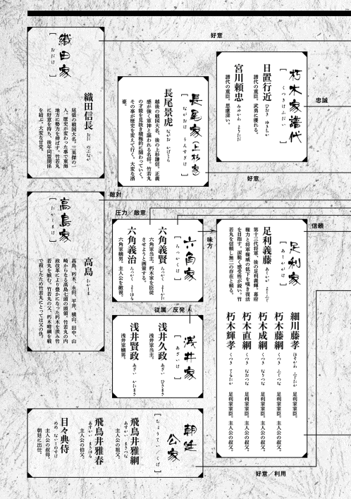

| 淡海乃海 水面が揺れる時～三英傑に嫌われた不運な男、朽木基綱の逆襲～ | |
| イスラーフィール | |
| TOブックス (2017) | |
一五五〇年。足利将軍家が三好家に追放され、幕府が崩壊した歴史的な年。近江にある小領地・朽木にわずか二歳にして当主へ就任した男がいた。名を朽木元綱（竹若丸）。史実では信長や秀吉、家康たち三英傑を救った偉人にもかかわらず、ぞんざいに扱われた不遇な武将だ。だが、実は彼の正体は転生してきた歴史通の現代日本人だった！ 彼は不遇な朽木の運命を変えるべく、持ち前の強かさと雑学知識で次々と領地を拡大し、やがて天下統一への道を切り開いていく！ 今、遂に歴史の影に隠れた傑物へ脚光が当たる！

ILLUST．碧風羽
DESIGN．AFTERGLOW
新当主誕生
天文十九年（一五五〇年） 十月 近江高島郡朽木谷 朽木城 朽木稙綱
「御隠居様！ 御隠居様！」
儂を呼ぶ声とドンドンと床を踏み締める音、ガシャガシャという鎧の音が近付いて来た。急いでいる、切迫した口調、勝ち戦ではないな。弥五郎め、越中に敗れたか。儂の倅にしては不覚な。一緒に部屋に居た綾の顔が強張って蒼白になっている。
やれやれ、公家の娘はこれだから困る。舌打ちが出そうになったが何とか抑えた。やはり弥五郎の嫁には武家の娘が良かったか。孫の竹若丸の方が胆が据わっておるわ。落ち着いて座っておる。もっとも未だ二歳、事態が分からぬのかもしれん。
ガラリと襖が開くと、日置左門貞忠が部屋に入り、ドスンと音をたてて座った。大勢の家臣がその後ろで恐々とこちらを見ている。
「左門、如何した」
務めて穏やかな声を出した。
「御隠居様。宮内少輔様、河上荘俵山にて......、御討ち死に。......無念でございます！」
「！」
血を吐く様な口調、そして彼方此方から悲鳴が上がった。まさか討死とは......。朽木宮内少輔晴綱、父よりも先に逝くとは親不孝な息子よ......。孫の竹若丸は未だ二歳、さぞ心残りであったろう。
「御味方は総崩れ。父、五郎衛門行近が殿軍を務め退却をしております」
「そうか......」
総崩れか、五郎衛門は沈着な男だが退却は容易では無かろう。場合によっては五郎衛門の死も覚悟せねばなるまい。高島越中、朽木谷に押し寄せて来るかもしれん。痛いの、五郎衛門を失うのは痛い。左門では未だ五郎衛門の代わりは務まらぬ。朽木もこれまでかもしれん......。泣き声が聞こえた。傍で綾が泣いている。こんな時に城主の妻が泣くな！
怒鳴り付けそうになった寸前、ざわめきが起きている事に気付いた。見れば左門の後ろに集まっていた家臣達が顔を見合わせて何かを話している。多分、これまでだとかもう終わりだとか言っているのだろう。やれやれ、一つに纏めねば籠城も出来んな。さて如何するか......。
「うろたえるな！」
甲高い声が上がった。見れば竹若丸が立ち上がっていた。強い眼で周囲を見据えている。ざわめきが止んだ。家臣達が驚いて竹若丸を見ていた。
「にんげんごじゅうねん、けてんのうちをくらぶれば、ゆめまぼろしのごとくなり」
竹若丸が低い声で回らぬ口でゆっくりと謡った。敦盛か！ 知恵付きの早い子だが何時の間に覚えたのだ？

「落ち着いたか！」
竹若丸がまた家臣達を叱咤した。圧倒されている、二歳の幼児に家臣達、いや皆が圧倒されている。儂の孫は何者だ？ 面妖な所が有るとは思っていたが......。竹若丸が貞忠に眼を据えた。
「左門、俺と死ねるか！」
「し、死ねまする！」
貞忠が身を乗り出して叫んだ。竹若丸が頷く。そして視線を後ろの家臣達に向けた。
「俺と死ねる者は残れ！ 余の者は要らん、去れ！」
家臣達が顔を見合わせた。
「し、死ねまする！」
「竹若丸様と共に戦いまする！」
家臣達が口々に応えた。心が一つになったか、良し！
「天晴れぞ、竹若丸。晴綱も喜んでいよう、見事じゃ。皆、守りを固めよ。物見を出せ！ それから清い水と布、薬の用意を忘れるな！」
「はっ」
家臣達が声を出して答えた。どれ、もう一つ。
「竹若丸、なんぞ有るか？」
面白半分で訊くと竹若丸が頷いた。
「朽木は負けぬ！ 握り飯と味噌汁を忘れるな」
一瞬の間の後、どっと笑い声が上がった。儂も笑った、笑いが止まらぬ。
負けぬと言った後に握り飯と味噌汁か。確かに腹が減っては戦は出来ぬ。それにしても面白い小僧よ。
「竹若丸の言う通りぞ、朽木は負けぬ。女共は握り飯と味噌汁を忘れるな！」
「おう！」
勝ち戦のように声が上がった。そして男も女もドシドシと音を立てて出て行った。もう大丈夫だ、これでむざむざと負けはせぬ。竹若丸がドスンと音を立てて座った。
「御爺、疲れたぞ」
「そうか、疲れたか」
竹若丸が頷く。
「敦盛など何時覚えた？ 誰に教わった？」
「誰も教えておらん。最初から頭に入っておる」
「また妙な事を」
だから家臣達から変わり者の若と言われるのだ。
「お義父様、これから如何なるのです？ 敵は押し寄せてくるのですか？」
綾が不安そうな顔で訊いて来た。困った嫁だ。
「母上、心配いりませぬ。朽木は負けませぬ」
「その通りだ。心配はいらぬ」
二人で励ましたが綾の不安そうな表情は変わらない。
「いざとなれば皆で父上の元に参りましょう。寂しくは有りませんぞ」
「竹若丸......」
「竹若丸の言う通りだ。案ずるな、少し休め」
「......はい」
「竹若丸、疲れたのであろう、そちも少し休め」
「はい」
竹若丸が立つと綾も立ち上がり部屋を出て行った。母親と子供で立場が逆だな。綾は頼りにならん。
「......クックックッ。いかんの、倅が死んだと言うのに」
倅が死んだ。朽木宮内少輔晴綱、歳は数えで三十三歳。痛いの、朽木家にとっては痛手だ。そして負け戦、此処を凌いでも数年は兵は出せまい。朽木を守るだけで精一杯になる。だが、笑いが止まらん。朽木は晴綱を失ったが竹若丸を得た。家臣達も皆がそれを認めた筈。さて、如何なる？ 五年、十年、十五年、楽しめそうじゃ......。
結局、高島越中は朽木谷に攻めて来なかった。朽木は一方的に敗れたわけでは無かった、晴綱はそれなりに高島に損害を与えたらしい。殿軍を務めた五郎衛門も良くやった。晴綱の首は取り戻せなかったが遺体は回収出来た。朽木家重代の太刀、朽木丸も遺体と共に戻って来た。
葬儀を終わらせた十日後、一族が集まった。二男長門守藤綱、三男左兵衛尉成綱、四男右兵衛尉直綱、五男左衛門尉輝孝。いずれも二十代、皆幕府に出仕し、それなりの待遇を得ている。息子達はいずれも実直で野心は薄い。いやそれは朽木の色かもしれん。その所為で代々の当主は上からは信頼されたが身代は大きくならなかった。要するに要領が悪いのだ。そして儂の弟の蔵人惟綱、その息子の主殿惟安。蔵人と主殿は近くの西山城に詰めている。西山城は朽木城の後詰めの城だ。高島越中が朽木城に攻め寄せなかったのも西山城を慮ったという事が有るだろう。
「では父上、跡目は竹若丸に？」
「そうだ。不満か、長門守」
長門守藤綱が首を横に振った。
「そうでは有りません。皆が竹若丸に跡目をと望んでいるのは知っています」
「しかし本当なのですか。竹若丸が敦盛を謡ったなど、とても信じられませんが」
五男の左衛門尉輝孝が訝しむと皆が頷いた。
「事実ぞ、左衛門尉。儂がこの目で見た、この耳で聞いた。疑うか？」
「そんな事は有りません」
左衛門尉が慌てて答えた。きまり悪そうにしている。
「それに綾は飛鳥井家の出ぞ。無視出来るか？」
見渡したが答える人間は居ない。息子達は俯いている。
竹若丸の母、綾は飛鳥井雅綱の娘だ。雅綱は正二位権大納言、既に息子の雅春、綾の兄に家督を譲ってはいるが宮中に影響力は保持している。雅春は従三位参議左衛門督の地位に有り飛鳥井家は足利将軍家との関係も悪くない。竹若丸を跡目から外すという事は飛鳥井家との縁を切るという事になるだろう。
足利将軍家との関係も微妙なものになる。これまで将軍家と密に接してきた朽木一族にとっては生き方を変えざるを得ないという事だ。だが今更如何変える？ 六角に付くのか？......飛鳥井家からは綾に戻って来るかと文が来ているらしい。綾は迷っている。そして竹若丸に京に行くかと訊いたようだが竹若丸は嫌がったようだ。綾が京に戻るのは朽木にとって得策ではない。だが竹若丸が此処に残ると言った以上綾も残るだろう。やはり跡目は竹若丸だ。
「家臣達も竹若丸を跡目にと望んでいる。朽木家の当主は竹若丸じゃ」
「はっ」
「暫くは儂が後見する、良いな」
「はっ、異存有りませぬ」
「では明日、改めて対面の儀を行う事とする」
「はっ」
長門守が頭を下げると皆がそれに続く。蔵人と主殿に残る様に言って息子達を下がらせた。蔵人と主殿を傍に呼んだ。
「如何かな、蔵人。その方は竹若丸に不満か？」
「いやいや、兄上の見立てに反対は致しませぬ」
蔵人が首を横に振った。
「そうか、主殿は如何じゃ？」
「それがしも父と同じでございまする」
倅達は京に帰る、傍に居るのはこの二人。嘘の下手な二人だ、味方に付ければ問題はない。
「兄上は大分竹若丸が気に入ったようだが、その器量、如何見るのかな」
「そうよな、朽木は近江高島郡の小さな国人領主よ。六角や浅井には到底及ばん。それどころか若狭の武田にも遠く及ばぬ。じゃが竹若丸が成人し壮年になる頃には......、楽しみよ」
蔵人が笑った。
「可笑しいか？ 蔵人」
「いや、随分と入れ込むものだと思いましてな。竹若丸も期待に応えるのが大変でありましょう」
蔵人がまた笑った、儂も笑った。不快ではなかった。自分でも可笑しいくらい入れ込んでいると思う時が有る。
「そうかもしれん。しかし今は戦国乱世、何が有っても不思議では有るまい。関東では河越城の夜戦によって扇谷上杉家は滅亡、山内上杉家も風前の灯火じゃ。代わって勢いを増しているのが京からの流れ者の伊勢、どうじゃ」
「ふむ、そうかもしれませぬな」
蔵人が頷くと主殿も頷いた。伊勢は北条と名を替え今では関東の一大勢力になっている。それ程に世の変遷は激しい。
「口惜しゅうござるのか、兄上」
「......」
「朽木は将軍家の直属。じゃが六角家に管領代殿が現れ、当家はその勢いに屈せざるを得なかった。浅井相手の手伝い戦、本意ではなかったでありましょう」
「......今の朽木は小なりとはいえ自らの足で立っておる」
声が小さくなった。
「竹若丸なら覆せると御思いかな」
「そこまでは......」
首を振っている自分が居た。口惜しかった。六角定頼、六角家の勢いを天にまで届かせた男。儂も朽木のために戦ったがあの男の勢いには屈せざるを得なかった。憎い男だ、だがその力を認めざるを得ん男でもある。男ならああでなくてはなるまい。儂にはその力が無かったという事だ。あの戦で腕を負傷した。しかし、その傷の痛みなどあの男に屈する屈辱に比べれば何程の事も無かったと覚えている。
あの男も五十を超えた。最近健康が優れぬとも聞く、長くはあるまい。後を継ぐ左京大夫義賢は悪い噂は聞かぬが特別良い噂も聞かぬ。確実に六角の勢いは落ちる。十五年後、二十年後、儂は生きてはおるまい。しかしその時朽木はどうなっているか......。朽木も六角も元は佐々木源氏、同じ血を引いているのだ。六角に出来た事が朽木に出来ぬと誰が言えよう。六角までは行かずとも浅井に追い付ければ......、その土台だけでも竹若丸が築いてくれれば......。
「ふむ。兄上、どうかな。梅丸を竹若丸の傍に置いては」
「父上！」
主殿が声を上げた。梅丸は主殿の嫡男、いきなりの事で驚いたのであろう。
「騒ぐな、主殿。当主の元で共に暮らす、おかしな事ではあるまい。それに学問と武芸を兄上に教えていただけるのじゃ。親というのはどうしても子供には甘くなるからの」
「......それは」
主殿が口を噤んだ。
「どうかな？」
蔵人が儂の顔を覗き込んできた。眼には悪戯な光が有った。
「良いのか？」
「頼んでいるのはこちらでござる」
「ならば預かる。竹若丸には良い遊び相手になろう」
「決まった」
蔵人が頷く、儂が頷く。自然と二人で笑い出した。楽しくなってきた。竹若丸に賭けるのは儂だけではない様だ。
翌日、朽木城の大広間に親族、家臣達が集まった。正面に竹若丸を連れて進み、皆に向かい合った。
「本日、只今より竹若丸が朽木家の当主となる」
「おめでとうございまする」
蔵人が家臣を代表して祝うと皆がそれに続いた。拍手が響いた。空気が明るい、皆が竹若丸の当主就任を喜んでいる。
「竹若丸、なんぞ有るか？」
竹若丸が儂を見上げた。
「......御爺、俺が当主か」
「そうじゃ」
「傀儡か？」
ざわめきが起きた。皆驚いている。相変らず突拍子も無い事を言う小僧よ。対面の場で傀儡とは......。
「そうではない。この御爺が手伝うが紛れも無く本当の当主ぞ」
「そうか......。では好きにやって良いのだな」
「良い」
儂が答えると竹若丸が頷いた。そして皆に視線を向けた。
「皆三年待て。何も言わずに俺に仕えよ。三年後、不満が有れば俺に言え。聞こう」
皆が困惑している。三年か、三年で結果を出すか。全くもって面白い。
「皆、聞いたな。三年、何も言わずに竹若丸に仕えよ」
「はっ」
改めて皆が竹若丸に頭を下げた。
「如何するつもりじゃ、竹若丸」
大広間から皆が去った後、竹若丸に尋ねてみた。
「......朽木を豊かにする」
「豊かに？」
竹若丸が頷いた。表情に笑みが有る、成算有りのようだな。
「何をするつもりじゃ？」
「うむ。富国強兵、殖産興業。そして所得倍増じゃ」
ふこくきょうへい？ 富国強兵か？ それは分かるがしょくさんこうぎょう？ しょとくばいぞう？ 何だそれは？ 分からん、また妙な事を言い出しおった。
「御爺、楽しくなるぞ」
「そうか」
竹若丸が笑い出した。儂も笑った。一体どんな事を仕出かすのか、楽しみな事よ......。
始動
天文二十二年（一五五三年） 七月 近江高島郡朽木谷 朽木城 朽木稙綱
「御爺、朽木は貧しいな」
城の出窓から外を見ていた竹若丸がポツリと呟いた。
「竹若丸よ、そちは妙な事ばかり言うの。朽木が貧しければ豊かな所など有るまい。そうであろう、梅丸」
「御隠居様の言う通りです、竹若丸様」
儂と梅丸が竹若丸の言葉を否定すると竹若丸が不満そうな表情を見せた。七月の夕暮れは暑い。その暑さを賑やかに鳴く蝉の声が更に暑くさせる。竹若丸の頬から喉にかけて汗が流れるのが見えた。しかし気にする事も無く竹若丸は外を見ている。
嘘を言ったつもりは無い。竹若丸が当主となって三年、朽木は日々豊かになりつつある。当初は竹若丸に不安を持っていたかもしれない家臣、領民達も今では無条件に竹若丸を信じていると言って良い。それほどに朽木の発展は目覚ましい。
「何故そんな事を言うのじゃ？」
「もう直ぐ夕餉だ。今日も稗と粟の入った雑穀飯だろう。俺は白飯が喰いたい」
思わず吹き出してしまった。梅丸も困った様に笑っている。
「仕方有るまい。お前が澄み酒を作った所為じゃ。日ノ本の彼方此方から澄み酒をと言ってくる。澄み酒を作るには米が要る、儂らの食べる分を減らして作るしかあるまいが」
「此処まで酷い事になるとは思わなかった」
小さな声だ。悔いているのか？ また可笑しくて笑ってしまった。
竹若丸が当主になって最初に行った事が澄み酒を作る事だった。濁り酒にいきなり竈の灰を入れるなど気が触れたかと思ったが、一晩経つと澄んだ酒が出来ていた。しかも味が良い。売り出すとたちまち高値で取引された。特に新年の祝いなど縁起物には付き物となった。出陣式にも使う。今では朽木の名物として商人達が遠くからも足を運ぶ。
「木地師が喜んでおったぞ、塗り師もじゃ。酒が澄んでいるからの、杯も綺麗な塗の物が欲しがられて飛ぶように売れるそうじゃ。朽木の塗り物は日野の塗り物に負けておらん。いや、今では朽木の塗り物の方が評価は上らしいではないか。京の都でも評判だと飛鳥井家からの文に書いてあったわ」
儂が褒めると梅丸が勢いよく続いた。
「竹若丸様が盃に十二支の干支を描いては如何かと仰ったからです。凄い人気だそうですよ」
「漆器では腹は膨れん」
ボソッと竹若丸が言った。また笑ってしまった。梅丸も吹き出している。我が孫は巧まずして人を笑わせる。
「困った奴じゃ。のう、梅丸」
「......」
儂が梅丸に問うと梅丸は曖昧な表情をしていた。良い傾向じゃ、梅丸は儂の言葉に相槌を打とうとはせなんだ。竹若丸に心服しているからじゃろう。たとえ祖父の言葉であろうと主君である竹若丸を批判は出来ないという事だ。
「もう直ぐ秋になる。刈り入れの季節じゃ。そうなれば白飯も喰えよう」
竹若丸が首を横に振った。
「いや、米は他所から買う。豊作の所が有る筈、そこから安く買って澄み酒を造って高く売る。その方が良い」
また妙な事を考えおったの。
「ほう、......どうして今は買わんのだ？ さすれば白飯が食えよう」
「今は米の値は高い」
「なるほど。では刈り入れを待って米を組屋に買わせるか」
「うむ、そのつもりじゃ。御爺、頼むぞ」
「分かった」
組屋に依頼状を書くのを手伝えという事だな。竹若丸と儂の連名による依頼状、普通なら竹若丸の名は飾りと見るであろうが朽木は逆じゃ。儂の名が飾りよ。また笑い声が漏れた。
さて、組屋源四郎か。若狭の大商人だが一年ほど前から自ら朽木に出入りするようになった。組屋程の商家なら朽木程度の領主にはそれほど力を入れるような事はない。組屋は竹若丸を大分買っている様だが......。一度腹を割って話してみるか。商人が何を竹若丸に見ているのか、知っておく必要が有るかもしれん。
天文二十二年（一五五三年） 七月 近江高島郡朽木谷 朽木城 竹若丸
俺と御爺と梅丸の三人で並びながらこれは夢ではないのだとまた思った。何度目かな、不思議な事だ。昭和に生まれて二十五年以上過ごした。平成の世でも同程度に過ごした。気が付けば五十歳を超えていたな。五十を過ぎれば自分の人生も終盤だ。どんな一生だったか嫌でも分かる。特別な事の無い一生だった。平凡過ぎるほど平凡な一生だ。
結婚はしなかった。女は好きだったが結婚は面倒と思う自分が居た。幸い三人兄弟の末っ子だったので、親も煩くは言わなかった。このまま平凡な人生を送り特別な事も無く死んでいくのだろうと思った。不満は無い。ガキの頃は有名になりたいと思った事も有ったが今ではそうは思わない。馬鹿なマスコミに追いかけられて窮屈な思いをするのはまっぴらだと負け惜しみでなく思っていた。
最後に何か残したいと思ったから本を書こうと思った。昔から本を読むのが好きだったからな。売るつもりは無かった。所詮は自己満足、小説サイトに投稿して、適当に讃辞と批判を受けられれば十分だった。歴史が好きだったから良くある転生物でも書こうと思った。美濃の小領主の息子に生まれて織田信長に仕える。そして天下布武を手伝う。そんなストーリーだ。
一応色々と調べた。領地を豊かにする方法とか簡単な金儲けの方法とか。余り良いのは無かったな。簡単に出来そうなのは清酒、シイタケ栽培、綿糸、石鹸ぐらいだった。後は関所を廃して楽市楽座、そんなものだ。現代人の知識ってのは過去に行っても余り使えない。まあそうだよな、石器時代に飛行機が飛ぶわけが無い。戦国時代だってそれは同じだ。今俺達が豊かな暮らしをしているのは過去の積み重ねによるものだ、その積み重ねを無視した設定は意味が無い。
それなのにだ。如何いうわけかこの時代に放り込まれた。最初は夢だと思った。何と言っても赤ん坊になっていたのだから。有り得ない、もう一度眠れば現実に戻るだろうと思ったが何時まで経っても戻らなかった。これが現実だと思うと笑えた。五十年以上平々凡々に生きてきてこれは無いだろうと。笑うしかなかったな。妙に御機嫌な赤ん坊だっただろう。
現実に向き合って生きていくとなれば此処が何処で何時なのか、自分は何者なのかを知る必要が有る。有り難い事に俺の周りでは日本語を喋っていたから日本なのだという事は理解出来た。服装や髪型から明治より前だという事も分かった。そして周囲の会話から江戸時代になっていない事も分かった。戦国時代、多分千五百四十年から六十年の間だろう。正確な年数は分からない、何と言っても元号が何時を表しているのかさっぱり分からないんだ。ただ浅井、六角、三好、朝倉なんて名前がポンポン出て来る。大体の所は分かる。
そして俺はかなりの家に生まれたと分かった。如何見ても住んでいる家は百姓家ではないし俺は大事に扱われている。周囲に人も多い。最低でも侍大将クラスの家だろうと思った。しかし場所が良く分からなかった。近江の国だという事は早い段階で分かったが朽木氏、朽木谷というのが分からない。
当然だよな、俺は朽木を朽木だと思っていたんだから。本当は朽木だった。間違った情報からは間違った解しか得られない。良い勉強になった。ついでに言えば琵琶湖、こいつも出てこない。琵琶湖は淡海と呼ばれている。母親の綾は淡海乃海と呼ぶ。万葉集ではそう呼ばれているそうだ。
そんなこんなで俺は朽木谷を領する朽木家の跡継ぎだと分かった。要するに近江高島郡の国人領主の家に生まれたわけだ。石高は八千石、江戸時代なら旗本だな。まあこの時代の国人領主では決して大きいとは言えない。むしろ小さい方だろう。歴史に出る事は殆ど無い、その他大勢の一人だ。
「竹若丸、如何した？」
気が付けば御爺が不思議そうな顔をして俺を見ていた。
「別に、なんでもない」
「そうか、時々竹若丸は黙り込むからのう」
「そうかな」
梅丸に視線を向けると頷いている。ふむ、少し気を付けるか。
朽木氏というのは御爺によれば近江佐々木源氏の庶流の一つらしい。佐々木源氏は平安末期から鎌倉初期にかけて源平合戦で活躍して、源頼朝に信頼され厚遇された。近江を中心に全国に勢力を広げたと御爺は言っている。佐々木源氏からは大きく四つの家が出来た。京極、六角、大原、高島だ。京極、六角は言うまでもない、本を書こうと思った時に調べたから俺でも知っている。
京極家は鎌倉幕府末期に佐々木道誉が現れる事で大きくなった。道誉はバサラ大名で有名な男だが武将としても一流だった。時勢を読むのも上手かった。鎌倉幕府打倒において大きな功績を立て足利尊氏に協力して幕府成立に大きく貢献した。室町時代、京極家は出雲、隠岐、飛騨等の守護に任じられ幕府内でも四職、七頭の家格を持つ家柄として重んじられている。但し今現在は下剋上で没落したと言って良い。京極家が復活するのは安土桃山に入ってからだ。
一方の六角家だがこっちは京極家ほど立ち回りは上手くなかった。鎌倉幕府に忠義立てしたせいで佐々木源氏の宗家であるのに京極家ほど室町幕府では重んじられていない。それでも近江の守護だ。それなりに評価はされている。六角家の存在が大きくなるのは戦国時代に入ってからだ。六角定頼が現れ畿内の政局を左右するほどの影響力を振るう事になった。但し、定頼以降六角家は少しずつ力が失われて行く。そしてこちらも没落する。復活はしない。
六角家が勢力を増した時、朽木家は御爺の代だったが定頼に従わざるを得なかった。その定頼も去年死んだ。御爺は複雑な想いを持ったようだ。口惜しい様な、哀しい様な、ホッとした様な......。分かるわ、そういう想いをさせる奴っているよ。そして年を取ればそういう感傷を感じ易くなる。御爺にとって定頼は良い意味でも悪い意味でも意識せざるを得ない男だったんだろう。
朽木家は京極、六角とは直接の関係は無い。別系統の高島家の庶流だ。高島家は近江高島郡を拠点に勢力を伸ばした。朽木も高島郡に有るからそれは分かる。そして朽木家の他に永田、平井、横山、田中の分家を生み出している。いずれも高島郡だ。高島、朽木、永田、平井、横山、田中の六家、そして山崎という別系統の家を加えて高島七頭と呼ぶらしい。
もっともその勢力範囲は高島郡の南西部に止まり北東部には及んでいない。七家合わせて大体五万石程度の大きさらしい。とても京極や六角とは比較にならない。この後、千五百六十年代後半になると浅井氏が高島郡に勢力を伸ばす。殆どが潰されるか服属した筈だ、その後は朽木家を除けば名前を聞かない。浅井と共に滅んだ可能性が有ると思っている。
高島家だが越中守という官職を代々世襲した所為で佐々木越中家と呼ばれている。力は無いけど家格は高いってところだ。意味無いよな。朽木では御爺も家臣達も高島越中としか呼ばない。親父が死ぬ前からだ、多分嫌いなんだろう。俺も嫌いだ、こいつの所為で俺は苦労している。
俺が朽木家で知っているのは朽木元綱の事だけだ。織田信長が越前朝倉攻めでズッコケた時に信長を助けたのが元綱だった。言ってみれば命の恩人だ。でも信長からはあまり評価されなかったらしい。関ヶ原の戦いの頃は確か二万石程の小大名だった筈だ。信長だけじゃない、秀吉もあまり評価しなかったのだろう。
そして関ヶ原の戦いでは西軍から東軍に寝返って西軍に止めを刺すという大功を上げた。だが家康もあまり元綱を高く評価しなかったようだ。事前に裏切ると連絡していなかったのが原因だ。二股かけたんだろうと疑われたのだと思う。実際そうだったのかもしれない。元綱という男は要領の悪い、運の悪い男だったようだ。歴史に名を残す場面で功績を上げながらそれが全然評価されていない。不思議な男だな。で、年齢からすると俺はその不思議な、不運な男に転生したらしい。これまた笑える話だ。
でも俺は歴史を知っているからもう少し上手くやれるだろうと思った。信長の時代に最低でも三万石から五万石。秀吉の時代には七万石から十万石程度。そして関ヶ原で家康に味方して十万石以上。後は自分の息子、又は孫に徳川家から嫁を迎えて朽木家の安泰を計る。そう思ったんだけどな。
まさか親父が戦死するとは思わなかったわ。でもそれで理解したよ、今は戦国時代なんだって。敵が攻め寄せてくれば俺も殺されたかもしれない。あの当時、俺は二歳だった。それでも生死の境に立たされたんだ。嫌でも生き残るために動かざるを得なかった。家臣達を叱咤したのは良かったが注目されて焦ったわ。咄嗟に敦盛を謡って凌いだけど。御蔭でまた妙な子供だと母親には気味悪がられた。弟が居たら家督争いが起きたかもしれない。
朽木は決して安全じゃない、周囲には朽木を狙う奴らが大勢居る。自分の身を守る必要が有る、そう思った。幸いだったのはあの直後に足利将軍家が朽木に逃げてきたことだ。朽木家ってのは代々将軍に仕えて忠誠を尽くしてきたらしい。特に御爺は将軍の信頼が厚かったようだ。それで頼って来たのだろう。俺が生まれた頃にも頼って来たし、それ以前にも何度か朽木に逃げてきたと聞いている。将軍が逃げて来ている以上、高島越中程度の小物が攻めてくる事は無い。
便利なんだよ、朽木は。京から近いが周囲を山に囲まれている。大軍は動かし辛い。そして近江は足利将軍家と親しい六角氏の勢力範囲だ。足利将軍家から見れば比較的安全な場所に見えるのだろう。ただ俺が分からなかったのは将軍の名前が足利義藤だった事だ。年代的に見て義輝じゃないかと思うし剣術好きな所も合致する。だが名前は義藤だ、よく分からん。改名するのかな、何か事情が有って義輝ではなく義藤になったのか。それとも良く似た歴史を持つ世界に生まれ変わったのか......。
義藤は一年程で争っていた三好長慶と和睦して京へ戻った。感謝しているよ、あの一年は大きかった。敗戦で被った損失、その全てを取り戻せたわけじゃないが態勢を整える事が出来た。混乱したままだったら高島越中が攻めて来ただろう。それを防ぐ事が出来たんだからな。如何しているかな、また三好長慶と争っているが。
「御爺、公方様と三好の戦いだが如何なのだ？」
「公方様じゃが旗色は良くないらしい」
御爺の顔が曇っている。心配なのだろう、公方様には思い入れが有るからな。
「また朽木に御出でになるかもしれん」
「そうか、では準備をした方が良いかな」
「そうじゃのう」
また逃げて来るか。二年持たなかったな。京は三好が居るから居心地が悪いのだろう。そして朽木は居心地が良いのかもしれん。猫じゃないが、そのうち居付きそうだな。
二年前、将軍義藤は父親の義晴を失った直後だった事もあり御爺の事をかなり頼りにした。そして同じように父を失った俺の事を可愛がってくれた。悪いとは思ったが利用させてもらったよ、その気持ち。義藤に頼んで国友村から鉄砲鍛冶を朽木に呼び寄せた。無茶な願いだが国友村は要請を断れない。何と言っても国友村が鉄砲を作るようになったのは義藤の父親、義晴が国友村に鉄砲を渡して同じものを作れと言ったのがきっかけだからな。
今では年間二十丁程を生産している。朽木家でも三十丁を所持する事が出来た。三十丁では野戦では効果は余り期待出来ないだろうが籠城戦なら十分期待出来る。指揮官クラスを狙い撃ちさせればかなり効果的な筈だ。鉄砲鍛冶には朽木の人間を弟子入りさせているから二、三年後には年間五十丁は生産可能になるだろう。その頃には野戦でも使用可能になるだけの鉄砲を保有する筈だ。
それと刀鍛冶を呼んだ。義藤は剣術好きだけあって刀にも関心が強い。将軍のために刀を作らないかと言って近隣の刀鍛冶に声をかけたところ、何人かが応えてくれた。若狭から宗長、宗吉、冬廣。美濃からは関兼匡、伊勢からは正興とかいう刀鍛冶が来た。宗長、宗吉は来派の系統、冬廣は相州、兼匡は美濃、正興は千子村正の系統らしい。しかし俺は誰も知らん。不安だったが義藤は彼らの作った刀を喜んで受け取ってくれた。俺が気を遣ってくれていると嬉しかったらしい。鍛冶達にとっては励みになった。技術交流をしながら刀を作っている。
刀鍛冶を呼んだのは義藤のためじゃない。朽木の軍事力増強のためだ。そして産業力、経済力向上のためでもある。この時代は戦争が常態化しているので、刀の消耗が激しい。刀鍛冶を保有するのはそのためだ。そして将軍義藤に受け取って貰えた以上、売る時は将軍も使っている刀だと言える。将軍というブランドを使って高く売れる。そろそろ甲冑師も呼んだ方が良さそうだな。
「公方様も驚かれるでしょう。朽木は随分と賑やかになりましたから」
「そうじゃのう」
梅丸と御爺が楽しそうに頷いている。でもなあ、関所を廃すと言った時には皆で反対したけどな。説得するのが大変だった。今では御爺達も関所を廃する利を理解している。関所で金を取らない所為で近江から、若狭から商人、旅人が来易いのだ。彼らが朽木の物品を買ってくれる。そして朽木には皆が欲しがる物が有る。
椎茸、石鹸、清酒、綿糸、刀、漆器、木材。椎茸は朽木城、西山城内で大規模に栽培している。そして石鹸は朽木の領民に製造方法を教えた。石鹸と言っても原始的なものだ。油に灰を混ぜて作るだけだから余り手間はかからない。但し利益はかなり出る。家庭内工業の誕生だな。清酒は製造所を作って領民を雇っている。
領民達を豊かにして初めて朽木家は領民の支持を得られる、強くなれる。鎌倉時代から治めている土地だが気を抜く事は出来ない。一揆なんか御免だ。税率は四公六民にしたから領民は喜んでいる。刀鍛冶と鉄砲鍛冶は物納にした。四割を治めさせ六割は自由に売らせた。もっとも出来るだけ鉄砲は朽木家で買い取っている。
金が要る。税を軽減し関所を廃した以上生産力の向上、特産物の生産販売による税収アップしか方法は無い。兵農分離を進め労働力を常に維持しなければならん。そして産業を育成し税収アップだ。そのためには金が要る。今現在雇い兵は百人程だ。後百五十は雇う必要が有る。それと朽木家に昔から仕えている武士が五十程。合わせて三百。当主になって三年、まだまだだ。
義藤が来るなら当分戦は無いと見て良い。領内発展と軍の編成、武器の整備に時間をかけられる。先ずは三間半の長槍隊の編成だな、そして運用。その後に弓隊、鉄砲隊の編成と運用を今の侍大将、物頭クラスに教え込まないと。それと梅丸だけでは足らん。俺の側近を養成する必要が有る。後で御爺に相談するか。
悲惨な一族
天文二十二年（一五五三年） 七月 近江高島郡朽木谷 朽木城 朽木稙綱
「確かに御預かりしました。三百貫にて秋の新米を買えるだけ買う、そういう事ですな。それと百貫で早急に米を買い付けて朽木にお届けする」
組屋源四郎が依頼状を仕舞いつつ確認してきた。
「うむ。その方も知っていよう。公方様の旗色は決して良くない。朽木に参られるかもしれん。稗や粟を出すわけにはいかんからの」
儂が答えると組屋が〝それは、まあ〟と言って失笑した。三十代後半、抜け目ない商人の顔が笑み崩れた。
「それと竹若丸がこれからも米を頼む事になるだろうと言っておった。もし余力が有るのなら値が上がる前に米を買い付けておいた方が良かろうと」
「ほう、朽木様は買い入れる余力が有りませぬか？」
値踏みする様な視線だ。正直快くは無い。
「それも有るが正直に言えば米を置く場所が無い。朽木城は狭いのでな」
「なるほど、それは失礼を申し上げました」
また組屋が失笑した。
「改めて買う時はその時の相場で買うと竹若丸は言っておる」
「宜しいのですかな？」
組屋の目が抜け目なく光った。
「構わぬ。互いに儲ける事で良い関係を築きたいとの事じゃ」
「それはそれは......、有難うございます。なかなかそう言って下さる方は居られませぬ」
今度は素直に感心している。
「ところで公方様の事だが、何か聞いているかな？ 東山霊山城に籠った後の事だが」
儂が問うと組屋が首を横に振った。
「公方様の事は分かりませぬ。ですが筑前守様の事は聞いております。兵を集めているようですな」
「ほう、どのくらいかな？」
「ざっと二万は超えましょう」
二万か、思わず唸り声が出た。三好筑前守長慶、本気になれば四万は出せる筈だが......。
「では本気ではないのかな？」
それならば、息子達の生き残る可能性は高くなる。だが組屋は首を横に振った。
「それは如何でございましょう。何と言っても管領代様が居られませぬ。二万で十分と思われた可能性はございます。実際管領代様が居られれば三好様も......」
〝うふふ〟と組屋が含み笑いを漏らした。強かさが滲み出るような笑いだった。
「左京大夫殿では抑えにならんか」
組屋がゆるゆるとまた首を横に振った。
「代替わりして未だ兵を出せるような状況ではないようですな。或いは筑前守様と戦うのを躊躇っているとも考えられます。負ければ亡くなられた管領代様には及ばぬと誹しられましょう」
なるほど、左京大夫義賢、やはり父親の定頼には及ばぬか。朽木にとっては望ましい事だが公方様にとっては痛手だ。悩ましい事よ。息子達が無事ならば良いが......。
「米の用意は妥当かな」
「そのようですな、稗や粟では......」
「いかぬからの」
「はい」
組屋と顔を見合わせ、声を上げて笑った。思いがけず和やかな空気が部屋に漂った。
「ところで竹若丸様は？」
「勉学に励んでいる」
「ほう、竹若丸様が？」
「未だ五歳だ。学ぶべき事は沢山ある」
「そうでしたな、未だ五歳でしたな」
組屋が大きく頷いた。誰もが忘れがちだが竹若丸は未だ五歳だ。学ぶべき事は沢山ある。
ここ最近、竹若丸は家中から同年代の子供を小姓として出仕させた。日置、宮川、荒川、長沼の各家から鍋丸、岩松、寅丸、千代松の四人。自分の手足として使う事を考えている様だ。儂もそろそろ梅丸以外にも傍に人を置かねばならんと思っていたところだ。......丁度良い、例の事訊いてみるか。
「組屋、そなた竹若丸を如何思う？ 正直なところを聞きたいものだ」
「......正直なところでございますか」
じっと組屋が儂を見た。強い視線だ、商人が武家に向ける視線ではない。負けてはならんと見返した。暫くしてすっと組屋が視線を逸らした。掌が汗でじっと濡れるのを感じた。
「組屋は商人でございます。商人は利を得るのが仕事。されば、儲ける事が出来ない相手とは付き合いませぬ」
「......なるほど」
「その点朽木谷は面白うございますな。活気が有ります。次に何が生まれるのかと心が躍ります」
「心が躍るか」
「はい。ついつい儲けを度外視して付き合いたくなります。困ったものですな、竹若丸様によう似ております」
この男、儂と同じ事を想っている......。
「十年後、十五年後が楽しみじゃ、のう？」
「真に」
「儂は生きておらぬかもしれん。その方は見る事が出来そうじゃの、羨ましい事よ」
組屋が視線を伏せた。
「......竹若丸様は誰よりも御隠居様に見て頂きたいと思っておられましょう」
「......見られれば良いの」
「はい」
長生きしたいものだ。
天文二十二年（一五五三年） 八月 近江高島郡朽木谷 岩神館 竹若丸
「民部少輔、また世話になる」
「はっ」
将軍義藤の言葉に御爺は感無量、そんな感じだ。民部少輔って呼ばれて嬉しいのかな。ここじゃ御爺は御隠居様としか呼ばれない。義藤が視線を俺に向けた。懐かしさと驚きが有った。
「竹若丸か、随分と大きくなったな」
「恐れ入ります。朽木を頼って頂けました事、嬉しく思いまする」
俺は出来るだけ殊勝に頭を下げた。朽木家は将軍家の信頼厚い家臣なのだ。不敬は許されない。俺の挨拶を聞いて義藤の家臣達が満足そうな表情をした。利用価値は沢山ある。お前らじゃないぞ、義藤がだ。煽ててヨイショしてラブラブな関係を築く。
将軍義藤が家臣を五十人程引き連れて朽木にやってきた。岩神館の大広間には義藤が上座に座り、家臣達が左右に分かれて座っている。その中には四人の叔父達も居た。俺と御爺は下座で御挨拶だ。家臣の中には細川晴元、細川藤孝もいた。吃驚だな。もっとも藤孝が居たから気付いた事も有る。義藤は義輝だ。藤孝は義藤から藤の字を貰ったのだろう。いずれ義藤は義輝に改名する筈だ、と思う。
それにしても米の買い入れが間に合って良かった。もう少しでこいつらに稗と粟を食わせる所だったわ。そんな事になったらラブラブどころかヒエヒエアワアワになってしまう。二度と朽木を頼る事は無くなるだろう。金はかかるが将軍が居るとなれば近隣の国人領主が攻めてくる事は無い。現代と違って安全と水は無料ではないのだ。この戦国では水利権をめぐって戦争が起きる事も多々有る。こいつらの食費は朽木を守るための必要経費だと割り切れ。元は取れる。いや、必ず取る！
「懐かしいの」
義藤が部屋の中を見回した。この岩神館は前回も義藤のために使われその前は義晴、義藤親子のために使われた。言ってみれば将軍家の別邸みたいなものだ。だからだと思うが庭園も有る。六角、浅井、朝倉が庭園造りには協力したらしい。設計者は当時の管領細川高国だそうだ。この男、かなりの風流人だったらしい。庭は朽木には分不相応な庭園になっている。
しかしなあ、将軍が臣下に追われて頻繁に逃げて来るって問題だよな。一体どうなっているんだって誰だって思うだろう。俺も御爺に聞いた。だが良く分からなかった。足利、細川、三好、そして畿内の武将達。ついでに各宗派の坊主達。それらが同族内で内部抗争をしたり、他を捲き込んで戦ったり和睦したり裏切ったりしている。酷い時は暗殺だ。混乱するだけで覚えられん。
この時代の畿内の歴史を学校教育で教えない筈だよ。多分生徒が混乱するだけで意味が無いと思ったんだろう。もしかすると教師まで混乱すると考えたのかもしれない。だから応仁の乱の後は下剋上が起き、戦国時代が始まって、桶狭間で信長が登場するという教え方になる。少なくとも俺が四十年程前に教わった歴史の授業はそうだった。だから俺もこの時代の京の事は殆ど分からん。というか俺が本を書くために或る程度詳しく覚えたのは桶狭間以降、千五百六十年以降だ。
「それにしても無念じゃ、また筑前めに追われるとは......」
義藤が俯いてハラハラと涙を流した。まだ十七歳だからな、多感な坊やなのだ。義藤の涙を見て家臣達が〝大樹〟、〝義藤様〟、〝公方様〟などと声を上げた。泣いている奴もいる。御爺も泣いていたし叔父達も泣いていた。俺も俯いて口惜しがっている振りをした。もっとも俺は振りだけだ。三好筑前守長慶、こいつの事を俺は嫌いにはなれない。但し混乱の原因の一つが三好氏に有る事は否定しない。
御爺の話によれば三好氏というのは清和源氏の流れを引いているそうだが、阿波国三好郡を本拠地にしたことから三好氏を名乗ったらしい。要するに阿波の国人領主だ。元々は南朝方の武将だったらしい。つまり阿波守護の細川氏とは敵対関係に有った事になるのだがその後、細川氏に服属した。そして阿波守護の細川氏の下で勢力を伸ばしていく。
三好氏が中央で活躍するのは応仁の乱以降だ。主君筋の細川氏を凌ぐほどの力を発揮し始める。いわば下剋上だ。もっともその活躍は順風満帆とはいかない、というより何度も地獄に叩き落されてきたと言って良い。三好の戦いは下剋上とそれを否定しようとする体制派の戦いともいえる。体制派の本拠地である畿内で戦った所為でその戦いは容赦無いものになった。
長慶の曽祖父、三好之長は戦争で敗れ斬首されているし、祖父の長秀も敗戦で自害に追い込まれている。父親の元長に至っては懸命に盛り立てた主君細川晴元に裏切られ、勝っていた戦をひっくり返されて一向宗に攻められて自害だ。悔しかったのだろう、元長は腹を切っただけでは死にきれず、腹から取り出した内臓を天井に投げつけて死んだと御爺が言っていた。酷い話だ、三好家の歴代当主が誰一人として畳の上で死んでいない。
いくら戦国の世とはいえ、ここまで悲惨な一族は居ないだろう。大河ドラマの舞台にならない筈だよ、余りにも凄惨過ぎる。後を継いだ長慶は当時十歳だったという。十歳で三好家を背負ったのだ、並大抵の苦労では無かっただろう。元長を裏切った晴元は今義藤に一番近い所に座っている。俺は長慶よりもこいつの方が嫌いだ。信用出来ない。ついでに言うと将軍側近の連中も信用出来ない。
こいつらが三好を嫌うのは三好が陪臣である事の他に阿波出身者である事が影響している。京の人間は他国者の権力者を嫌う傾向がある。つまり田舎者は頑張れば頑張る程嫌われるという事になるのだ。その辺を理解して三好は早い時期に阿波に帰れば良かったのだ、その方が楽に生きられただろう。もっともそれが出来ないのが人間だが。
「左京大夫殿を頼みましょう」
「朝倉もです。両者が手を組めば浅井も兵を出す筈。三好など恐れるに足りません」
六角義賢を頼もうと言ったのは藤孝だった。朝倉の名を出した男は分からない。御爺に尋ねると進士晴舎だと教えてくれた。義藤はウンウンと頷いている。他の幕臣達もだ。彼らの会話を聞いていると朝倉義景は細川晴元の娘婿らしい。だから兵を出すと考えている。晴元もまんざらではなさそうな表情だ。今にも京を奪還出来そうな勢いだが先ず無理だろうな。
六角義賢に兵を出す意思が有るならとっくに出している。今まで兵を出さなかったのは出す気が無いからだ。御爺が義賢は三好長慶と戦って負ける事を懼れていると言っていたが俺も同感だ。幕臣達も薄々気付いているな。進士晴舎が朝倉をと言ったのが証拠だ。単独では義賢は動かないと見たのだ。しかしなあ、朝倉を頼むと言うが朝倉が兵を出すかな？
三好は手強いぞ。長慶は勿論だが弟が三人いる。三好実休、安宅冬康、十河一存。いずれも戦上手だ。三好氏は何度も当主が死ぬ事で勢力を減退させた。その時の苦労を彼らは分かっている。敵に勝つために三好四兄弟は長慶の下に一つに纏まっているんだ。それに松永久秀、長頼兄弟もいる。こいつらを戦場で打ち破るのは容易な事ではないだろう。そして三好の勢力範囲は山城・丹波・和泉・阿波・淡路・讃岐・播磨に及ぶ。兵力面でも不安は無いのだ。六角義賢が躊躇うはずだよ。義藤の朽木滞在は長くなる。それが俺と御爺の読みだ。
天文二十二年（一五五三年） 八月 近江高島郡朽木谷 朽木城 竹若丸
夕刻になると朽木城の大広間に朽木一族、主だった家臣達が集まった。当主の俺と御爺が正面に坐り、他は皆左右に分かれて坐っている。全部で十四、五人か。俺が皆を呼んだ、これからどうなるのか、その予測をする必要が有る。それぞれの前にはゲンノショウコの入った茶碗が置いてあった。この世界、茶は蒸して粉砕したものを飲んでいる。高価だし面倒だ。そろそろ焙じ茶と玄米茶を作ろう。俺はあれが好きだ。
「父上、竹若丸殿、この度は面倒をかけます。公方様もお二人に宜しく伝えてくれとの事でした」
一番上の叔父、藤綱が頭を下げると成綱、直綱、輝孝の三人が頭を下げた。
「儂も竹若丸も面倒とは思っておらぬ。それより皆無事で何よりであったな」
「はっ」
御爺の言葉にまた四人が軽く頭を下げた。少しの間雑談を交わしてから本題に入った。
「叔父上方、京を奪還する手立てだが、公方様達は如何考えておいでかな。先程の話を聞くとどうも六角は当てにならぬと見ている様だが......」
俺が問うと叔父達が顔をしかめた。顔を見合わせ藤綱が頷いてから口を開いた。
「竹若丸殿の言う通りだ。六角の腰は重い、どうにもならぬ。かと言って六角の兵力無しに京を奪還出来るとも思えぬ。そこで六角の腰を上げさせるために朝倉をと考えている」
「六角、朝倉の連合軍ですか」
「そうだ、左門。六角、朝倉、それに浅井が加わる。それなれば勝算有りとみて六角も動くだろうとこちらは見ている」
日置左門貞忠、ゲジゲジ眉毛の二十代後半の男だ。朽木家では父親の五郎衛門行近と共に武を代表している。四番目の輝孝叔父の答えを聞いてウンウンと力強く頷いた。お前なあ、簡単に説得されるなよ。単純だからな、三年前も俺に簡単に丸め込まれた。ゲンノショウコを一口飲んだ。苦みが旨い。
「それで朝倉は動くのか？」
俺が問うとまた四人が顔を見合わせた。なんか嫌な感じだな。俺ってそんなに扱い辛いか？ これは朽木家の当主として当然の質問だろう。
「管領殿は十分脈は有ると言っている」
あのなあ、成綱。晴元の阿呆の言う事なんて俺は訊いてない。大体管領なんて呼んでいるが奴にその実が有るのか？ 京の都じゃライバルの細川氏綱が管領として三好長慶と共に京を治めているぞ。
「左兵衛尉の叔父上、叔父上の考えは？」
「......良くて半々だろうと見ている」
ボソボソと成綱が答えた。他の三人の叔父も視線を伏せている。同意見か。
「公方様、そして側近の方々は？」
「公方様は管領殿を信じたいとお考えだ。他の方々は......」
成綱が首を横に振った。義藤と晴元は勝算有り、他は贔屓目に見て五分五分か......。
「殿、殿のお考えは？」
俺に問い掛けてきたのは宮川新次郎頼忠だった。朽木家の重臣の一人で思慮深く慎重な男だ。歳は五十にはまだ間があるだろう。皆の視線が俺に集まる。一口ゲンノショウコを飲んだ。
「朝倉は先ず動かんな。期待するだけ無駄だろう」
彼方此方から息を吐く音が聞こえた。多分義藤達の滞在が長くなると思って溜息を吐いたのだろう。金がかかるし気も遣う、有難い事ではない。でもな、俺は安全保障費として割り切っている。
「朝倉の主敵は加賀の一向衆だ。それを放り出して京まで兵を出すと思うか？」
「しかし大永の時は兵を出しましたぞ」
「左門、その事は俺も御爺から聞いて知っている。だがな、二十年以上も前の事だ。今とは状況が違う」
俺が否定すると左門は不満そうな表情をした。大永七年？ 八年？ その頃の話だが朝倉家の名将、朝倉宗滴が六角定頼と組んで上洛したらしい。朝倉宗滴と六角定頼、スーパースターの揃い踏みだな。
「朝倉が兵を出すとなれば率いるのは宗滴殿だろう。宗滴殿は名将だが歳は既に七十を超え八十に近い。当主の左衛門督殿も簡単に決断は出来まい」
俺が宗滴の年齢を指摘すると彼方此方から唸り声が聞こえた。御爺が〝八十か、難しいの〟と言った。現代とは違うんだ、電車も無ければ自動車も無い。年寄りが馬に揺られて越前から京都？ 拷問だろう。おまけに泊まるところが無ければ野宿という事も有る。
「それに六角同様朝倉でも代替わりが有った。左衛門督殿はようやく二十歳だ。弱年の当主を置いて兵を出し万一留守を一向門徒に襲われれば如何する」
また唸り声が上がった。朝倉左衛門督義景、こいつが到底頼りにならん事は歴史が証明している。たちまち越前は一向門徒の国になるだろう。
「俺が宗滴殿なら京へ上るより加賀を攻める。その方が疲れぬし朝倉のためになるからな」
俺が言うと彼方此方から溜息を吐く音がした。嫌な事をするなよ、俺だって嫌がらせで言っているんじゃないぞ。
策が無いわけじゃない。本願寺を動かせば或いは一気に情勢が動く可能性は有る。三好長慶の父、三好元長は本願寺の指示を受けた一向門徒に殺された。現状では長慶と本願寺は和解しているようだが本願寺に三好元長を殺せと依頼した細川晴元は長慶に追われ朽木に居る。本願寺がそれをどう見ているか......。
三好の力が強まるにつけ、三好との敵対を避け和解をと考えたのだろうが、徐々に徐々に三好の敵対勢力は無くなっていく。つまり本願寺は孤立して行くわけだ。最後に本願寺だけが残った時、長慶は本願寺をどう扱うか......。その辺りを突いて本願寺を味方に付ける。そして加賀の一向門徒を抑え朝倉の軍勢を上洛させる。別に指揮官は宗滴じゃなくていい。宗滴は加賀への抑えに置けばよい。朝倉が動けば浅井、六角も動く可能性は有る。そして三好対朝倉、六角、浅井連合の戦いが始まった時、一向門徒に三好の後背を突かせる。朝倉、六角、浅井は囮だ、本命は一向門徒。長慶は父親同様に憤死するかもしれない......。
まあ無理だな。これじゃ朝倉は本願寺のために敵を潰してやる様なものだ。朝倉には何のメリットも無い。朝倉の主敵は三好じゃない、加賀の、本願寺の一向門徒だ。先ず無理だ。......上手く行くとすれば本願寺が朝倉に対して見返りを出せるかどうかだろう。例えば加賀半国の割譲......、無理だよな。
鹿島から兵法者を呼ぶか。義藤も暇を持て余すだろう。しばらく朽木で兵法修行でもすれば良いさ。心配は要らない。桶狭間の前には京都に帰れる。何と言っても信長と会見してるんだからな。
一難去ってまた一難
天文二十二年（一五五三年） 九月 近江高島郡朽木谷 朽木城 竹若丸
「竹若丸、越後の長尾弾正少弼殿が公方様に御挨拶に参ったぞ」
御爺が興奮気味に話しかけてきた。義藤に関わる事だと御爺は直ぐに興奮する。困ったものだ。
「そうか、では岩神館へ行った方が良いかな」
「そうじゃな。その方が良い」
客が来ると御爺は俺を客に会わせたがる。義藤が来た時も取り巻き共に俺を紹介した。どうやら俺を売り込もうと考えているようだ。まあ悪い事じゃない。この世界、無名というのは決して良い事ではない。特に今度はかなりの大物だ、会っておいた方が良いだろう。
長尾弾正少弼景虎、要するに後の上杉謙信だ。今回、景虎は従五位下弾正少弼叙任の御礼言上という名分で京に上洛したらしい。京の飛鳥井家から連絡が有った。偉いよな、お礼言上で上洛だなんて。しかしまあ残念な事ではある。景虎は供回り五十人程しか引き連れていない。せめて五千ほどの兵が有ればそれを中核に......、いや無理だな。今の景虎は後年の謙信ではない。まだ軍神と言われるだけの名声は無いのだ。上杉謙信ならともかく長尾景虎では六角や朝倉は動かせない。
岩神館では義藤が上機嫌で景虎をもてなしていた。他には細川晴元、藤孝が同席している。遠い越後からはるばる会いに来てくれたんだ。都落ちして落ち込んでいた義藤、晴元、藤孝にとっては嬉しい限りだろう。何と言っても六角、朝倉からの返事は芳しくない。今の所義藤が京へ戻る目算はまるで立っていないのだ。俺と御爺が岩神館に行くと直ぐに部屋に通された。多分自分を慕ってくれる者が居るのだと見せたいのだろう。俺達に景虎を、景虎に俺達を。
「弾正、朽木民部少輔と竹若丸だ。朽木の者達は予に忠義を尽くしてくれる」
御爺が〝勿体無き御言葉〟とか言って頭を下げるから俺も頭を下げた。勘違いするなよ、義藤。俺は忠義なんて尽くして無いし尽くすつもりも無い。そこに利が有るから投資しているだけだ。後でちゃんと返してもらう。でも世の中には居るんだよな、自分は愛されてるなんて勘違いしちゃう奴......。
「民部少輔、竹若丸。越後の長尾弾正少弼だ」
「長尾弾正少弼景虎でござる」
「某は朽木民部少輔稙綱、これは孫の竹若丸にござる」
景虎が軽く頭を下げたので御爺と二人でまた頭を下げた。ここに来ると米つきバッタにでもなった様な気がして嫌になる。元服前の子供だから勉強が有ると言って断ろうとしても御爺は行きたがるし俺が行かないと義藤が煩い。直ぐに呼び出す。おかげで俺はほぼ毎日のように岩神館へ顔を出して米つきバッタをやっている。ウンザリだ。
景虎は小柄な男だった。肖像画では下膨れの髭の濃い親父だが、今は未だ二十歳をちょっと越えたくらいの細面の華奢なあんちゃんだ。髭も濃くない。だが流石に眼は鋭かった。ちょっと危ない系の男だな。現代なら警察官から職質でも受けそうな感じだ。
まあそうだよな、川中島では信玄とタイマン張るし、生涯不犯とか言って女を無視する。あれ現代なら立派な硬派の不良だろう。おまけに自分は毘沙門天の生まれ変わりとか元祖邪気眼系の中二病かって言いたくなるわ。如何見てもまともじゃない。興味は有るが出来るだけ近付かないようにした方が良さそうだ。
「竹若丸は未だ幼いが中々の軍略家だ」
中二病の眼光が鋭くなった！ 邪気眼だ！ こっちを見るな、景虎！ 余計な事を言うなよ、義藤！ 景虎君、冗談だって分かってるよな。俺は未だ五歳だぞ、そんなに睨むんじゃない。ひきつけを起こしたらどうする。......アレ、言わなければ良かったな。あんまり義藤が落ち込んでいるからつい可哀想になって......、俺って駄目な奴......。
「我が孫ながら先が楽しみでござる」
御爺！ 頼むから余計な事をするな。だが晴元や藤孝まで義藤の言葉を肯定し始めた。どうして俺の周りにはこんな奴ばかりなんだろう。俺の気持ちを誰も理解しようとしない。
「それは一体どのような軍略でありましょう」
景虎が俺を見据えながら問い掛けてきた。義藤が嬉しそうに〝うむ〟と頷いた。
「先程も言ったが六角と朝倉の反応が良くないのでな......」
「公方様」
俺が遮ると義藤が声を上げて笑った。
「心配性だのう、竹若丸は。だが案ずるな、弾正は信用出来る男だ」
なに断言してるんだ、この馬鹿。こいつ、景虎が三好に策を漏らすと俺が心配していると思いやがった。そんな事じゃねえよ。
「そうでは有りません。長尾弾正少弼様は越後のお方、越後の隣は越中でございます」
義藤が〝あっ〟と声を上げた。そして幾分バツの悪そうな顔をしている。晴元、藤孝も同様だ。分かったか？ 越中は一向衆が支配する国だ。そして越後とは敵対関係に有る。景虎に一向衆を使うなんて嬉しそうに言って如何する。景虎は変な奴かもしれないが、お前にとって最大の味方だぞ。少しは考えろよ。
「その軍略は一向門徒を使う事を考えておられますのか？」
「うむ、まあそうだ」
「某は気にしておりませぬ。公方様、お続け下さい」
義藤が首を横に振った。
「......いや、止めよう。どうせ上手く行かぬ策だからな。弾正を不快にさせる事は無い」
そうだ、それで良いんだ。
「上手く行かぬのですか？」
景虎が不審そうに訊ね、義藤は〝そうだ〟と頷いた。
「竹若丸は上手く行かぬと見ている、予もそう思う。だが大事なのは予が六角、朝倉の助力をただ待つのではなく、自ら事を起こそうと努力する事だと竹若丸に言われた。その姿勢が何時か六角、朝倉の心を動かすだろうと。......予もそう思う、予が六角、朝倉の心を動かせた時、京に戻る事が出来よう」
景虎が大きく頷いた。うん、まあこういうの好きそうだよな、景虎は。
「弾正」
「はっ」
「その方が次に京に上る時、その時は予が、その方を迎えよう」
「はっ、その時を楽しみにしております」
「うむ」
あーあ、見詰め合って二人だけの世界に入りやがった。まあ良いけどね。景虎が次に上洛するのは桶狭間の前年だから千五百五十九年だ。信長もその年に上洛している。義藤にとっては思い出の年になるだろう。
景虎はその日岩神館に泊まり、翌日越後への帰国の途に就いた。はっきり言って奴は最悪だ。夜は宴会だったが景虎は清酒をガンガン飲んだ。朽木に来た目的は義藤に会う事じゃなくて清酒を飲む事じゃないのかって思ったくらいだ。肖像画の下膨れは酒太りだな。奴に対する評価は元祖邪気眼系中二病大酒飲みだ。二度と奴には近付かないようにしよう。希代の英雄で軍神の筈なんだけど、好意なんて欠片も持てなかった、尊敬もだ。何でだろう？
天文二十二年（一五五三年） 十月 近江高島郡朽木谷 朽木城 朽木綾
「母上、竹若丸にございます。入っても宜しゅうございますか？」
廊下で竹若丸の声がした。笑顔を浮かべ出来るだけ明るい声で〝どうぞ〟と答えると竹若丸が部屋の中に入ってきた。後ろには梅丸が付いている。坐ると礼儀正しく挨拶をしてきた。
「おはようございます、母上」
「おはようございます、お方様」
「おはよう、竹若丸殿、梅丸殿」
「十月に入って大分涼しくなってきました」
「そうですね、朝晩は肌寒く感じる時も有ります」
私が答えると息子は〝真に〟と言って頷いた。今日もまた違和感を感じた。息子はほぼ毎日部屋にやってくる。その度に違和感を感じる。どう見ても五歳の子供には思えない。
「今年は米の出来は例年並みだそうです」
「そうですか、去年は豊作だったのに、......残念ですね」
「仕方が有りません。毎年豊作というわけにもいかぬでしょう。凶作でないだけましです。米をめぐって戦になる」
「......」
その通りだ、戦が起きるだろう。でもそれを五歳の子供が指摘するのは如何にも信じられない。ましてそれが自分の息子ならなおさらだ。この子は何者なのだろう。
「左門が鹿島から戻ってきました。塚原卜伝殿の教えを受けた兵法者が四人、朽木に来てくれるそうです。来月には到着するでしょう」
「公方様も御喜びになりましょう」
「ええ、岩神館の庭は見事ですがそれだけでは飽きてしまいます。公方様の無聊をお慰め出来ればと考えています」
思わず溜息が出た。息子は訝しげな眼で私を見ている。慌てて笑顔を作って〝何でもありませぬ〟と言った。
舅は竹若丸を可愛がっている。朽木家の当主として申し分無い器量を備えていると見ているようだ。でも如何なのだろう？ 夫が生きている時から不思議なところは有ったと思う。でも夫の死後、竹若丸は別人かと思うほどに変化した。そうならざるを得なかった、そう思えば良いのだろうか......。
「そろそろ椎茸の仕込みをしようと思います。母上にも手伝って頂きます」
「分かりました。もうそんな時期ですか」
「はい」
朽木が豊かになった理由の一つが椎茸の栽培だった。朽木家の秘事として外部への口外、流出は絶対禁止されている。
「師走になれば飛鳥井の御爺様、伯父上様に澄み酒と干し椎茸、石鹸、漆器を送ろうと思っております。今年も帝への献上をお願いしようと考えていますので母上からも御口添えをお願いします」
「分かりました。後で文を送りましょう」
私が請け負うと竹若丸が頷いた。
竹若丸は去年から飛鳥井への贈り物をすると同時に帝への献上を父、兄に頼んでいる。決して献上品の量は多くない。しかしどれも貴重な品で、特に澄み酒と干し椎茸は正月には欠かせない物だ。だが値が高く困窮している朝廷や貴族には簡単には手に入らない物でもある。父、兄は竹若丸の豪儀さに驚いた程だ。朽木は小身の筈、いくら朽木の産物とはいえただでくれるのかと。まさか栽培しているとは思わないだろう。
竹若丸の献上は当然だが朝廷をも酷く驚かせている。父から帝が大変喜んでいたと文が届いた事でそれが分かる。朝廷では朽木は将軍家への忠誠だけでなく勤王の心も篤いと評価されているらしい。当然だがその事は朽木だけではなく父、兄への評価にもなっている筈だ。実家でも竹若丸を高く評価している。息子は何を何処まで考えているのだろう......。
「そうそう、此度は焙じ茶も入れましょう。喜んでいただければ良いのですが......」
「きっと喜んで戴けますよ、竹若丸様。あれはとても美味しいですから」
「そうだと良いな」
竹若丸と梅丸がにこやかに話している。主従という関係を除いても竹若丸の方が年上に感じる。でもこの朽木では誰もがその異常を気にしない。
竹若丸が〝お邪魔しました〟と言って部屋を出て行った。気が付けば溜息が出ていた。私は未だ慣れない。何時かこの現実を受け入れられるのだろうか......。
天文二十二年（一五五三年） 十二月 近江高島郡朽木谷 朽木城 竹若丸
今日も朽木城内の道場から〝エイ〟、〝ヤー〟という掛け声が聞こえた。俺の部屋にまで声が届く、かなり気合が入っている。左門かな、頑張っているようだな。頑張るのは良い事だ、結果が出れば更に良い。わざわざ鹿島から高い金払って人を呼んだんだ。朽木から新当流の名人上手と言われるくらいの人間が現れて欲しいよ。本当にそう思う。
鹿島からは塚原卜伝の弟子、塚原小犀次が三人の弟子と共にやってきた。小犀次は四十代後半、卜伝の遠縁にあたるらしい。後の三人はいずれも二十代後半、卜伝の弟子なのだが小犀次が面倒をみているのだとか。小犀次は腕の方もかなりのものだと聞いた。一の太刀は伝授されたのかな。その辺りはちょっと怖くて聞けない。
四人の内小犀次ともう一人、本間源次郎は岩神館に行っている。残りの二人、松本兵馬と工藤九左衛門はこの朽木城で指導だ。西山城からも新当流を教わりに来る。そのおかげで朽木と西山の交流が以前にも増して密になった。予想外の事だがこれも悪くない。
義藤は大喜びだ。藤孝や他の側近、俺の叔父達と一緒に毎日木刀を振っている。これまでは情勢が好転しないから鬱屈する事が多かったが、それも少なくなった。良く笑うようになった。妙な話で驚いたんだが、義藤はこれまでまともな師に付いて兵法を教わった事が無かったらしい。考えてみれば戦争と逃亡を繰り返しているからな、そんな暇はなかったのかもしれん。剣豪将軍なんて言われているが兵法を学び始めたのは結構遅かったのかも。もしかすると歴史を速めたかな？ まあ大した事は無いだろう。最後に殺す人数が十人ぐらい増えても問題は無い筈だ。
「竹若丸様。私も剣術の練習がしたいです」
梅丸が訴えると鍋丸、岩松、寅丸、千代松も練習したいと声を上げた。またかよ、これで何度目だ？
「駄目だ。剣の練習は素振りだけにしておけ」
五人が不満そうにする。でもな、新当流は木剣を使うんだ。骨も固まっていないのに怪我をしたらどうする。一生後遺症が残るかもしれん。何度も言ったんだけどな、なかなか理解しない。
「そんな事より文字と算盤を覚えろ。必ず役に立つ」
五人は不満そうな表情だ。それを無視して俺は習字の練習だ。草書、行書、面倒だわ。だが何時までも誰かに代筆させるわけにもいかない。俺が相手にしないと分かって皆も手習いを始めた。今は戦国時代だからどうしても戦場で武名を上げる事を考える。文字とか算盤とか人気ないよな、一番大事な事なのに。石田三成も理解されなくて辛かっただろう。
......義藤の奴、俺に〝その方は本当に優しいのう〟なんて言って涙ぐんでた。多感な青年時代だって事は分かるが泣くなよ。虐められっ子だからな、少し優しくされると直ぐ泣く。多分感受性が豊か過ぎるんだろう。感じ易いんだな。三好と上手くいかないのもそんな意図は無くても三好に馬鹿にされているって義藤が勘違いした可能性があるかもしれない。面倒な奴だ。
お前のためじゃねえからな、勘違いするな。全ては朽木の軍事力アップのためだ。戦場で剣術が役に立つのかどうかは分からん。だがな、斬り合いは戦場だけじゃないんだ。屋内で騙し討ちなんて幾らでもある。俺達は少しでも生き残る可能性を高めなければならんのだ。
越後の景虎から手紙が届いた。手厚いもてなし有難う、お酒が美味しかった、また飲みたい、そんな感じの手紙だった。後でじっくり軍略について話したいなんて書いてあったが多分社交辞令だろう。そっちは真に受けない事にする。どういうわけか越後上布が二反も付いてきた。
多分酒を寄越せって事だろうな。仕方ないから組屋に頼んで送って貰った。飲み過ぎに注意しろって手紙を付けてやったが、何処まで真剣に受け取るか......。朽木と越後で物々交換か、大口のユーザーを掴まえたのかな？ だとすると若狭の重要性が増す。組屋以外の商人も積極的に利用すべきだな。
越後上布か、良いよな、景虎はあれで大儲けだ。あれは麻布を三月の天気の良い日に雪に晒す事で作るとＴＶで見た覚えが有る。こっちも雪は多い。やってみたら如何かな？ 駄目なら駄目で仕方ない、諦める。......来年の三月頃にやってみるか。
義藤は各地の有力者に使者を送っている。叔父達も使者に選ばれているが結果は芳しくない様だ。そうだろうな、ただ協力を求めたって無理だ。相手を知り、相手の望む物を与えなければ協力は得られない。......情報が欲しいな。忍者を雇いたいが近江は伊賀、甲賀の力が強い。そして連中は六角の影響下にある。
伊賀、甲賀を雇えばこちらの情報は六角に駄々漏れだろう。それは好ましくない。だが弱い組織では簡単に伊賀、甲賀に潰される。誰だって自分の縄張りで他所者が動くのは望まないからな。そして流れ者の集団では信用出来ない、何時裏切るか分からない。
朽木の様な小さい国人領主にとって目と耳はもっとも重要だ。丹波辺りの忍びを雇う事を考えた方が良いかもしれん。御爺に相談するか？ 駄目だな、御爺は義藤に話すかもしれない。それでは足利の忍びになりかねない。俺は俺だけの忍びが欲しい。
「殿」
気が付けば目の前に五郎衛門が居た。こいつ、息子の左門そっくりのゲジゲジ眉毛をしている。だが五郎衛門のゲジゲジは白髪混じりだ。鍋丸は五郎衛門の孫なのだが眉は似ていない。すっきりした綺麗な眉だ。多分母親から受け継いたのだろう。筆をおいて五郎衛門に笑いかけた。
「如何した、五郎衛門。手習いか？」
冗談を言ったが五郎衛門はニコリともしなかった。
「いささか厄介な問題が起こりました。京へ送りました荷が強奪されましたぞ」
「山賊か、それとも野盗の類いかな」
物騒な世の中だよな。だが戦国の世じゃ珍しくも無い。そう思っていると五郎衛門が首を横に振った。
「いえ、三好です」
「はあ？ 三好？ 何の冗談だ、五郎衛門」
思わず噴き出した。こいつ意外に冗談が上手い。
「冗談では有りません、荷を奪ったのは三好なのです」
思わず五郎衛門の顔をじっと見た。嘘だと嬉しいんだが......。
「あれは朝廷への献上品なんだけどな。あの連中、下剋上だけじゃ物足りなくなって山賊まで始めたのか？ だとしたら嬉しいが」
「殿！」
五郎衛門が声を荒げたが俺は本気でそう願った。違っていれば三好の狙いは朽木という事になる。厄介な事になるのは目に見えていた。
会談（一）
天文二十二年（一五五三年） 十二月 近江高島郡朽木谷 朽木城 竹若丸
〝三好が？〟、〝許せない〟などと梅丸達が口々に三好を非難した。あのなあ、お前らが何言ったって三好は気にしないよ。無駄な事はするな。
「喋っていないで手習いを続けよ」
俺が注意すると不満そうな表情を見せたが、五郎衛門が睨むと黙って手習いを始めた。さすが白ゲジゲジ、顔が怖い。
「良く分からんな。五郎衛門、詳しく話せ」
「はっ」
報せは護衛に付けた兵士が持ってきた。五郎衛門の評価では信用出来る男のようだ。その男の話によると、京に入って大原の辺りでいきなり三百人程の三好兵に囲まれたらしい。こっちは三十人程だ、とても勝負にならない。朽木家から朝廷への献上品であると言ったそうだが、三好家の兵達はまるで気にせず荷を奪っていった。
「荷を奪われたか」
「はい、多少の小競り合いは有ったようですが、数に差が有り過ぎます。如何にもなりませぬ」
「死者は？」
五郎衛門が首を横に振った。
「出ていないそうです。怪我も掠り傷程度だとか」
「それは良かった」
皮肉じゃない。最悪の事態は避けられた。死者が出ては収まりがつかん。不幸中の幸いだな。
「目撃者は居たのか？」
「それは旅人やら商人が居たでしょう、白昼の事ですからな」
「だろうな」
京から朽木への道は若狭にも通じている。海産物が送られる道だ。目撃者は多いだろう。そんな中で白昼堂堂献上品を奪った？ どうも腑に落ちんな。
「如何なさいます？」
五郎衛門がじっと俺を見ている。試してるのかな、俺がどの程度肝が据わっているか。やれやれ、乱世を生きるのは難しいな......。
「皆を大広間に集めろ」
「はっ」
「揃ったら呼べ、それまで俺は手習いだ」
「はっ」
五郎衛門が嬉しそうに一礼して部屋を出て行った。合格かな？
俺を呼びに来るまで多分小一時間程かかったと思う。この世界は時計が無いから時間の感覚が今一つはっきりしない。だが御爺と叔父達は岩神館だし西山からも人を呼ぶ、時間がかかるのは已むを得ん事だが少し遅いな。狼煙か太鼓で〝緊急事態発生、集まれ〟を迅速に通達する必要が有るだろう。また一つ宿題が出来た。頭が痛いわ。
大広間に入るとガヤガヤと喋っていた家臣達が喋るのを止めた。席に着いて周囲を見渡す。俺の隣には御爺が後見として座る。主だった人間で居ないのは四番目の叔父の輝孝か。そう言えば若狭の武田に使者に行くとか言っていたな。あそこはいずれ内乱のオンパレードで役に立たなくなるんだけど......。なんか義藤の周りは頼りにならん奴ばかりだな。溜息が出そうだ。
「厄介な事が起きた。皆知っていようが念のためだ。五郎衛門、何が起きたかを話してくれ」
「はっ」
五郎衛門が話し出すと、彼方此方から頷く姿や憤懣を漏らす声が聞こえた。小声で隣りと話す姿も有る。皆少し興奮気味だ。五郎衛門が話し終わると御爺が口を開いた。
「三百の兵か、跳ね上がり共が馬鹿をやったとも思えん。上の命令であろう」
皆が頷く。俺もそう思う。それだけに厄介だ、馬鹿どもの愚行なら良かったんだが......。それに上と言ってもどの辺りの上だ？ 長慶とも思えんが......。
「竹若丸、公方様に御伝えした方が良くはないか？」
「いや、先ずは此処で決める」
「しかし」
「分かっている、御爺。この問題、何らかの形で岩神館に関わりが有る。三好の真の狙いは朽木ではなく向こうだろう。しかし荷を奪われたのは朽木だ。先ず朽木の方針を決める。ここでおたつく事は出来ぬ」
彼方此方で頷く姿が有った。御爺も頷いている。いかんな、御爺は足利に近過ぎる。朽木は朽木だ。足利に臣従はしても盲従はしない。そんな事をすれば朽木は侮られるだろう。三好だけでなく足利にも。
「朽木が取る手段となりますと、先ずは将軍家に三好の愚行を訴え、荷を返させるという手が有ります」
宮川新次郎頼忠が落ち着いた口調で話し出した。御爺は思慮深く冷静な判断力を持っていると評価している。口調からもそれは分かる。
「三好もそれは理解していよう。奪ったのは禁裏への献上品だ、無視は出来ぬ。三好の考えが分からぬ」
俺が言うと彼方此方で頷く姿が見えた。三好が奪ったのは帝への献上品だ。義藤を無視したいと思っても帝は無視出来ない。無視すれば朝廷、公家達との関係が悪化する。京を支配する三好にとってそれは愚策だろう。義藤から奪った荷を帝へ返せと言われれば、最終的には返さざるを得ないのだ。言ってみれば義藤の権威を認めるだけだ。喜ぶのは義藤だけ、三好に何の利が有る？
「殿の申される通り三好の考えが分かりませぬ」
頼忠がゆっくりと首を振った。頼忠、渋さばっかり出してんじゃない。番茶じゃないぞ。答えを出せ、答えを。
「もう一つ朽木には取る手が有りまする」
「飛鳥井だな」
「はい、こちらは将軍家の御手を煩わさずに済みまする」
〝それかの〟と御爺が言った。皆の視線が御爺に集まる。
「竹若丸よ、三好は朽木と将軍家の親疎を測っている。そういう事は無いかの」
親疎を測る？ 義藤は朽木に滞在、叔父四人は近侍、その状況で親疎を測る意味が有るのか？ 親疎ではなく誰を頼るかを測る？ それも無いな。義藤を無視して飛鳥井だけに依頼する、そんな事は有り得ない。義藤の顔を潰す事が朽木の利益になる事は無いのだ。三好がそれを分かっていないとも思えない。
「分からん。......已むを得んな、荷をもう一度送る」
大広間がざわめいた。〝もう一度？〟、そんな声が聞こえる。
「三好に掛け合っていては正月に間に合わん可能性が有る。畏れ多い事だが帝も心待ちにしておられるのだ。もう一度荷を送る」
強い口調で言ったのが良かった。皆頷いている。三好の狙いは分からんが、おたつく姿だけは見せられん。朽木に詰まらん小細工は通用しない、そう思わせる事が大事だ。
「新次郎、三好筑前の所に行け」
「はっ、荷の返還ですな」
「それも有るが、もう一度荷を送る故兵の狼藉を抑えろと言うのだ。御爺」
「分かっておる、書状じゃな」
「うむ。新次郎、それを持って三好に行け」
「はっ」
頼忠が頭を下げた。
「或いはそれが三好の狙いかもしれませんな」
叔父の藤綱が困惑気味に口を開いた。
「正月に荷が届かぬようにする事で、こちらの顔を、公方様の御顔を潰そうとした」
有るかな、そんな事が。無いとは言えないか......。
「公方様はともかく、三好が朽木の顔を潰そうとしたというなら、朽木も随分と大きくなったものよ。驚いたわ」
俺が茶化すとドッと笑い声が起きた。さて、如何なる......。
天文二十三年（一五五四年） 一月 近江高島郡朽木谷 朽木城 竹若丸
「竹若丸、大丈夫かの」
「多分」
「戦支度はせぬのか？」
「戦と決まったわけでは無いぞ、御爺。戦支度はかえって相手に朽木を攻める口実を与えかねぬ」
御爺、顔色が良くないぞ。もっとも俺も良くないだろうな。城の出窓からは何時もと変わらぬ朽木村が見える。しかし朽木谷の外、京の大原には三千程の三好兵が待機しているらしい。大原から朽木までは約六里、二十四キロ程離れている。この時代の行軍速度は大体一日四里、十六キロだから三千の兵は二日で朽木に押し寄せる事になる。急がせれば一日の距離だ。
朽木の兵力は三百、三好との戦力比は十対一。籠城しても長くは持たない。あと何日この風景を見られるか。しかしなあ、如何してこうなった？ 三好が朽木を攻めるなんて歴史が有ったのか？ 朽木が関ヶ原まで続いている以上、戦ったとしても生き残ったのは間違いない。多分戦争は無かったと思うんだが......。それとも歴史が変わったのか......。
「御爺、叔父上達にはいざとなれば公方様を観音寺城へ御連れするようにと頼んだ。六角にも受け入れてくれるよう使者を出したぞ」
「そうか、......そちは如何する？」
「さあ、如何するかな？ 相手次第だな」
「ふむ」
御爺が俺を見ているのが分かったが敢えて気付かない振りをした。殿様稼業も楽じゃない、怯えているなどとは誰にも気付かれたくないからな。
それにしても三好の奴、碌でもない事ばかりする。だから嫌われるんだ。俺も嫌いになったぞ。まあ一応手は打ったから多分死なずに済むだろう。三好が朽木に向けて進軍すれば飛鳥井に使者を密かに出す。後は飛鳥井の爺様を使って帝を動かして三好を止める。その程度の時間なら籠城で稼げる筈だ。
元はと言えば、朝廷への献上品が事の発端だ。飛鳥井の爺様だけじゃなく朝廷も必死になるだろう。ここで三好を止められなければ、朝廷は勤王の志篤い朽木を見殺しにしたと言われかねない。一万石に満たない国人領主さえ救えないのかと恥を満天下に晒す事になる。
昨年の暮れ、三好が朽木の献上品を奪った。こっちは直ぐ荷を送り直して無事正月までに届ける事が出来た。三好家からも謝罪の言葉と共に荷が返還された。それも飛鳥井家と朝廷に献上した。朝廷は大喜びだ、儲けたと思っただろう。こっちも名を上げた。朽木は小身だが裕福だ。当主は気前が良いと。小身で吝嗇な男には人が寄ってこないからな、必要経費と割り切った。それで終わりの筈だった。
事が妙な方向に進みだしたのはその後だ。松の内も終わった頃、朝廷から三好が今回の件を俺に直接会って謝罪したがっていると言ってきた。しかも朽木に出向くと言う。最初は断った。だが朝廷が再度言って来たので受ける事にした。朝廷にしてみれば変なしこりは残したくない、そんな気持ちでの仲介だったと思う。こっちも断り続けるのは朝廷と三好の顔を潰す事になると思って受けた。何と言っても向こうが朽木に謝罪に来ると言うのだ。断りきれない。
三好は義藤の様子に関心が有るのだと思ったんだがな。つい先日景虎が来たばかりだ。地方の大名が義藤の権威を認めている。三好が気にならない筈は無い。謝罪を口実に義藤の様子を探ろうとしていると思ったんだが......。どうやら狙いは最初から朽木だったらしい。いやこれも義藤への圧力なのか、未だ判断は出来ん。しかしなあ、道理で荷をすぐに返して謝罪もした筈だよ。こっちを油断させるつもりだったのだろう。三好はかなり強かだ。
三好長逸が使者として僅かな供回りを引き連れてこっちに向かっている。多分今夜は滋賀郡で泊りだろう。高島郡に入るのは明日の筈だ。三好孫四郎長逸、三好三人衆の一人で三好一族の重鎮、長老だ。長逸は長慶の父元長の従兄弟だと聞いている。三好一族は悲惨な死を迎えた人間が多く、長生きした人間が少ない。特に長慶が家督を継いだ時は十歳だ。年長の長逸が頼りにされたであろう事は想像が付く。その長逸が来る。おそらくは長慶もこの件に絡んでいるのは間違いないだろう。
「御爺、会談は明日だ。今日は早く休もう」
「そうだな」
御爺の表情は曇っている。
「大丈夫だ、御爺。戦にはならん、三千の兵も脅しだ」
「そうだな」
しかし分からん。三好は何をしたいんだ？ 難癖を付けて朽木を攻める？ 朽木は攻め辛い所だ、楽に勝てるという事は無いし、勝ったにしても損害は馬鹿にならない。しかも将軍は逃げた後だ。ちょっと間抜けだな。いや間抜けでもないか、将軍を匿うとこうなるという警告にはなる。あるいは兵力を背景に交渉を考えているのかな。だが何を交渉するんだ？
多分脅しだ。脅しだと思う。脅しでなければ......、溜息が出そうになって慌てて堪えた。会談は朽木城で行う。義藤、幕臣達も朽木城に来たがっていたが断った。連中は岩神館で待機だ、叔父達も一緒にな。まったく、朽木には面倒な奴ばかり多くてウンザリするわ。
翌日、午後になって長逸が朽木城を訪ねて来た。会談は俺と長逸の二人だけで行う事になった。長逸がそれを望んだからだ。御爺は不安そうだったが受けた。これで分かった。奴の狙いは朽木だ。客間で長逸と相対する。三十代後半から四十代前半か、がっちりとした体格、大振りな顔立ちの男だ。長慶が家督を継いだ頃はさぞかし頼りにされただろう。
長逸がこっちをじっと見ている。なんだかなあ、こいつ稚児趣味でも有るのか。俺はその手の趣味は無いぞ。大体俺はそんな美少年じゃない。母親に似れば良かったんだが父親似だ。不細工ではないがごく普通だろう。綾ママに似ればな、細面の美少年だったんだけど......。侍女が現れ俺達の前に焙じ茶をおいて出て行った。焙じ茶だよな、ゲンノショウコじゃないよな。念のため一口飲んでみた、大丈夫だ、焙じ茶だ。
「朽木竹若丸です。本日は良くおいでなされました」
軽く頭を下げると長逸が慌てて挨拶を返してきた。
「いや、挨拶が遅れ申した。三好孫四郎長逸にござる。昨年は当家の者がそなた様、朽木家に大変御迷惑をおかけした。改めてお詫び致す。この通りでござる、お許し頂きたい」
長逸が深々と頭を下げた。
「御丁寧な事、痛みいります。過ちは誰にでもある事、謝罪を頂いた以上当家は済んだ事と考えております。三好様にもそのように思っていただければ幸いにございます」
「その言葉を頂き肩の荷が降り申した。忝い」
長逸がまた俺を見た。そしてニコッと笑いかけてきた。大ぶりな顔立ちだが笑顔は悪くない。何処となく愛嬌が有る。女にはもてるだろう。......謝罪は終わった。会談の名目は終わった訳だ。これからが本番だな。
「それにしてもお若い、失礼ながら竹若丸殿は御幾つかな？」
「今年、六歳になりまする」
「......主筑前守が三好家を継いだのが十歳の時でござった。それよりも四歳もお若い、さぞかし御苦労なされた事でござろう」
嘆息するような口調だ。長慶は苦労した、それを助けた長逸も苦労した。そうじゃなきゃ三好が覇者になれるわけが無い。
「祖父が居り申した故、左程の事は有りませんでした」
「左様か」
ウンウンと長逸が頷いた。妙だな、これで終わりか？ これじゃ長逸はただの気の良い親父だ。あれは本当に下っ端どもの暴発だったのかな。俺達は三好の影に怯えて物事を深刻に捉え過ぎたのか？ しかし三千の兵が有る、あれは如何いう意味だ？ 長逸が茶を一口飲んだ。〝焙じ茶ですな〟と言った。知っているらしい。
「以前から竹若丸殿にはお会いしたいと思っておった。なかなかの軍略家であられるな、怖い事を考えなさる」
「......と申されますと」
「一向宗の事でござる」
長逸が微笑んでいる。しかし眼は笑っていない。
「良く分かりませぬ。何を仰りたいのです」
「六角、朝倉、浅井、それに三好の眼を引き付け一向門徒に背後を突かせる。竹若丸殿の策と聞いた。違うかな？」
前言撤回、下っ端の暴発と判断したのは早計だったようだ。さて、如何する？ 惚けたほうが良さそうな気もするが......。
会談（二）
天文二十三年（一五五四年） 一月 近江高島郡朽木谷 朽木城 竹若丸
三好長逸が怖い眼で微笑んでいる。とぼけるのは無駄だな、向こうはこっちの事をかなり調べている。何処から情報を得たのかも大凡分かった。厄介な事になったな。ここは正直に行くか。
「公方様が余りに御嘆きになるので御慰めになればと思ったのです。元より実現可能とは思っておりませぬ。まあ気晴らしのようなものですな」
敢えて軽い口調で言った。冗談だよ、子供の冗談。分かるだろ？
「......気晴らしと言われるか」
「......いかにも。孫四郎様は実現可能と思われますか？」
「......」
長逸は無言だ。つまり可能とは思っていない。三好長慶だな、長慶は一向門徒に父を殺された、酷い目にあったというトラウマが有る。おそらく一向衆を使うという事に反応したのであって、実現性に反応したのではないのだろう。そして目の前の男もそれを理解している。
「加賀半国割譲、成れば気晴らしでは済まぬと存ずるが」
「越前の朝倉と加賀の一向一揆は不倶戴天の仲、本願寺が命じたとしても加賀は素直に従いますまい。つまりは成らぬという事、案ずるには及ばぬと存ずる」
「......なるほど」
おいおい本気で心配しているのか。まさかな、三好長慶、本気で本願寺討伐を考えているんじゃないだろうな。だから自分の心の内を知られたと思った？ それ拙いわ......。
「何を考えておられる」
相変わらず怖い眼が俺を見ている。
「何も」
「顔色がよろしくないが？」
何だそれ？ 揺さぶりのつもりか？ サラリーマン舐めるんじゃねえよ。殺しはやらないが社内政治、営業、駆け引きはねちっこくやって来たぞ。敢えてクスッと笑ってやった。長逸が眼を剥くのが分かった。
「大原に三千もの兵が居りますからな、顔色も悪くなります」
「......三好の者は皆心配性でござってな、あれはこの孫四郎の身を案じての事。他意は無い」
「某も公方様をお慰めしようと思っただけの事、他意は有りませぬ」
お互い様だよな。また睨み合いになったが長逸がフーッと息を吐いた。油断するな、まだ終わっていない。
「竹若丸殿、六歳と言われたな。真、六歳かな？」
「......」
「同年代の者を相手にしている様な気がするのだが」
「......見ての通り、六歳の幼児です」
六歳の幼児。自分で言っていて可笑しくなってしまった。妙な幼児だよな。笑うのを堪えるのが大変だ。長逸が呆れたように俺を見ていた。
「まあ良い、今日ここに来たのは一向宗の事を話すためではない。違う話をするためだ」
「......」
「そろそろ足利家への義理立てを止めては如何かな？」
「......」
「三好に付いては如何じゃ」
俺は口元に笑みを浮かべたまま無言を保った。その方が強い立場を保てる。長逸は俺から返事を得ようとすれば更に喋らざるを得ない。何を言うか、答えるのはしっかりと聞いてからだ。
「お主の事は調べた。若いが中々の器量人だとな。こうして話してみてその通りだと思った。だが朽木は小さい、お主の器量を活かせまい。その点については足利将軍家も同様だ、お主がどれほど忠義を尽くしてもそれに酬いる事は出来ん。虚しくは無いかな」
「......」
更に笑みを浮かべた。表情を読まれるのを恐れているかのように。
「三好家ならその器量に相応しい待遇を与える事が出来る」
「......例えば？」
水を向けると長逸は勢いよく話し出した。
「三好は今丹波に兵を出している。これはもうじき埒があく。その後は若狭だ。朽木は若狭とも接していよう。朽木が三好に付けば、若狭の武田は西と南から攻められる事になる。制圧後は若狭を朽木に任せても良い」
敢えて目を瞠って見せた。若狭一国約八万石、一気に十倍の領土を持つ事になる。日本海を使っての交易を考えればその利益は計り知れないだろう。
但し、美味そうに見えるがこいつは毒饅頭だ。若狭武田家の当主、武田信豊の妻は六角定頼の娘、現六角家当主義賢の姉だ。そして信豊の嫡男、義統の妻は足利義藤の妹なのだ。つまり若狭武田を攻めるという事は足利、六角を完全に敵に回すという事になる。三好でも味方に付けなければ出来る事ではない。つまり、この後は三好の庇護の下で生きるという事になる。立場はかなり弱い、本当に若狭一国貰えるかどうか怪しいものだ。
現代人には分かり辛いだろうが信長登場以前の六角家は間違いなく三好家と並んで畿内のスーパーパワーだ。若狭が内乱に疲弊しながら他国の侵略を受けなかったのは、六角と足利の名が有ったからだと俺は見ている。若狭が朝倉に占領されるのは千五百六十八年頃？ だったと思うがその頃には六角は全く力を失っていた。そしてもし若狭を得る事が出来たとしても、それは三好のために朝倉の抑えになるという事だ。越前は五十万石を超える。六角、足利を敵に回し十万石に満たない朽木が朝倉を防ぐ？ 冗談抜きで擂り潰されるだろう。
「如何かな、竹若丸殿。義藤様を攻めろとは言わぬ。追い出してくれればよい。その後で三好家に付いて若狭攻めを手伝う。悪い話ではあるまい」
「......」
「それとも未だ足利家に義理立てなさるかな、それは朽木家のためにならんと思うが」
上手い言い方だ、暗に反逆ではないと言っている。大原に居る三千の兵の意味は〝ここまでそちらに譲歩している、断ればどうなるか良く考えろ〟、そういう事だな。
それにしても俺が思っていた以上に朽木の去就には意味が有るのかもしれない。朽木なんて所詮は近江の小領主、その他大勢の一人だと思っていたがそうでもない様だ。足利の将軍は都を追われる度に朽木に逃げてきた。そして朽木は将軍を匿ってきた。朽木は将軍の忠実な家臣と見られているわけだ。その朽木が将軍を裏切る。意味、影響は？
先ず安全な避難場所を失うな。そして朽木でさえも将軍を見限ったと言われるだろう。他の人間はもっと簡単に将軍を裏切るようになるに違いない。将軍の権威失墜は当然だが、誰を信じれば良いのか人間不信になるだろう。となれば新たな避難場所を見つけるのは容易ではない筈だ。お先真っ暗だな。
「今のお話、筑前守様も御存じの事ですか？」
「某の一存だ。だが主、筑前守を説得する自信は有る。信じて欲しい」
「なるほど」
中々の熱演だが信じられんな。言質を取られまいとしての事だろうが、長慶は知らんと言うのはお粗末だ。若狭一国、お前に裁量する権限が有るのか？ 長慶の諒承無しに口に出せる事じゃないぞ。ガキと思って甘く見たか。それとも最初から騙すつもりで言ったのか。
「良いお話とは思いますが某の一存では答えを出せません」
「勿論分かっている。この場で答えをとは言わん」
客間には穏やかな空気が漂っていた。長逸は十分な手応えを感じたのだろう。俺も満足だ、この会談の狙いが分かったし他にも得る物が有ったからな。碌でもない事実だが知らないよりはましだ。
朽木城の出入り口では御爺を始めとして朽木家の人間が見送りに出て来た。そして長逸の供回りが馬を用意している。細川藤孝、進士晴舎、治部藤通が物陰から隠れるように見ていた。来るなって言ったのに来るからな。朽木が心配か？
「竹若丸殿、御見送りはここまでで結構でござる」
「お気を付けてお帰り下さい」
長逸が軽く頷いて外に向かう。立ち止まってこちらを見た。奇妙な笑みを浮かべている。
「そうそう、忘れていた。先程の件、宜しく」
言うと思ったよ。このタヌキ親父め。にっこりと笑みを浮かべてやった。
「孫四郎様、筑前守様に宜しく御伝え下さい」
タヌキの顔が笑み崩れた。喜ぶのは未だ早いぞ。
「朽木は若狭一国で将軍家を裏切る事など出来ぬと」
笑みが消えた。周囲がざわめいた。
「......家を潰すおつもりかな？」
低い威圧的な声だ。空気が固まった。ざわめいていた周囲の人間が青褪めている。
「潰せますかな、朽木家を」
「......三千の兵が有る事を忘れたか」
「高が三千......、三万でも答えは変わりませぬな」
俺が嘲笑すると周囲の人間の顔が更に青褪めた。小身の国人領主は出来るだけ大身の大名と争う事を避ける。潰されないために。三好に喧嘩を売って如何する、そう思っているんだろう。だがな、喧嘩を仕掛けてきたのは三好だ。買わなきゃならない喧嘩なら派手に買うさ。
「孫四郎様、朽木が将軍家を見捨て三好家に付けば筑前守様は如何思われますかな？」
「当然だが御喜びになるだろう」
「しかし信用はしますまい。代々忠義を尽くしてきた足利家を裏切った。一度裏切った者が二度裏切らぬという保証は無い。縁の薄い三好家など更に容易く裏切るだろう、信用出来ぬ......。信を失った国人領主など結局は滅びるしかない。違いますか？」
問い掛けたが長逸は無言だった。俺を強い眼で睨んでいる。
「ここで攻められれば公方様を逃がし、敵わぬまでも一戦致します。負けるでしょうな、朽木村も失う。某も生きているかどうか......。その後は生き残った者達が如何するか決めれば良い。将軍家に仕え続けるか、それとも義理は果たしたとして別の道を歩むか」
「......」
「どちらの道を選んでも朽木を責める声は有りますまい。鎌倉以来代々受け継いできた朽木谷を失うまで忠義を尽くしたのですから。そしてそういう家ならば、何処の大名家でも召し抱えるのに不安は感じませぬ。喜んで召し抱えてくれましょう」
じっと俺を見ていた長逸が肩を落として大きく息を吐いた。
「惜しい事だ。どうやら朽木家は三好とは縁が無かったらしい。本気で口説いたのだが......」
「......」
「心配は要らぬ。朽木を攻めるような事はせぬ」
そう言うと供回りから手綱を受け取り馬にまたがった。また俺を見た。
「では、これにて御免」
軽く声をかけて馬を操る。長逸はゆったりと去ってゆく。何とか切り抜けたか。......悪いな、信用云々は建前だ。三好はこれから徐々に下り坂になる。負け馬には賭けられん。
城内に戻ろうとすると細川藤孝、進士晴舎、治部藤通が感動したように俺を見ていた。細川藤孝、海千山千の強か者に将来なる筈なんだけど......。まだ二十歳ぐらいだもんな、頼り無いわ。御爺は......、駄目だ、感動に浸っている。御爺を促して城内に戻った。話さなければならん事が有る。寄ってくる連中を追い払って御爺と二人だけになった。場所は御爺の部屋だ。俺の部屋だとガキどもがやってくるからな。
「御爺、公方様の傍に三好に通じている人間が居るかもしれん」
「まさか」
御爺が顔を強張らせた。ようやく話が出来る顔になったか、さっきまで崩れっぱなしだったからな。
「本当だ。三好孫四郎は例の一向宗の件、俺が策を立てたと知っていた」
御爺は訝しげな表情だ。分からんらしい。
「三好はそれを何処から知ったのだ？ 六角、朝倉、浅井、本願寺、いずれもその事は知らん筈だ。岩神館は厳しく守られている。外からは探れまい、となれば内から漏れた可能性が有る」
御爺の顔色が変わった。例の作戦は六角、朝倉、浅井、本願寺に義藤から使者によって伝えられている。しかし俺の名は出していない。当然だろう、五歳の子供の案です、などと言ったら誰も相手にはしない。
「公方様が危ない」
立ち上がろうとする御爺の膝を掴んだ。
「落ち着け、御爺」
「しかし」
「落ち着け！」
叱り付けて座らせた。なんで孫の俺が御爺を叱らなきゃならん。
「間者が居るかもしれんと言っただけだ。居ない可能性も有る。騒げば徒に不和を煽る様なものだ。それが三好の狙いかもしれん」
「しかし間者が居れば」
「三好に公方様を害する意思は無い。有るのならとっくに朽木に攻め寄せている」
「......しかし」
「騒げば危ない。間者が居れば自暴自棄になって公方様を襲いかねん」
「......」
「俺と御爺だけの秘密だ。叔父御達にも言うな」
御爺が不承不承頷いた。話を変えた方が良いな。だが多分間者は居る。今は俺と長逸の会談が不首尾に終わった事で不安に思っているだろう。警戒もしている筈だ。そんなところに間者が居ますなんて言ったらどうなるか......。特定するのは後だ。今は知らぬ振りをして泳がせる。いずれ二重スパイとして使うか、偽情報を掴ませて利用する。その方が良い。
「御爺、三好の狙いは朽木だ。上手く行けば公方様を裏切らせて三好に付かせる。それが出来ずとも朽木に内通の疑いをかけ公方様との間を裂こうとしたと俺は見ている」
「なるほど、三好は朽木が邪魔か」
ようやく御爺がまともになった。
「そうだ。六角も朝倉も浅井も本願寺も公方様のために動こうとはしない。三好はそれも理解している。三好が今恐れる相手は居ない。だが朽木は公方様に忠節を尽くしている。朽木は京の直ぐ傍だ。目障りだと考えてもおかしくは無い」
朽木は攻め辛い場所だ。だから将軍が頼って来る。攻め潰そうとすれば損害が大きくなる。発想を変えて使えなくしようとした。そんなところだろう。
「だからあんな事を言ったか」
「そうだ」
「心の臓が止まるかと思ったぞ」
御爺が呆れた様な顔をしている。まあ俺も多少は言い過ぎたかなと思う。三万は無いな。朽木の百倍の兵だ。思わず笑ってしまった。
「已むを得ん。ああ言わねば朽木は疑われる」
「呆れた奴だ」
御爺も笑い出した。
「御爺」
「なんだ？」
「京を三好から奪回するのは難しい、いや不可能だと俺は思う。御爺はそう思わんか？」
「......かもしれんの。六角も朝倉も頼りにならん」
寂しそうな表情だ。御爺は先代の将軍足利義晴に仕えて大分信頼されたらしい。足利家の衰退を見るのは辛いんだろうな。
「和睦を考えるべきだと思う。戦の準備をしつつ交渉を行う。和戦両様、如何かな？」
「そうかもしれんが、公方様がのう、受け入れられまい」
そうだよな、あいつ泣き虫の癖にプライドだけは高い。まあ将軍だから仕方ないんだけれど現実に足利家に軍事力は無いのだ。それに六角も本願寺も軍事力の行使には消極的でも、和睦なら協力してくれる可能性は有る、味方を作る事は難しくないだろう。
それに三好長慶が和睦を受け入れる可能性も低くない。多分、実際に義藤が京に戻ったのも和睦の筈だ。三好には付け入る隙が有る。三好は足利将軍を必要としているのだ。将軍を追ったが、その後は細川右京大夫氏綱を管領にして勢力を広げ畿内を統治している。つまり三好は室町幕府の政治制度を利用している事になる。幕府、足利氏を否定しているわけでは無いのだ。室町幕府の政治制度を利用するなら将軍を頂点に据えた方が安定する......。
畿内周辺で局地的な軍事的緊張を生み出し三好を翻弄する。そしてこのまま敵対するより和睦した方が得だと思わせる事が出来れば、三好を交渉の場へ引き出す事は難しくない。簡単じゃないが戦で三好を打ち破って京を奪還するよりは可能性が有る、そう思うんだが......。何で俺がこんな事を考えているんだろう、溜息が出そうだ。
秘伝書
天文二十三年（一五五四年） 四月上旬 近江高島郡朽木谷 岩神館 竹若丸
「駿河の善徳寺において今川、北条、武田の重臣達が会合を持ったそうだ」
「同盟を結んだという事か」
「そうだろうな、甲相駿三国同盟か」
幕臣達が興奮気味に話している。まあこれだけ規模の大きな同盟はなかなか無い。興奮するのも分かる。それに最近暇だからな、刺激が得られて嬉しいらしい。
俺もちょっと興奮している。なるほどなあ、当主が善徳寺に集まって会談したというのは嘘か。そうだろうな、今川、北条、武田、それぞれ敵を抱えている。当主自らが三人集まって会談っていうのは、今で言えばサミットみたいなものだ。日程調整が難しいだろう。
重臣が集まって協議、当主に報告して合意成立、そんなところだな。こっちは現代で言えば事務次官会議、そんな感じか。人間なんていつの時代でもやる事は変わらんな。重臣って言うと今川は太原雪斎だろう、武田は穴山、小山田、そんなところか。北条は誰かな、松田？ 或いは北条幻庵？ 分からん。
ちなみにこの情報は飛鳥井家から来た。公家ってのは意外に情報を得るのが早い。各地の大名に娘を嫁がせているからそこから情報が入る。公家同士が情報を交換して突き合わせれば、それなりに情報通になれるだろう。宮中は一種の情報収集機関の様なものだ。その事がさらに公家と武家の婚姻を薦める要因になる。
「竹若丸、如何思う？」
御爺が俺に尋ねると幕臣達が俺に視線を向けた。最近視線が熱いんだよね。そんな目で俺を見るのを止めてくれるかな。凄く気恥ずかしいんですけど。
「遠慮は要らんぞ」
今度は義輝だ。義輝は今年の二月に義藤から義輝に改名した。ようやくしっくりきた。改名の理由は名を輝かせたい、足利の世をもう一度輝かしいものにしたい。そんな想いが入っているらしい。気持ちは分かるが難しい。また悪条件が加わった。
「今川、北条、武田、それぞれが進むべき道を定めたという事だと思います。今川は東海道を西進し三河から尾張を。北条は関東制覇、武田は信濃。関東管領山内上杉家は益々北条家に追い込まれましょう。いずれは越後の弾正少弼様を頼るのではないかと思います。弾正少弼様は義侠心に溢れた方、頼られれば必ずそれに応えましょう。長尾家は信濃、関東で武田、北条と戦う事になるでしょう」
俺が意見を述べると皆が顔を見合わせた。多少困惑が有る。
「では弾正を頼るのは難しいか」
義輝が寂しそうに呟くと何人かの幕臣が俯いた。ここ最近、義輝は越後の長尾景虎を頼る事を考えている。長尾、朝倉の北陸勢を中心とした京都奪回軍。そこに浅井、六角が加わる。しかしなあ、これから景虎は信濃を巡って武田と厳しい戦いをする事になる。上洛は難しいだろう。
御爺が義輝に和睦を提案したんだが受け入れられなかった。しかし義輝も六角、朝倉が頼りにならないのは理解している。それで景虎を、と考えたんだがな。三国同盟成立で益々義輝に不利になった。やる事なす事上手く行かない、そんな感じだ。
義輝としては関東管領を見殺しにしろとは言えないよな。むしろ助けてやれと言う立場だ。となると条件はさらに厳しくなる。歴史通りの推移だ。景虎が上洛するのは義輝が京に帰ってからになるだろう。やはり現実的に取り得る方針は和睦だな。暫らくは情報収集をしつつ木刀を振って新当流の稽古に励むしかない。
それにしても京から遠く離れた甲相駿三国同盟が京の情勢に連動するか。学校の授業じゃ分からん事だな。意外な所で京と地方が繋がっているのが分かる。
「寂しいのう。六角、朝倉は頼りにならず大内には昔日の勢い無し。弾正も頼れぬか」
義輝の寂しそうな呟きが続く。実際その通りだ。かつて中国の大内氏は足利将軍家を担いで上洛した。だが今では陶晴房の謀反によって実権は無い。そして陶は足元を固めるので精一杯だ。もう直ぐ毛利が立ち上がるだろう。そうなれば中国方面は大内、毛利、尼子の三つ巴の戦いが始まり毛利による統一が待っている。軍事面では当分頼りにはならない。
「その方がせめて近江の北半分も持っておればのう。どれほど心強いか......」
いや、そんな事を言われても俺は足利氏に忠誠を尽くす気なんて無いぞ。あくまで足利に利用価値が有るから支えているだけだ。本当だよ。それなのにあの一件以来、俺への評価は幼少ながら知勇兼備にして無二の忠義者だ。
知勇兼備？ 初陣すら済んでいないのにそれは無いだろう。そう思うんだけどね、なんか誰も否定しないんだな。本願寺の一件と三万でも怖くないって言った所為でそうなったらしい。飛鳥井家からの書状では宮中でも大分評判だと書いてあった。三好の脅しにも屈せぬ豪胆振り、勤王の志篤い忠義の臣ってな。誰の事だ、それ。絶対俺じゃないぞ。三好の馬鹿野郎、お前が余計な事をするからだ。如何しよう......。
義輝はあの後朽木城に来てワンワン泣きながら俺に抱き着いて来た。なんだ、こいつと思ったよ。数え十八歳の若者が数え六歳の子供に泣きながら抱き着く、おかしいだろう。そして〝許してくれ〟って泣く。俺が三好に通じるんじゃないかと疑ったそうだ。藤孝達を朽木城に行かせたのも義輝らしい。ま、そんなところじゃないかと思ったけどね。
〝そちのように力量に優れた者にとっては、予の様に無力な主に仕えるのは苦痛であろう、そう思ったのじゃ。三好ならそちを十分に厚遇するに違いない。そちが予を見捨てるのではないかと。......愚かな事をした。その方は朽木の者、朽木の者が予を裏切るなど有ろう筈が無い。それなのに......、済まぬ〟
そんな感じだったな。泣くだけならともかく鼻水まで垂らして抱き着いて来る。逃げたかったけど抱き着かれてどうにもならん。おまけに御爺も泣き出すわ、義輝と一緒に朽木城に来た藤孝達も〝公方様〟なんて言ってワンワン泣き出す。もうとんでもない愁嘆場だった。皆泣く中で俺だけが醒めている。ドン引きって本当に有るんだな。納得した。あれ以来俺を見る、義輝達の目は熱い。六歳の子供をそんな目で見るな。誘拐でも企んでいるんじゃないか、現代ならそう疑われるぞ。
詫びのつもりかな。あの後義輝から火薬の秘伝書『鉄砲薬之方并調合次第』っていうのを貰った。九州の大友家からこの正月に鉄砲と一緒に義輝に献上されたんだけどな。貰ったのはその写しだ。結構義輝も役に立つだろう。まあ火薬の作り方なんて知っているけどな。足利家ってのは献上品が多いんだ。御裾分けが美味しい。
火薬作りか。朽木には温泉が有るから硫黄と炭は問題無い。問題は硝石だ。硝石は日本では産出しない。だがこれも作り方は分かる。材料はヨモギ、稗等の草。人馬の糞尿だ。材料があれば四年から五年で作れるだろう。如何する？ 作るか？ 危険では有る、作らない方が安全だと思っていたが朽木を取り巻く環境は決して良くない。......作ろう、義輝には内緒だな。いや、こいつは朽木の最高機密だ。誰にも教えるわけにはいかない。さて、如何するか......。
天文二十三年（一五五四年） 四月中旬 近江高島郡朽木谷 西山城 朽木惟綱
突然前触れも無く竹若丸が西山城を訊ねて来た。伴は五郎衛門のみ。いくら朽木谷の中、朽木城とは左程離れていないとはいえ不用心に過ぎる。五郎衛門を叱責すると竹若丸が〝俺が頼んだ〟と言って五郎衛門を庇った。そして二人だけで話したい、内密にと言ってきた。妙な事だ、兄上が一緒でない事も気になる。倅の惟安に五郎衛門の相手をさせ、竹若丸を自室へと案内した。女中に焙じ茶を用意させる間、梅丸の事を尋ねた。
「梅丸はしっかりとお仕えしておりましょうか」
「頻りに兵法を学びたいと言っている」
「左様で」
やれやれ、せっかく竹若丸の傍に居るというのに兵法か。少しは見習って欲しいのだがな。何のために傍に仕えさせたのか......。
「骨が固まるまでは素振りしか許さぬ。手習いと算盤に励めと言っているのだが不満なようだ」
「申し訳ありませぬ」
「なに、気にしてはおらん。男という生き物は頭を使うより身体を使いたがるものだと理解している」
悟った様な言葉に思わず苦笑が漏れた。目の前の童子は巧まずして他人を笑わせる所が有る。更に二言三言話して、女中がお茶を出した後に用件を尋ねた。
「して、今日は如何なされましたかな？」
「公方様から鉄放薬方并調合次第を貰った。大叔父上も御存じだろう」
「はい、知っております」
「火薬は硫黄、炭、硝石から作る。割合も分かった。そして硫黄と炭は朽木に有る」
「となると問題は硝石でございますな」
竹若丸が〝うん〟と言って頷いた。火薬は値が張る。鉄砲を揃える事も大変だが火薬、鉛玉を揃えることは更に難しい。そのため大名も国人領主も鉄砲を上手く利用出来ずにいる。朽木は鉄砲鍛冶が居る、鉄砲を揃える事では有利だ。しかし火薬、鉛玉の面では他の大名と条件は変わらない。
それでも朽木には椎茸、澄み酒、石鹸等の売り上げによりかなりの金が有る。それによって火薬、鉛を揃えているが、他の諸大名は百姓から年貢を搾り取る事でしか金を作る事が出来ない。そこには限度が有る。行き着くところは金が無いから鉄砲を揃えても火薬が買えないという現実だ。そうなれば、鉄砲を揃える事自体を諦めざるを得ない。
これからの戦は変わる。金のかかる戦争になる。つまり金を作れない大名、国人領主は戦が出来ない、滅ばざるを得ない、そういう時代になるのだろう。そして竹若丸は金を作れる。戦争が出来るという事だ。未だ六歳、その事を分かっているのだろうか。だとしたら兄が言った様に十年後、十五年後には......。
「硝石だけ買うという手も有る。だが作ろうと思う」
「作れますのか？」
驚いて問うと竹若丸が頷いた。
「作れる。これじゃ」
竹若丸が懐から紙を取り出した。幾分右肩上がりの癖の有る筆跡で硝石の作り方が書いてあった。しかし......、思わず首を捻った。
「真にこれで作れますのか？ ヨモギ、人馬の糞尿と有りますが......」
「作れる。椎茸や石鹸と同じだ。時間はかかるがそれほど難しくは無い」
椎茸や石鹸と同じ、そう言われれば言葉の返しようがない。
「しかし、何故これを......」
無駄か、竹若丸がその問いに答える事は無い。返って来る言葉は取り敢えずやってみよ、だ。そして結果を出してきた。信ぜざるを得ない。
「これを西山でやって欲しい。内密にな」
「朽木では作りませぬのか？」
驚いて訊くと竹若丸が首を横に振った。
「朽木は人の出入りが多い」
「なるほど」
誰にも知られたくないという事か。まさかとは思うが......。
「御隠居様はこの件、御存じで？」
小声で問うとまた首を横に振った。
「知らぬ。御爺に言えば岩神館に漏れかねん。だからここに来た」
「間者の件、案じておいでですか」
「知っているのか、御爺から聞いたのだな。言うなと言ったのに」
顔を顰めている。
「いえ、御隠居様が悩んでおいででしたので無理に聞き出したのです」
「......」
「御隠居様も某に話して心が軽くなったようです。大丈夫です、御隠居様も殿の判断が正しいと分かっておいでです。某も殿は正しいと思います」
表情は緩まない。そして〝御爺は足利に甘すぎる〟と吐き捨てた。表情、口調よりもその言葉に驚いた。今、足利と呼び捨てた。竹若丸が此方を見て息を吐いた。
「大叔父上、大叔父上は俺が足利と呼び捨てた事が不満か？」
「......不満というより驚きましたな。殿は知勇兼備の忠臣、そう言われておりますから」
「知勇兼備の忠臣？ それは誰の事だ？ 俺は未だ初陣も済ませておらんぞ」
思わず苦笑が漏れた。不満そうにしている竹若丸が妙におかしい。
「笑い事ではないぞ、大叔父上。もし硝石を朽木が作っていると周囲に知れたら如何なる？ とんでもない事になるぞ。六角、浅井、武田、朝倉、三好、皆が朽木を狙うだろう。朽木には鉄砲と火薬が有るのだからな。公方様もそれは同じだ。朽木を支配する事で軍事力の強化を目指す。或いは硝石の売買によって諸大名を統制しようとするかもしれない。公方様が躊躇っても幕臣どもがそれを望むだろう。それが出来れば将軍の、幕府の権威を取り戻せる。そして朽木は小さい、潰し易いのだ」
「なるほど」
睨むような目で竹若丸が此方を見ていた。竹若丸は一番危ないのは公方様、幕府だと考えているのかもしれない。竹若丸が息を吐いて肩を落とした。喉が渇いたのだろう、茶を一口、二口と飲んだ。
「正直、硝石を作る事には抵抗が有った。一つ間違えれば朽木は滅びかねん。だが朽木は少々名を売り過ぎた。火薬は抜きにしても朽木の財力、京への近さは周囲の目を引き付けた筈だ。三好に眼を付けられたからな、他も朽木を注視していよう。朽木を取り巻く環境は厳しいと俺は考えている」
沈痛と言って良かった。朽木は繁栄している。だがそれをもたらした六歳の童子が将来を悲観している。胸に迫るものが有った。
「今は公方様が居るから露骨に攻めようとする者は居らん。精々三好が嫌がらせをするくらいだ。しかし京へ戻ればどうなるか......。危ういと俺は思う。口惜しいが朽木の身代は小さく兵が少ない。となれば装備を充実させる事で補うしかないのだ。鉄砲はその一つだ。鉄砲に頼る以上、火薬に不安を覚えるようではいかん。どうしても硝石を作らざるを得ん」
竹若丸が大きく息を吐いた。正直驚いた。今朽木にここまで考えている者が居るだろうか？ 残念だが兄上とて竹若丸には及ぶまい。今更ではあるが竹若丸こそが朽木の領主だと実感した。その領主が苦しんでいる。
「分かりました。この西山で硝石を作りましょう」
「済まぬ、大叔父上。この通りだ」
竹若丸が頭を下げた。
「何を仰せられる。頭を上げてくだされ。殿は朽木の領主、ただ作れと命ぜられれば宜しゅうござる」
「御爺には」
竹若丸が苦しそうに言った。兄に内緒と言うのは心苦しいのだろう。
「分かっております。この件は某と倅の主殿の責任にて行いまする。なあに大丈夫、誰も硝石を作っているとは思いますまい。皆には新しい肥料を作っているとでも言っておきましょう」
「済まぬ。......硝石が出来るまで四年から五年はかかる筈だ。御爺には出来た時点で話す。物になるか分からなかったから言わなかったと話すつもりだ」
「分かりました。某もそのように御隠居様には言いましょう」
騙すわけではない、報告を遅らせるだけだ。......四年から五年か。
「殿、硝石が出来る頃、公方様は......」
「......京に戻っている、或いはその目処が付く。そうなって欲しいのだがな。今の状況が続けば朽木は足利のためだけに存在する事になりかねん。もしそうなれば、朽木は足利に命運を委ねる事になる。碌な事にはならんだろう」
「......」
「公方様が京に戻れば朽木は周囲から狙われるかもしれん。しかしそれでも朽木は足利家と決別すべきだと俺は考えている。だから硝石を作る」
声に苦渋の響きが有る。六歳の童子が出す声では無かった。竹若丸は足利家と何処かで決別すべきだと考えている。そうしなければ危険だと判断している。或いは自立の意思が強いのか。
「公方様が京に戻るのは難しいとお考えですか？」
「......現状では見通しがつかん」
竹若丸が首を横に振った。
「岩神館では戦で三好を京から追い払おうと考えている。しかしな、大叔父上。武田、今川、北条が手を結んだ所為で長尾は使えん。朝倉も宗滴殿が何時まで持つか......、良くてここ二、三年だろう。五年は持つまいな」
「......」
「公方様は越後の代わりに美濃の斉藤を動かそうとしているようだが、まず無理だ。あそこは美濃を乗っ取った時に無茶をした所為で足元が酷く弱い。とてもではないが京に兵など出せぬ。下手をすれば稲葉山がひっくり返る。当分は美濃を守るので精一杯だ」
稲葉山がひっくり返るか、妙な表現だが分かり易かった。不思議なほどに諸国の情勢に通じている。そしてその情勢判断が誤る事は殆ど無い。
「公方様が当てに出来る勢力は無い。そして三好は筑前守一人ではない。三人の弟、親族、家臣、領地も広ければ人も揃っている。到底勝てん。暫くの間は三好の強盛が続くだろう」
「では、如何なされます？」
問い掛けると竹若丸が少し躊躇いを見せた。
「俺は和睦を考えている。御爺も同意見だ」
「公方様が納得されますか？」
竹若丸が首を横に振った。
「御爺が和睦を訴えたが受け入れられなかった。公方様だけではない、周囲も受け入れん。公方様の顔色を窺っているのだ。だから朽木が裏で動くしかない。そう考えている」
「しかし一つ間違えば内通を疑われかねませんぞ」
竹若丸が顔を顰めた。
「分かっている。あの連中、猜疑心が強いからな。だから朽木は表には出ん。あくまで裏だ」
喉が渇いた、茶を一口飲んだ。温くなった茶が口中を潤す。美味いと思った。
「御隠居様は？」
「御爺も俺と同意見だ。このままでは公方様は朽木に埋もれてしまうと心配している」
兄上らしい事だ。一途に将軍家の事を想っている。
「御爺のためにも公方様を京へ戻す。そうなれば御爺も公方様へ妙な負い目を持たずに済む。足利家への義理は十分果たしたと思えるだろう」
そうか、竹若丸が公方様を京へ戻そうとするのは兄上への想いも有るのかもしれない。冷徹だがそれだけではない、人としての情も十分に有る。
「殿は御隠居様がお好きなのですな」
幾分冷やかしが入っていたかもしれない。竹若丸がじっとこちらを見た。
「御爺だからな」
ぶっきらぼうにそう言うと茶碗を取り上げたが直ぐ顔を顰めて戻した。中は空だった。
訪問者
天文二十三年（一五五四年） 七月中旬 近江高島郡朽木谷 朽木城 竹若丸
「......七、八、九、十！」
上段から打ち下ろしの素振りが終わった。次は袈裟斬りを十回だ。
「一、二、三、四、五、六、七、八、九、十！」
息が上がる。疲れるな、六歳児の身体には結構きつい。
「精が出るのう」
「御爺」
廊下に御爺が居た。庭で素振りをする俺をニコニコしながら見ている。
「後十回やったら一息入れる」
「そうか」
今度は逆袈裟を十回だ。
「一、二、三、四、五、六、七、八、九、十！」
腕が痙攣しそうな感じだ。廊下に腰を掛けて手拭いで汗を拭った。早朝とはいえ七月も半ばを過ぎ暑い。御爺が傍に座った。
「御苦労じゃな、水を飲むか」
「うむ」
御爺が「誰かおるか」と声を上げると若い女中が直ぐにやってきた。水を頼むと一礼して去ってゆく。
「竹若丸、美濃の斉藤道三が隠居したそうじゃ」
「そうか。公方様も力を落としているだろう」
〝だろうの〟と御爺が頷いた。
代替わりをすれば混乱する。当主は足元を固めるために領国の支配、統制に力を注がざるを得ない。出兵など当分無理だ。まして美濃ではな。道三が隠居したとなると、ここ一、二年で長良川の戦いが起きる事になる。そうなれば美濃と尾張は敵対関係だ。益々美濃兵を使うのは無理だな。
この長良川の戦い、道三に嫌われた義龍が廃嫡を恐れて弟達を殺し道三を討ったと言われている。嘘とは言わない、だが俺はそれが全てではないと思う。長良川の戦いはもう少し複雑な背景が有る。それは道三の美濃乗っ取り、そして尾張の織田信長が関係していると俺は考えている。
道三は美濃乗っ取りにおいてかなり無茶をした。野心も有っただろうが美濃を外敵から守るためには自分が頂点に立たなければ如何にもならないとも思ったのだろう。だが国人領主達の道三に対する反発は酷かった。美濃の国人領主達は斉藤氏の美濃支配は認めたが道三は認められなかった。それが道三の隠居になったと思う。
道三は隠居したのではない、隠居させられたのだと俺は見る。当然だが実権は無い。実権が有れば稲葉山城を追い出されるような事は無かった筈だ。道三は隠居させられ鷺山城に追放された、それが真実だろう。道三に対する国人領主達の嫌悪がいかに強かったかは長良川の戦い以後、義龍が斉藤から一色に姓を変えている事でも分かる。義龍だけが道三を忘れたかったのではない。美濃が道三を忘れたかったのだ。
女中が水を持ってきた。美味い！ 生き返ったような感じがした。御爺が女中が立ち去るのを確認してから身を寄せ小声で話しかけてきた。
「やはり和睦じゃの」
「うむ。公方様が独自の兵を持たぬ以上、戦は無理だ」
「京の情勢は可も無く不可も無くじゃが......」
「時間がかかるだろう。金もかかる。気長に行くしかない」
御爺が溜息を吐いた。
宮中を、公家を利用する。俺と御爺はそう考えている。狙いの一つは近衛家だ。近衛は義輝の母親の実家だ。現当主、近衛晴嗣は義輝の従兄弟にあたるが晴嗣は後に前久と名を変える。信長、そして上杉謙信と深く関わる人物だ。今年の春から朝廷では関白左大臣の地位に有る。前久の父、近衛稙家も義輝と極めて親しい。その近衛を飛鳥井を通して動かす。
もう一人は目々典侍だ。彼女は俺の祖父、飛鳥井雅綱の娘、つまり俺にとっては叔母に当たる。そして皇太子、方仁親王の寵愛を受け、春齢女王という娘が一人いる。俺と同い年だ。つまり飛鳥井家は皇室とも深く関わっているのだ。そこから何とか出来ないか。宮中の意思を統一し三好、義輝に和睦を斡旋する......。
勿論三好、義輝双方に無視されるかもしれない、その時は六角、朝倉、本願寺を絡める。兵は出さなくても口は出してくれるだろう。彼らも義輝の上洛要請にはウンザリしている筈だ。和睦が成れば義輝に悩まされずに済む。上手くいく可能性は有る。そう思うのだが......。時間はかかるだろうな。
長い戦乱で公家どもは困窮し金、物に弱い。朽木は椎茸、清酒、石鹸が有る。太刀も有る。贈り物には苦労しない。しかしそれだけでは足りない。南蛮物、中国や朝鮮から陶磁器、他にも珍しいものが要る。金が必要だな。もっと金が必要だ。大がかりに稼ぐ必要が有る。
......俺のやっている事がどれだけ意味が有るのか、はっきり言って分からない。俺が何もしなくても義輝は京に戻るのかもしれない。しかし武力による帰還は有り得ないと思う。だとすると誰かが和睦に動いた筈だ。だが義輝の周りで動いている形跡は無い。となると京に繋がりを持つ朽木が動いたんじゃないかと思うんだが......。
失敗だったな。知識が尾張、美濃方面に偏っている。畿内の事がさっぱり分からん。特に信長上洛以前はさっぱりだ。義輝が京で殺された以上、京に戻った事は間違いないんだが......、考えても仕方ないな。
「御爺、俺はもう一踏ん張りする」
「そうか、無理はするなよ」
「うむ」
俺が庭に出ると御爺が部屋に戻っていった。水平、逆水平、突きを十回ずつだ。木刀を振るいながら道三の事を考えた。嫌な事は忘れて楽しい推理の時間だ。
追放された道三は面白くなかった筈だ。だが道三以外にもこの事態を喜ばない人間が他にも居た、娘婿の信長だ。道三と信長は仲が良かった。信長の尾張統一事業の過程において道三は兵を貸すなどして援助している。信長にとっては最高の協力者だった。
敵対行動をとって足ばかり引っ張る一族や家臣などより余程頼りになっただろう。道三が居る限り、美濃方面を心配せずに信長は尾張に勢力を伸ばせた。統一事業に集中出来たのだ。道三亡き後の信長は斉藤、今川に挟まれた形になる。この状況は桶狭間以後、後の徳川家康と同盟を結ぶまで続く。苦労しただろう。
道三が信長を評価したのは間違いない。だが信長への協力には打算も有った筈だ。第一に信長が大きくなればその分だけ濃尾の国境は安定する。美濃は平和になるのだ。外交面での実績をアピール出来るだろう。そしてもう一つは信長との協力体制を密にする事で万一の場合は信長の援助を期待出来ると踏んだのだろう。
万一の場合というのは外敵だけじゃない、国内の反道三派の事も頭に有った筈だ。クーデターを起こそうとしても尾張に信長が居るから無駄だぞ、そういう風にしたかったのだ。だが現実には信長が大きくなる前にクーデターが起きてしまった。
この状況で道三と信長が何を考えたか？ 協力して義龍を倒し道三の復権を考えたのではないかと思う。そして義龍に先手を打たれた。長良川の戦いの真相はそんなところだろう。だから信長は道三を助けようとした。舅だからじゃない、尾張の安定、統一事業のスムーズな展開のためには道三は大事なカードと思ったからだ。
或いは、義龍は国内の不安定要因である道三を除くために尾張の信長と通じているとでっち上げて処断した。ついでに自分のライバルとなりうる弟達も抹殺したという可能性もある。......まあどっちにしても陰惨な話だな。斉藤義龍、あまり関わり合いになりたい男じゃない。
天文二十三年（一五五四年） 七月中旬 近江高島郡朽木谷 細川藤孝
「放て！」
叫ぶように命令が下されるとそれを打ち消す様に轟音が響いた。それと共に馬が暴れ嘶く。調練場は瞬時にしてとんでもない騒ぎが起きた。唖然としていると隣りから溜息が聞こえた。
「相変わらず馬は駄目か」
「それでも以前よりは良くなった。多少は鉄砲に慣れたのだろう。それより御爺、弾が上に逸れたぞ。話にならん」
民部少輔殿と竹若丸殿が話している。二人とも表情は渋い。溜息はどちらだったのか。朽木家の調練に立ち会わせてもらった。三十丁の鉄砲が一斉に撃つ音は凄まじい。調練場に居た馬が驚いて棹立ちになった程だ。大勢の人間が懸命に馬を抑えようとしている。
「弾が上に逸れた！ もっと良く狙え！ しっかりと構えろ！」
大声で壮年の男が鉄砲部隊を叱責した。
「五郎衛門は分かっているようだな」
「そうでなければ困る。鉄砲隊を任せたのだから」
民部少輔殿が満足そうに言ったが竹若丸殿は当然と言った感じだった。あの男は五郎衛門というのか。
「鉄砲隊は左門がやりたがっていたが？」
「あれには槍隊を任せる」
「竹若丸殿、それは何故かな？ 私は五郎衛門も左門も良く知らぬが選んだ理由は知りたい」
竹若丸殿が私を見た。
「理由ですか、特に有りませぬ。強いて言えば、鉄砲部隊など未だまともに運用された事が有りませぬ。老練な五郎衛門の方が良いと思っただけです」
「左様か」
確かにそうだが......。竹若丸殿は鉄砲部隊を見ている。準備が出来たらしい。
「構えて！ よーく狙え。......放て！」
また轟音が響き馬が騒いだ。
「今度は逸れなかったな」
「慣れたのだろう。馬も先程に比べればかなりましだ」
なるほど、混乱も最初ほどではない。馬は直ぐに落ち着いた。鉄砲部隊はまた準備に入っている。
「鉄砲は威力は有りますが準備に時間がかかりますな。戦場で役に立ちましょうか。準備の間に敵が攻め寄せてくるのでは」
鉄砲には大きな弱点が有る。撃った後、次の弾を撃つまでの準備に時間がかかる事だ。準備の間に敵に押し寄せられては如何にもならない。大名達が鉄砲を揃えるのに消極的な理由は、高価な事も有るが使い辛いという部分も有る。威力は弱いが弓の方が扱い易いのだ。
だがこの朽木では鉄砲を積極的に取り入れている。竹若丸殿が進めているとの事だが単なる物珍しさからとも思えない。幼児ではあるが只者ではない事は皆が知っている。軍略家としての才能だけではない。近年、周囲の注目を集める朽木の豊かさはその殆どが竹若丸殿によってもたらされたものだ。
竹若丸殿は答えない。代わって民部少輔殿が答えた。
「兵部大輔殿、竹若丸は籠城戦ならかなり有効だと見ているようだ」
「籠城戦ですか」
確かに籠城戦なら鉄砲部隊は城に守られている。では鉄砲は防御用の武器か。朽木のように小さい国人領主なら、そして攻め辛い城ならさらに有効だろうとは思うが......。竹若丸殿が一歩、二歩と前に出た。
「五郎衛門！ 三人一組で狙い撃ちをさせよ！」
「はっ！」
五郎衛門が兵達に何かを命じた。鉄砲を持った兵が三人前に出る。構える、〝放て！〟という声と同時に音が響いた。三十丁の鉄砲の音に比べれば何程の物でもない。馬も落ち着いている。撃ち終わった兵が下がると代わって別の兵が三人前に出た。〝放て！〟という命令とともにまた音が響く。
「民部少輔殿、あれは何の調練でござろう」
「狙い撃ちでござる」
「狙い撃ち？」
「左様。籠城の折は三人一組にて寄せ手の侍大将、物頭を狙う。確実に殺す」
「それは......」
絶句すると竹若丸殿が振り向いた。
「卑怯と御思いですか、兵部大輔様」
「......」
口を利けずにいると竹若丸殿が笑みを浮かべた。
「この朽木には五十丁程の鉄砲が有りまする。されば三人一組で約十七の狙撃班が編成出来る事となります」
「......十七」
「一度で十七人、二度で三十四人の侍大将、物頭を失う。敵は混乱しましょうな。どれほど兵が多かろうと纏まりが無ければ烏合の衆。朽木城を落とすのは容易ではありますまい」
「......」
三好孫四郎に三万でも答えは変わらぬと言ったのは根拠の無い事ではなかった。もし三好勢三千が朽木城を囲んでいれば、とんでもない被害を出しただろう。三好孫四郎の顔面は蒼白になったに違いない。
「所詮戦など人殺し。ならば体裁等如何でもよろしい。卑怯と言われようが汚いと言われようが勝つ。それだけの事でござりましょう」
そう言うと竹若丸殿はまた鉄砲部隊に視線を向けた。
天文二十三年（一五五四年） 七月下旬 近江高島郡朽木谷 朽木城 竹若丸
眠れない。暑くて眠れない。この世界は現代社会に慣れた人間には酷く暮らし辛い。先ず温度調整が出来ない。暑い時はトコトン暑く、寒い時はトコトン寒い。七月下旬ともなれば寝苦しい夜が続く。ウンザリだ。おまけに電灯が無いから夜は真っ暗だ。そして娯楽が無いから夜は寝る位しかやる事がない。道理で子沢山の家が多いわけだよ。文明の発展度と子供の人数は反比例するな。
そろそろ組屋に新米の買い付けを頼まなければならん。豊作の所が有れば良いんだが......。清酒の製造所を増設したほうが良いだろう。それに椎茸の栽培場所も増やす必要が有る。麻布は駄目だったな、いや駄目じゃないんだが越後上布には及ばない。高級品では無く中の上だ。それだけに価格も安いから需要は有る。つまり薄利多売だ。領民は新たな産業が出来たと喜んでいたが俺としては残念の一言だ。
期待出来るのは綿糸だな。琵琶湖、そして若狭の船頭達が綿布を欲しがっている。船の帆にするらしい。驚いたんだけど今は藁で編んだ莚とか麻布を使っているそうだ。莚は水に濡れると重いし腐り易い。麻布も黴に弱いし硬く伸縮性がない。そこで綿布をという事らしい。だが、生産量が少ないから需要に答えられん。もっと領地が広ければ......、溜息が出た。
「起きておいでかな？」
声がした。妙だな、隣の部屋には宿直が居る。寝ずの番だから気付かない筈が無い。気のせいか？ しかしはっきり聞こえたが......。
「宿直の者は寝ており申す」
気のせいじゃ無い、この部屋に誰かいる。多分忍びだ。脇差を握り締めた。寝てる時も武器を傍に置くのが武士の心得だ。まさか使う事になるとは......。
「ずっと寝たままか？」
「御安堵あれ。朝になれば眼を覚まし申す」
声に嫌な感じはしない。害意は無いようだ。如何する？ 起きるか。しかしなあ、起きても相手を見る事が出来るかどうか。面倒だ、起きるか。身体を起こしたがやはり姿は見えなかった。
「何の用だ。夜中に押し入るとは穏やかではないぞ」
「御無礼はお許しくだされ。某は黒野重蔵影久と申す」
「朽木竹若丸だ。で、何の用だ？」
「されば、我らを朽木家で雇って頂けないものかと」
夜中に押し入ってきて雇えか。どうやら相手は余程に酔狂な連中らしい。困った事に俺はそういう連中が嫌いじゃなかった。話を聞いてみるか。
八門
天文二十三年（一五五四年） 七月下旬 近江高島郡朽木谷 朽木城 竹若丸
「我らと言ったな？」
「如何にも。くらま流忍者百五十名、一族総勢四百名、竹若丸様に御仕え致しとうござる」
くらま？ 聞いた事が無いな。それにしても正気か？ 夜中にいきなり聞き覚えの無い忍者がやってきて四百名雇えってか。随分乱暴な就職活動だな。いや、押し売りか？
夢だとしても驚かんな。大体朽木の総兵力が三百だぞ。忍者四百名？ 朽木は忍者の里になりかねん。まあそれも悪くないな、伊賀、甲賀を越え日本を裏から操る忍者の頭領、朽木竹若丸か。その時は元服せずに竹若丸で通そう。その方が忍者らしく聞こえる。将来は忍者体験ツアーで朽木は大儲けだな。ちょっとワクワクしてきた。
「手引きした者が居るな。ここまで易々と入ったという事は仲間が此処にいるという事だろう」
「御明察」
嬉しそうに言うな。泥棒と同じだ。事前に引き込み役を入れておけば、あっさりと家に入れるし金も盗める。ＴＶドラマで良く見たよ。まったく、防諜態勢がザルだな。また宿題だ、頭が痛いわ。
「くらま流というのは？」
「御存じありませぬか」
いかん、声に落胆が有る。傷つけたかな。顔が見えないのが幸いだ。
「済まぬな、俺の知っている忍びは伊賀、甲賀、根来、風魔、そんなところだ」
「そうでしょうなあ。我らは九郎判官殿に御仕えした者の末裔にござる」
九郎判官？ 源義経の事か。随分と古い話だ。となると、くらま流というのは鞍馬流、語源は鞍馬山だな。そういえば義経は忍びの術を心得ていたという説が有った。八艘跳びは有名だ。
「では元は山伏か。判官殿に武芸を教えたのは天狗だったと聞いているがあれは山伏であろう」
「如何にも。我ら鞍馬忍者は羽黒の山伏の流れにござる」
声に嬉しそうな響きが有った。これが芝居でなければ顔は笑み崩れているだろうな。重蔵が自分達の事を話し始めた。
黒野重蔵影久の話によれば義経に仕えた黒野慈現坊、この男が重蔵の先祖らしい。当時羽黒の山伏は鞍馬山に集まっていたのだと言う。鞍馬山は霊山として有名だし、山岳修験の場として栄えた所だからおかしな話じゃない。その中に黒野慈現坊が居たわけだ。そして慈現坊達山伏は義経に出会い仕え平家を打倒した......。義経が頼朝に捕まらなかったわけだよ。山伏が味方なんだからな、山道通って逃げるのは簡単だったろう。
「判官殿が奥州で亡くなられた時、僅かに生き残った者は上方に逃げ申した。出来ればどなたかに御仕えしたいと思ったようにござるが......」
声が沈んでいる。
「嫌われたか」
「はい、判官殿、奥州藤原氏に近いと思われ......」
やれやれだ。義経は後白河法皇と組んで頼朝に反旗を翻した反逆者。藤原氏は関東の背後に有って常に頼朝に不安を与えていた敵。まあ鎌倉幕府にとって鞍馬忍者は二重に敵だったわけだ。
「その後は承久の乱にて上皇方に味方し......」
「負けたな」
「はい」
多分行き場が無くて後鳥羽上皇に味方したんだろう。鎌倉の世が続く限り浮かび上がれない、そう思ったに違いない。幕府も敵として排斥せずに雇ってやれば良かったのに。暗くて良かったよ。顔が見えたら変に同情しそうだ。
「それで？」
「山に逃げ申した。丹波の山に隠れたのでござる。その後、世に出たのは後醍醐帝の御代、鎌倉幕府を滅ぼそうとされた時......」
「ほう、誰に付いた？」
「足利家」
「足利家か」
足利家は鎌倉時代から丹波に進出していた。そう言えば尊氏は討幕行動を起こす前に丹波の篠村八幡宮に居たな。仕えたのはその頃か。反鎌倉、そして朝廷も信用出来ないと思ったのだろう。義経は後白河に良いように利用されたし、後鳥羽も承久の乱では酷かったと聞いている。足利なら、そう思ったのかもしれない。それにしても丹波か。多分こいつらの本拠は丹波高地から比良山地、そんなところだろう。
「良い選択をしたな」
「とも言えませぬ」
「何故だ？」
「我らを重用したのは高兄弟でござる」
「それは、また......」
声が出なかった。よりによって高師直、師泰の兄弟か。高一族は最後は族滅に近い扱いを受けた筈だ。庇護者を失ったのだ、高一族に仕えて挙げた武功は全て無視されただろう。鞍馬忍者の名を聞かない筈だわ。
「余程に運に恵まれないのでござろう。その後我らの一党は山に戻り主を持たずにおりました。時折、里に出て仕事を請け負うのみにござる」
寂しそうな声だった。同情したくなったが問題が有る。こいつ、俺に仕えたいって言ったよな。何で俺だ？ 朽木は八千石の小領主だ。世に出たいのなら大きなところを選ぶだろう。ここは情にほだされず冷静にいかないといかん。
「で、俺に仕えたいという事だが如何いう事だ？ 俺に仕えても先は明るくないぞ」
「我らの仲間が殿のお世話になっておりましてなあ。殿の事は良く聞いております。皆感謝しておりますぞ。それゆえ何か御役に立ちたいと思ったのでござる」
俺の世話？ 妙な事を言うな。俺は忍者に知り合いは居ない。それに殿って、未だ雇うと決めたわけじゃないぞ。しかし感謝？ 誰か助けたかな。
「何の話だ？」
「木地師でござる。あの者達は我らの仲間」
「木地師か」
朽木塗りが有名になった事で木地師の仕事が増えたと言っていたな。大分朽木で取引をするようになったと。そうか、元々あの連中は山の民だからな。修験者とは関係が深くてもおかしくは無い。
「それに殿はなかなか面白い。見ていて飽きませぬ。どうせお仕えするならそのようなお方が良いと思いましてな」
「面白いか」
「はい。関所を廃し税を安くする。三好相手に喧嘩を売れば若狭一国にも見向きもされぬ。他の方々とは全くの逆ですな。一体何を考えておいでなのか。不思議でござる」
俺ってそういう評価をされてるのか。これじゃただの変人だな。
「我ら主運に恵まれませぬ。されば何処も雇うてはくれませぬ。たとえ雇われても使い捨て、磨り潰されるだけでござろう。そう思い一度は世に出るのを諦め申した。しかしなあ、この乱世このまま山に埋もれるのは口惜しゅうござる。我らの技を、力を試してみたい、その気持ちは消せませぬ。そんな時に殿を知り申した。殿なら我らを上手く使ってくれるのではないかと思ったのでござる」
「......」
「如何でござろう。我らを雇うては頂けませぬか」
のんびりした口調だがそれでも切々としたものが有った。参ったよな、俺こういうの弱いんだ。
「正直に答えろ。鞍馬忍者は伊賀、甲賀とは繋がりが有るのか？」
「有りませぬ」
「良いだろう、召し抱える」
「召し抱える？ 雇うのではなく？ 信じて頂けるので」
「俺を変人扱いしたからな。どこぞの回し者なら俺を褒める事は有っても変人扱いはするまい」
それに経歴が酷過ぎるわ。他の連中なら雇うのを避けるような運の悪さだ。だから信じられる。そう思おう。
「......御当家に忍んでいる我が手の者にござるが」
「繋ぎ役として使う。相手から俺に接触させろ」
「はっ」
「それと御当家ではない、当家だ。間違えるな」
「はっ」
顔が見えないと遣り辛いな。
「近くに寄れ」
「......」
「寄れ」
「はっ」
闇が動いた。ようやく分かった。意外な場所に居た。俺は前に居るのかと思ったが斜めにいた。声は正面から聞こえた様な気がしたんだけどな。
天文二十三年（一五五四年） 七月下旬 丹波山中 黒野重蔵影久
集落に戻ると小酒井秀介が近付いて来た。
「お帰りなさいませ。して、首尾は？」
「うむ、上々の首尾よ。皆を庭に集めよ」
四十男の秀介の顔が綻んだ。そして皆を集めるために呼子を鳴らし始めた。
時をかける事も無く人が集まった。皆の顔には期待と不安の色が有る。俺の帰りを待っていたのだろう。老若男女、三百名を超える。このうち外で忍び働きが出来る者、百五十名。内で集落の維持のために働く者七十名、老人、女子供、修行中の者八十名。そしてここには居らず村の外に有る拠点を維持するために働く者、五十名。行商等を行いながら諸国の情報を得るために動いている者五十名。
「竹若丸様に会ってきた。我らを召し抱えるとの仰せだ」
ざわめきが起きた。
「雇うのではありませぬのか？」
「いや、召し抱えると申された。我らはもう朽木の者だ」
ざわめきが起きた。皆の顔が驚きと喜びに溢れている。金で雇われるのではない、主を持つ事が出来たのだ。その事を喜んでいる。
「但し、我らを召し抱えた事、今暫くは表には出さぬとの事だ。朽木家でも知る者は殿の他に数人。我らも口外はならぬ」
皆が顔を見合わせた。訝しんでいる。
「朽木は小さく殿は未だお若い。今は戦も儘ならぬ。周囲の不安を煽るような事は避けたいと御考えのようだ」
納得したようだ。彼方此方で頷く姿が有る。
「それゆえ我らは朽木には出来るだけ近付かぬ。居場所はこのまま、禄は物で頂く。干し椎茸と石鹸だ」
「澄み酒は頂けませぬのか？」
「売る前にお主が飲んでしまうであろう」
どっと笑い声が起きた。
「名を頂いたぞ、八門。我等は今日より朽木八門衆だ」
〝八門〟、彼方此方で声がした。意味を測りかねているようだ。
「朽木家の家紋は隅立四つ目結だ。我らを四方に置いて四隅を守る。故に八門」
〝八門〟、また声がした。だが今度の声には力がある。八門の名を受け入れたようだ。朽木を守る、その名を頂いたのだ。信頼されている、嬉しいのだろう。
「後は組頭から伝える。組頭は俺の家に集まれ」
解散を告げると皆が去り、十名の小頭が残り家に向かった。
一の組頭、小酒井秀介。二の組頭、正木弥八。三の組頭、村田伝兵衛。四の組頭、石井佐助。五の組頭、瀬川内蔵助。六の組頭、佐々八郎。七の組頭、望月主馬。八の組頭、佐田弥之助。九の組頭、梁田千兵衛。十の組頭、当麻葉月。葉月は女だ、主に外に有る拠点を管理している。
大きな家ではない、十人も入れば狭苦しい程だ。だが話をするにはちょうど良い。俺を正面に五名ずつ左右に並んだ。
「先ずはめでとうござる。して、頭領の眼には竹若丸様は如何様な方に見えましたか」
「なかなか一筋縄ではいかぬお方よ」
俺が秀介に答えると秀介が〝それはそれは〟と呟いた。
「我らの事を表に出さぬと言うのも他に理由が有る。今我らを表に出せば公方様に良い様に使い潰されかねぬと申された」
皆が顔を見合わせた。微かに緊張している。
「竹若丸様は公方様の忠臣との評判でござるが......」
「評判はな。だが弥八よ、評判ほど当てにならぬものは無い。そうであろう」
正木弥八が頷いた。
「竹若丸様が三好の誘いを断ったのも単なる足利への忠義ゆえというわけではないのかもしれん。その事、確と覚えておけ」
「はっ」
皆が頭を下げた。
「殿から命を受けた、慎め」
皆が姿勢を正した。
「先ず一つ、朝倉を探れとの事だ。朝倉の軍配を預かる宗滴殿は高齢だ。宗滴殿亡き後朝倉の軍配を誰が預かるのか。その者の器量を知りたいとの事だ。それによって朝倉家の武威の程が分かるとな。......秀介、一の組に任せる。良いな」
「はっ」
秀介が頭を下げた。
「二つ、浅井を探れとの御命令だ。浅井家中に乱れ有りや無しや、不満有りや無しや。殿は浅井下野守の器量の程を知りたがっておられる。弥八、二の組に任せる」
「はっ」
「三つ、六角を探れ。六角の朽木への感情、如何思っているか。左京大夫だけではないぞ、息子の右衛門督、そして重臣達の感情も知りたいとの事だ。伝兵衛、佐助、三の組、四の組に任せる」
「承知」
「確と」
伝兵衛と佐助が力強く頷く。主を持った事で士気が上がっているのが分かった。
「それと殿から京、堺に拠点を作れとの命が有った」
「京は問題ありますまい。今でも漆器屋を出している。問題は堺だが......」
八の組頭、佐田弥之助が十の組頭、当麻葉月に視線を向けた。
「問題有りませぬ、店を出しましょう。さて何を扱わせるか......。そうそう、朽木には刀が有りましたなあ。あれを扱いましょう。他にも武器を仕入れ売りましょうぞ」
ゆったりとした口調だが仕事は手堅い。葉月が〝ホホホ〟と笑い出した。
「何が可笑しい？」
「朽木の殿は中々に......」
「中々に？」
「油断出来ませぬなあ」
そう言って葉月がまた笑い出した。困った女だ、一度笑い出すと止まらない癖が有る。
「畿内で大きな戦をするとなれば、どうしても物資は堺に頼まねばなりませぬ。堺での物の動きを押さえれば誰が戦を起こそうとしているか、直ぐ分かります。畿内の動きを物の動きで知ろうとは......、ホホホ、喰えませぬ」
「分かった。分かったから笑うのは止めよ」
俺が葉月を窘めると皆が苦笑を漏らした。
「殿からの命は以上だ。次は俺からだ。高島七頭を探れ。朽木の豊かさを、殿の事をもっとも面白く思っていないのは彼らの筈だ」
皆が頷いた。
「殿はその事を」
「気付いているぞ、弥之助。だが公方様が居られる以上、連中が朽木を攻める事は無いと見ておられる。そして公方様が京に戻られる事は当分難しい」
「......」
「つまり現状では危険は無いというのが殿の判断だ。だが念を入れる、それが我らの仕事だ。内蔵助、八郎、その方等で探れ。特に連中は六角家に臣従している。その辺りも絡んでくる。見落とすな」
内蔵助と八郎が頭を下げた。
皆が帰ると倅の小兵衛がやってきた。小兵衛は十三歳、まだ修行中の身だ。
「親父、俺は何時になったら外で忍び働きが出来るのかな」
「焦るな、半人前では殿の役には立たん。技を覚えしっかりと磨け」
「......キリは朽木城で働いている」
思わず苦笑が漏れた。同い年のキリは朽木城で繋ぎ役を務めている。主を持って焦ったか。
「キリは女だ。城に入れるには若い方が怪しまれぬ。お前は違う」
「......」
「朽木が動き出すのはずっと先だ。今は力を蓄える時、殿はそう見ておられる。お前も力を付けろ」
「分かった」
「分かったら訓練に戻れ」
小兵衛が頷いて出て行った。
四方に置いて四隅を守る、故に八門。八門は八卦に通じ八卦は遁甲に通ずる。この知識を軍配に用いれば軍師となり、諜報に用いれば忍びとなる。偶然かもしれぬが良い名を頂いた。その名に恥じぬ働きをせねばならん。殿は我らを信じて下されたのだから......。
孤立
天文二十四年（一五五五年） 一月下旬 近江高島郡朽木谷 朽木城 竹若丸
「明けましておめでとうございまする」
「おめでとうございまする」
大叔父の蔵人が新年の挨拶をすると皆が唱和した。大広間には朽木家の主だった者二十名程が新年の祝賀に集まっている。
「うむ、おめでとう。去年一年、皆御苦労であった。ゆるりと楽しむが良い」
和やかな歓声が上がり、皆が飲食を始めた。
一月下旬に新年会というのもおかしい様な気がするが、一月の十五日までは松の内として各家で正月の御祝いや挨拶回りで忙しい。そして一月二十日には具足祝い、つまり現代でいう鏡開きが行われる。という事で俺が新年会をやりたいと言うと必然的に一月下旬に行われる事になった。まあ俺も義輝やその周囲への挨拶で忙しかったのも事実だから不満は無い。
「今年は穏やかな正月になりそうじゃ、去年はなんとも慌ただしい正月だったからのう」
「左様、三好が難癖付けて来ましたからの」
彼方此方から同意する声が上がった。結構声が大きいな、もう酔ったのか。女中達が注いで回っているからな。ついつい酒が進むのかもしれない。良いよな、皆は酒が飲めるが俺はドクダミ茶だ。嫌いじゃないんだが酔う事は出来ない。
まあ料理も良いからな。煮物、焼き魚、山菜、香の物などだが煮物は椎茸でしっかり出汁を取っているし魚は清酒に漬けたらし、一味違う。料理が良ければ酒も進む。酒が進めば話も弾むし声も大きくなる。喜んで貰えればそれが一番だ。
「しかしあの時は胆が冷えましたぞ。殿は三好孫四郎を相手に啖呵を切ったのですからな」
「その通り、その通り」
「三万でも怖くない、でしたな。あの時は某も胆が冷え申した」
俺に視線が集中している。何か気の利いた事を言わないと......。
「実はな、俺もびくびくしていた。もう少しで小便を漏らしそうだったわ。いっそ孫四郎殿にひっかけてやれば良かったな」
一瞬間が有って皆が笑い出した。
「真でございますか？ 殿は平然とされていましたぞ」
「嘘では無いぞ、五郎衛門。見栄を張るのも容易ではないな」
笑い声が一層大きくなった。少しは親近感が出たかな。
「今年は良い年になりますかな？」
「おお、京に楽しみが有るではないか。夏にはお生まれになる筈、皇子か皇女か、楽しみよ」
皇子が生まれれば良い、皇女でも良いと皆が騒ぎ出しだ。全くだ、どっちでも良い。御爺も同感なのだろう、頻りに頷いている。
去年の暮れ、叔母の目々典侍が懐妊した。やったね、目々叔母ちゃん。懐妊って事は方仁親王が目々叔母ちゃんの所によく通っているって事だ。努力したからな、酒と石鹸だけじゃない。虎の毛皮とか金平糖とか絹とか送った。冬は冷えるからと言って座布団も送ったな。目々叔母ちゃんからは親王が珍しがって良く来るって文が届いた。娘の春齢女王は俺と結婚したいそうだ。気前の良い従兄が気に入ったらしい。残念だが身分違いで結婚は無理だ、諦めろ。
意外に喜ばれたのはこの時代では歯磨きと呼ばれる歯ブラシだった。去年までは無かったんだがどうにも我慢出来なくなって秋に作った。材質は竹と馬の尻尾の毛だ。なかなか具合が良い。直ぐに朽木では家臣、領民達も使い始めた。当然だが義輝達も使っている。おかげで朽木の馬の尻尾は妙に毛が短い。可哀想に。
叔母ちゃんからの手紙では皆大喜びだそうだ。但し、送ったのは漆塗りの最高級品だ。喜ぶのは当然だと思う。今では歯磨きは朽木の重要な特産品になっている。やっぱり天皇とか貴族とか身分の高い人が愛用しているとなると人気が出るんだよな。朽木の産物は菊（天皇家）と桐（足利家）のブランド戦略でイメージアップだ。あ、五郎衛門が謡いだした。声は良いんだが何処か調子外れだな。
義輝を取り巻く政治、軍事情勢は良くない。相変らず三好の勢いに衰えは無い。義輝は必死に諸大名に上洛の要請をしているが良い返事は来ない。中国山陰地方では尼子新宮党が粛清された。尼子は戦力ダウンだ。そして瀬戸内側では陶と毛利がドンパチを始めた。当分中国地方からの兵力を期待する事は出来ない。ま、史実通りだけどな。
義輝は本願寺にも声をかけたようだがその本願寺では八月に宗主・証如が死んで息子の顕如が後を継いだ。顕如は後に信長とガチンコ勝負を十年やった剛の者だ。でもこの頃は十二歳で当分実権は無いと見て良い。本願寺は当主交代直後、動かないだろうな。
もっとも顕如が成人していても義輝に協力するかどうかは分からない。顕如は証如の死の直前に九条稙通の猶子になっている。猶子って言うのは猶子の如し。つまり兄弟・親類や他人の子と親子関係を結ぶ事をいう。養子程ではないがその関係は重い。父親の証如も九条家の猶子になったそうだから前例に従ったと言えるが、九条家と結ぶ事で宮中に味方を作ろうとしたのだと俺は見ている。
そして九条稙通、こいつが問題だ。近衛と九条は仲が悪いんだが何より拙いのは稙通の娘が三好長慶の弟、十河一存に嫁いでいる事だ。つまり九条家を通して三好と本願寺は親戚関係に有る事になる。多分、本願寺は三好との関係修復を狙っているんだろうと思う。義輝が本願寺を動かすのは無理だ。
宮中工作も余り上手く行かない。宮中は九条・三好連合対近衛・足利連合の勢力争いになっているがどいつもこいつも九条と三好の顔色を窺っているばかりで旗色は悪い。近衛晴嗣がこの正月に従一位に昇叙し前嗣に名前を変えた。目出度い事だけど何の役にも立たん。と言うより晴嗣は足利義晴、つまり義輝の父親の名前から一字貰った名前だ。それを変えるってどういう事だ？
頭痛いわ、宮中を近衛・足利で纏めるのは無理かもしれん。しかしなあ、和睦を諦めるわけにもいかん。御爺が見兼ねて山科言継、葉室頼房に協力を依頼している。御爺の妻、つまり俺にとって祖母にあたる女性は葉室頼房の姉にあたるらしい。山科の妻も同様だ。山科は権中納言、葉室は参議の地位にあるが上手く行くかどうか......。となるとやはり宮中では無く帝の周囲に密着するしかないな。目々叔母ちゃんが頼みだ。今度は布団を一式送ってやろう、まだ寒いからな、喜ぶ筈だ。
「殿、お茶を」
「うむ」
キリがドクダミ茶を足してくれた。今年で十四歳か。未だ幼げな感じのするこの女の子がくノ一だって言うんだからな。世の中分からん。大人しい感じで綾ママも気に入っている。
去年一年の目立った成果っていうと、硝石の作成を始めた事と八門を得た事。それと新たに若狭の商人古関利兵衛、田中宗徳と商売を始めた事だけだ。利兵衛には山陰筋、宗徳には羽前、羽後方面、現代の山形、秋田方面から物産を持ってきてくれと頼んでいる。利益は出るだろうな。だが大勢には影響がない。今年の成果は目々叔母さんが子供を産む事だけだろう。先が見えん。溜息しか出ない。
天文二十四年（一五五五年） 九月下旬 近江高島郡朽木谷 岩神館 朽木稙綱
「宗滴が死んだか......。残念な事だ」
公方様が力なく呟いた。幕臣達は皆声が出ない。ただ黙って俯いている。越前朝倉家の名将、朝倉宗滴がこの九月の上旬に亡くなった。享年七十九。朝倉家の武威を上げ家格を上昇させた武将だった。本人にとっては十分に満足な一生であろう。だが公方様の御落胆は......。
「朝倉は......、どうなるかのう」
「新たに朝倉右兵衛尉景隆なる者を総大将にし、加賀の一向一揆と戦っているようにございます」
「そうか......。京は遠いのう、左衛門尉」
「......」
普段楽天的な三淵弾正左衛門尉藤英殿も声が出ない。
朝倉は七月に宗滴を総大将にして加賀一向一揆と戦いを始めた。竹若丸の朝倉は京に兵を出すより加賀と戦うと予想した通りになった。もっとも公方様は宗滴が一向一揆を打ち破った後、上洛するのではないかと期待した......。一向一揆討伐は上洛のための前準備、後顧の憂いを無くすためだと......。
しかし宗滴は死んだ。朝倉家の実力者、宗滴が死んだ以上朝倉家には大きな変化が現れる筈じゃ。それが如何いうものになるのか、現状では全く見えぬ。それが見えぬ以上、公方様も動きようが無い。幕臣達が俯いているのもその所為であろう。公方様も御運が無い、裏目裏目に全てが動く。
「公方様、気を落とされてはなりませぬ。越後の長尾弾正殿を始め公方様に心を寄せる者は多うございます。その者達の力を集め京へ御帰還なされませ」
細川兵部大輔殿が公方様を励ました。細川殿と三淵殿は異母兄弟と聞くが、なるほど、顔立ちだけでなく公方様への忠義の強さも良く似ている。
「そうよのう、兵部大輔の言う通りだ。気落ちしてもいられぬな。......民部少輔、竹若丸は如何した？」
「竹若丸は朽木城に居りまする。未だ若年なれば学問に励まなければなりませぬ。今頃は兵書でも読んでおりましょう」
「そうであった、あれは未だ七歳であったな。未だ学問に励む年頃か」
公方様が苦笑されると幕臣達から笑い声が起きた。雰囲気が明るくなった所で公方様の御前から下がった。
朽木城に戻り竹若丸の部屋に行くと竹若丸は算盤をぱちぱちと弾いていた。
「精が出るの」
「御爺か......。キリ、キリは居らぬか」
竹若丸が声を張り上げると若い侍女が部屋にやってきた。
「御爺に焙じ茶を用意してくれ」
「はい」
茶を用意するというのは話が有るという事か。傍に座ると直ぐに話しかけてきた。
「御爺、中国方面は瀬戸内沿いの米は駄目だな。毛利と陶の戦の所為で値が上がっている。越前、加賀、越中、越後も駄目だ。丹波も戦続きで土地が荒れているから駄目だ。比較的安いのは近場では伊勢、それと美濃、近江だな。少し離れた所で山陰だ。今年はそこから米を買う事になりそうだ」
「そうか」
竹若丸が儂を見た。
「朝倉の宗滴殿が死んだな」
「うむ、死んだ。公方様は酷く気落ちしておられる」
「当てには出来ぬと言った筈だ」
「うむ、そうじゃの」
侍女が焙じ茶を持ってきた。一口飲む。口中の苦みが消えるような気がした。
「如何なる？ 朝倉は加賀の一向一揆に勝てるか？」
問い掛けると竹若丸が視線を伏せた。
「......なあ、御爺。俺はもう朝倉は当てにならんと思う」
「......」
「宗滴殿が大き過ぎた。その所為で朝倉は全てを宗滴殿に任せてしまった。宗滴殿が生きている内は良かったが、今は後を継ぐ人間が居らん」
「居らぬか？」
竹若丸が儂を見て息を吐いた。
「居るなら宗滴殿が八十近くになって自ら戦の指揮を執るか？ 居らぬから宗滴殿が指揮を執ったのだ。多分自分の死後、朝倉は危ういと思ったのだろうな。だから生きている内に一向一揆を叩いておこうと考えたのだと俺は思う。宗滴殿は上洛など微塵も考えていなかったと思うぞ」
今度は儂が息を吐いた。竹若丸が朝倉の動きを勝手に上洛に結び付けた公方様や幕臣達を苦々しく思っているのが改めて分かった。現実を見ろ、そう言いたいのであろう。
「俺は大名も公家も当てにはせん。皆、三好の顔色を窺うだけだ。近衛を見ろ。三好・九条に敵わぬと見て名を変えて足利との繋がりを少しでも切ろうとしている。飛鳥井も同様だ、皇子が生まれて保身に走った。両家とも公方様を京へ戻すための動きなど何もしておらぬぞ。俺には中々上手く行かぬ等と書いて寄越すがな」
吐き捨てるような口調だった。余程に憤懣が溜まっている。
「では如何する？ 公方様をこのまま朽木に御留めするか？」
「......御爺は公方様を京へ御戻ししたいのであろう？」
「出来る事ならば。だが無理はせずとも良い。朽木は小さいのだ。出来る事には限りが有る」
武家が頼りにならぬ以上、朝廷を使って公方様を京へ戻そうとした。そのための努力をしたが実を結ばない。唯一の成果は目々典侍が永仁皇子を生んだ事だけだ。天皇家との縁は強まったが公家達が公方様を戻す方向で纏まらないため、朝廷の意向という形で三好に圧力をかけられずにいる......。
元々朽木だけで出来る事ではない。大名達が動かぬ以上朽木には何も出来ぬ。これ以上朽木に、竹若丸に負担をかけるべきではないのかもしれない。公方様を京へ戻したいと言うのは儂の我儘なのだろう。そして将軍家がここまで朽木を頼るのは儂に責任がある。儂が将軍家に近付き過ぎた......。
「俺はもう嫌だ。気が向けば呼び出されて大名達が言う事を聞かぬと愚痴られる。俺に何が出来る？ 本当の事を言えば嫌な顔をされる。黙って聞いているか出来もせぬ法螺話を吹くしかない。挙句の果てには俺に近江半国も有ればと言われる。朽木が小さい事を暗に責められるのだ。ウンザリだな。御爺のためではない、俺のために公方様を京へ戻す」
「......しかし、手が有るか？」
竹若丸が唇を噛んで黙り込んだ。やはり無いか......。
「一つ考えている事が有る。但し、金がかかる」
ゆっくりとした口調だった。かなり思い詰めている。
「それは？」
「帝だ。畏れ多い事では有るが帝を利用する」
帝？ しかし公家達が足利に付かぬ以上難しい筈だが......。
「帝はもう五十歳を超えた。代替わりが有るかもしれん」
「代替わり？ つまり方仁親王が即位されると？」
「うむ」
帝の崩御は有り得ぬ事ではないが......。
「即位には金がかかる。そして朝廷には金が無い」
「まさか......」
声が震えた。竹若丸が頷いた。
「朽木が金を出す。二千五百貫は要るだろう。だがそれだけの価値は有る。帝は、いや朝廷は朽木を無視出来ない。多分官位を寄越すだろうな。だが俺はそんなものは受け取らん」
受け取らん、強い口調だった。
「......和睦だな」
「うむ、それを要求する」
「しかし、朝廷が動くか？ 九条、三好が反対するかもしれんぞ」
「可能性は有る。その時は朽木は朝廷、帝と縁を切る。その事は即位式を挙げた後、飛鳥井、近衛に伝える。飛鳥井と近衛は必死に九条と三好を説得するだろう」
「なるほど」
今の帝は十年間即位式を上げられなかった。それ程に朝廷は困窮している。朽木が見捨てると言えばどうなるか？ たかが近江の小領主の要望さえ叶えられずに見捨てられたのかと皆から誹られるだろう。帝のために献金する大名など居なくなるに違いない。精々官位欲しさの献金だけになる。朝廷は益々困窮する......。
「俺は金を稼ぐ。その時のためにな。そして金で和睦を買う。公方様は嫌がるかもしれん。それでも俺はやる」
竹若丸が儂を睨んでいた。儂が反対してもやるだろうな。
「分かった、その時は儂が公方様を説得する。このまま朽木に埋もれるよりはずっとましな筈だ。存分にやれ」
お怒りになるだろう、だが儂が説得する。それぐらいしか儂には出来んからな......。
葬儀と御大典
弘治三年（一五五七年） 七月下旬 近江高島郡朽木谷 朽木城 竹若丸
最近は算盤を弾く事が楽しみになってきた。パチパチパチパチ。無心に仕事が出来るし金が貯まって行くのを確認出来るのは悪い気分じゃない。意味も無く貯めているわけではないというのも良い。帝の即位式のための金だ。準備は十二分過ぎる程に出来た。後は帝の代替わりを待つだけだ。
武家が役に立たない、公家が役に立たない、八方塞がりかと思ったんだが目々叔母ちゃんが子供を産んだ事である事に気付いた。生まれた子は男子、永仁と名付けられたんだが方仁親王の第二皇子なんだな。第一皇子が誠仁親王。この誠仁親王だが後年、信長が当時の天皇に誠仁親王に譲位しろと迫ったと記憶している。つまり当時は方仁親王が天皇だったわけだ。まあそりゃそうだよな、今の帝はもう五十を過ぎている。代替わりが有ってもおかしくは無い。
となると、何時それが起きるかだ。信長の上洛以降は代替わりは無かった。という事はそれ以前、つまり千五百六十九年より前だ。ゲームとかでも天皇崩御というイベントは余り記憶にない。そこから考えると桶狭間の戦いよりも前という事になる。桶狭間が千五百六十年、今は駿河の太原雪斎が死んで斉藤道三も死んだから大体千五百五十七、八年。そのあたりの筈だ。つまりもうすぐ天皇が崩御する。方仁親王が即位して正親町天皇になるという事だ。
そこまで考えて即位式に気付いた。この時代の朝廷は困窮が酷い。大体結婚式が出来ない。天皇の后と言えば以前は皇后だの中宮が居たがこの時代は居ない。金がかかるので維持出来ないのだ。だから目々叔母ちゃんも典侍という女官のポストに居る。その方が安く上がるからだ。
生まれてきた皇女も殆どが尼寺行きだ。金が無いから結婚式が出来ない、だから結婚させずに尼寺行きという事になる。当然だが帝の即位式も同じだ。今の帝は十年間即位式が出来なかった。各地の大名に献金して貰ってようやく出来たそうだがそれでも十年かかった。武家にとっては即位式に金を出すくらいなら軍備に金をかけた方がましだという事だ。
つまり、金さえあれば朽木でも即位式に金を出せるという事になる。金が無くて困っているんだからな。そこから和睦に持って行く。九条や三好が文句を言うかもしれないが京を押さえているのは三好だ。その三好が金を出さないのだ、だから俺が出す。それだけの事だ。文句があるなら三好や九条が金を出せば良かったのだと言うだけだ。
阿漕に稼いだわ。清酒、椎茸では足りない。だから米で儲けた。戦争が有る所に米を持って行って売る。朽木が表に出るのは拙いと思ったから八門にやってもらった。陶、毛利、尼子、それに甲斐の武田と若狭の武田。思いっきり売り付けた。三好にも売った。丹波でだがな。組屋、古関、田中を使って清酒用の米も買い占めていたから、畿内から中国地方にかけて米の値段がとんでもなく跳ね上がった。今年もまたやらなければならん。
毛利は陶を厳島で破って中国統一の真っ最中だった。戦争続きでガンガン米を買ってくれた。特に石見銀山を手に入れてからは金払いが良かった。ほんとお得意様だ。陶の残党と尼子も買ってくれた。連中も必死だ。負ければ後が無い、金に糸目を付けずに買ってくれた。中国方面は大儲けだ。
甲斐の武田は酷かった。あそこは元々米が採れない。洪水による飢饉続きで貧しいから外に出て行くんだが、当然兵糧も不足しがちだ。そこで米を売り付けたんだが連中、捕虜やその家族の女子供を売り飛ばして金を作りやがった。なんて言うか、豊かになるために戦争しているのか米の代金払うために戦争しているのか分からない感じだった。
貧しいって事がいかに苦しいかは分かる。それに付け込んだ俺に武田を非難する資格が無い事も理解している。だがなあ、あれはあんまりだわ。非難はしない、いや出来ない。でも好き嫌いは別だ。俺は武田信玄を好きにはなれんし尊敬も出来ん。もっとも俺に嫌われても信玄は気にしないだろうがな。
義輝は感情の起伏が激しくなった。ちょっとしたことで喜んだり泣いたり怒ったりする。昨年は四月に朝倉と一向一揆の戦いの仲裁をした。朝倉は宗滴の死後、一向一揆に勝てなくなってしまった。もう上洛は無理だって義輝も分かったんだろう。仲裁する事で将軍の権威を高める、それくらいしか出来なかった。がっかりしたんだろう、毎日グチグチ言っていたな。
暮れに大友宗麟が鉄砲を献上してきた時は大喜びだった。鉄砲そのものは朽木にもある。だが九州から義輝に贈ってきたというのが嬉しかったらしい。暫くはご機嫌だったが、直ぐに近隣の大名は怪しからんと怒り出した。現実と自分の思い描く理想の間にギャップが有りすぎるんだろうな。おまけにこの世界、カウンセラーとか居ないからこの手の病気は酷くなるだけだ。
最近じゃ酒の量が増えてきた。昼間から飲んでいる時もある。やりきれないんだろうな。飲んで暴れるような事は無いが泣き出す。最後は泣きながら寝てしまう事も有るらしい。起きると照れ隠しなのか剣術に励む。周囲には飲ませるなと注意したんだが止められんようだ。
今年の四月には足利尊氏の二百回忌法要を朽木で行った。わざわざ足利氏の菩提寺である等持院から坊主を呼んで行った。質素になんか出来ないって義輝が言うから派手にやったよ。当然費用は朽木持ちでな。坊主共にもお布施をたっぷりとくれてやったさ。ニコニコ顔で帰って行ったな。義輝は感情が昂ぶったのか、法要の間に三好を叩き潰すと宣言したり、尊氏に泣きながら懺悔したりと大変だった。やってられん。
かと思うと直ぐに近衛が屋敷が火事で焼けたとか言って泣きついてきた。碌に協力もしないで金だけは要求しやがる。腹が立ったがこれも投資だと割り切って援助した。金が必要だっていうのに俺が稼いだ金を自分のものだと勘違いしている奴がいる。俺の方が泣きたい。
御爺が可哀想だ。時々酷く切なそうな顔をする。朽木を守るために足利を頼ったんだろうが、今じゃ足利が朽木を頼っている。馬鹿馬鹿しい話だ、天下の将軍が僅か八千石の朽木に頼っているんだからな。御爺にしてみれば俺に負担をかけるだけだと思っているんだろう。だが足利への想いも捨てられない、そんなところなんだと思っている。俺には何も出来ん。慰めたって御爺は傷付くだけだ。一緒に安曇川に行って魚釣りで気晴らしするのが精々だ。傍目には仲の良い祖父と孫に見えるだろう。
いっそ八門を使って帝を暗殺するか、そう思う時もある。だがなあ、リスクが大き過ぎる。果報は寝て待てじゃないが我慢するのも作戦だ。そう思って自分を納得させている。......本当にやってみようか。どうせ一年か二年、早まるだけの事だ。義輝が銭で和睦を買うのかと文句を言ったら帝を殺したのは俺だと言ってやろう。お前が弱いから帝を殺したんだと。如何なるかな？ 義輝は発狂するかもしれない。俺を斬るかもしれない。
それも良いかもしれないな。斬られる寸前は胸がすっきりとしているだろうし、あの若造の性根を鍛えるには良い試練になるだろう。冗談抜きで笑いながら死ねるかもしれない。......いかんな、段々考えが極端になっていく。危険な傾向だ。御爺を誘って釣りにでも行くか。
弘治三年（一五五七年） 九月中旬 近江高島郡朽木谷 朽木城 朽木綾
「母上、竹若丸です。御邪魔しても宜しいですか？」
「どうぞ、構いませんよ」
戸が開いて竹若丸が梅丸とともに部屋の中に入ってきた。今日この部屋に来るのはこれが二度目、普段は子供らしく甘える事の無い息子が一日に二度訪ねて来る、一体何が有ったのか。多少不安を感じた。
竹若丸が座りその背後に梅丸が座った。梅丸はもう十一歳、身体も大きくなり元服も間近だと聞いている。
「母上、京の飛鳥井家から文が届きました。帝が崩御されたそうです」
「まあ、崩御！」
「文にはこれから葬儀や即位でかなりの物入りだと書かれてありました。即位に費用がかかるのは分かるのですが葬儀にもかかるのでしょうか？ 某は良く分からないのですが......」
珍しい事だ、竹若丸が困惑している。
「かかりますよ、大体一千貫ほどかかると聞いています。後土御門帝の時は畏れ多い事ですが費用が足りなくて葬儀が大分遅れました。そのため御遺体が傷んで酷い事になったと聞いています......。御いたわしい事です。今回もどうなる事か......。父上も心を痛めておりましょう」
梅丸が〝一千貫〟と呟いた。驚いたのだろう。竹若丸は、......驚いてはいない。この子は何時驚くのか......。
元々葬儀の費用は足利家が用立てていた。でも応仁の乱以降の混乱で足利家の力が弱まり、朝廷にまでその影響が及んでいる。今将軍家は京に居らず朽木に居る。その事が葬儀、即位にどういう影響を及ぼすのか......。実家が文を寄越したのは、朽木に援助して欲しいという謎かけなのかもしれない。足利尊氏公の二百回忌法要は京でもかなりの評判になったと聞く。
「崩御から次の帝の即位までどのような順序で事が進むのか、母上は御存じですか？」
「ええ、知っていますよ。大まかに言えば践祚を行い即位を宣言します。そして葬儀を行い喪に服して、先帝の諒闇が明けてから行われる御大典へと続くのです」
「諒闇？ 御大典？」
竹若丸が眉を寄せている。
「竹若丸でも知らない事は有るのですね。諒闇は服喪期間。御大典は即位の礼と大嘗祭の事です」
「その、大嘗祭というのは......」
「毎年十一月に行われる新嘗祭の事。即位後初めての新嘗祭を大嘗祭として特別に行うのですよ」
「なるほど。......即位の礼は何時頃になるのでしょう？ 喪明けというと来年でしょうか？」
「来年です。先帝の崩御から一年間は服喪期間として即位の礼・大嘗祭は行われません」
竹若丸が〝来年か〟と呟いた。
「お方様は良くご存知ですね」
「公家の家には代々の当主の日記が有るのです。それを読めば大体の事が分かります。そしてそれを読まなければ、貴族として必要な知識を身に付ける事が出来ません」
梅丸が嘆息を漏らした。素直に驚いている。だが竹若丸は......。
「竹若丸殿、葬儀の費用ですが......」
「本来なら足利将軍家が出す筈ですが、今は三好家が京を押さえています」
「では三好家が費用を出すと？」
「さあ、如何でしょう」
竹若丸が口元に笑みを浮かべた。冷笑？ 子供が？
「ですが某が三好筑前守なら出しません。葬儀が出来ず御遺体が傷んでも放置します。そして如何にもならなくなって帝、公家達が泣き付いて来てから費用を出す。皆思うでしょうね。足利では駄目なのだ、三好でなければ駄目なのだと。そのうち誰も公方様に関心を払わなくなるでしょう」
「......」
冷笑だった。
「御安心ください、母上。葬儀費用の一千貫は朽木家が負担します。叔母上に決して惨めな思いはさせませぬ。そのように母上から伝えてください。......行くぞ、梅丸」
「はい」
そう言うと竹若丸は部屋を出て行った。溜息が出た。
弘治三年（一五五七年） 十月中旬 近江高島郡朽木谷 朽木城 朽木稙綱
「民部少輔殿、竹若丸殿、この度の献金、帝におかれましては殊の外御喜びでございましたぞ。おかげで葬儀も滞りなく済みました」
綾の兄、飛鳥井左衛門督雅春が口元を扇で隠しながら笑い声を上げた。
「妹の目々典侍からもお二人に宜しく伝えてくれとの事でした」
「御役に立てた事、嬉しく思いまする」
儂が頭を下げると竹若丸も頭を下げた。また笑い声が聞こえた。好い気なものだ。
前の帝の葬儀が無事終わった。竹若丸が用意した一千貫を使ってだ。それが無ければ葬儀はどうなっていたか......。余程に嬉しかったのであろう。朝廷は綾の兄、飛鳥井左衛門督雅春を朽木に寄越した。他の者では公方様に会わずに帰る事が難しいとでも思ったのであろう。あくまで親族が訪ねてきたという形にしたいようだ。
いや、左衛門督が自ら志願したのかもしれぬな。朽木との関係を周囲に見せつける。そんな狙いが有ったとしてもおかしくは無い。即位式だけを考えていた竹若丸にとって葬儀は予想外の出費だった。だが利用出来る、そう考えたようだ。献金に迷いは無かった。
「帝が竹若丸が元服した折には、官位を授けたいとも仰せられました。目出度き限りにおじゃりまするなあ」
また笑い声を上げた。
「伯父上、その儀は御無用に願いまする。某、官位欲しさに献金したのではござりませぬ。偏に帝の御為を思えばこそ」
「なんと健気な。......この雅春、感じ入りましたぞ」
声を上げ左衛門督が感極まった様に首を振った。
「お伺いしても宜しゅうございますか、伯父上」
「勿論、何かな？」
「御大典は如何なりましょう？」
左衛門督の表情が渋みを帯びた。
「嘆かわしい事でおじゃるが費用が......。このままでは式を上げる事は叶いますまい。葬儀の事も有りますれば頼み辛いのではおじゃるが、朽木家で献金して頂くわけにはまいりませぬかのう。なに、ほんの少しでも宜しいのでおじゃるが......」
遠慮気味に、こちらを窺いながら訊いて来た。なるほど、狙いはこちらかもしれぬ。伯父の自分なら朽木からもっと金を引き出せるとでも売り込んだか。
「竹若丸よ、如何するかな？」
「さて。......伯父上、御大典には如何程用意すれば宜しいのです？」
「されば、三千貫程有れば......。しかし無理であろうのう」
切なそうに呟いた。なかなかの芝居だ。こちらの同情を買おうとしておる。竹若丸がこちらを見た。微かに頷いた。予定通りか。
「宜しゅうございます、伯父上」
「おお」
左衛門督が儂を見た。この男、未だ分かっておらぬのか。朽木家の当主は儂ではない、竹若丸だ。綾と文の遣り取りをしているならその辺りを理解していそうなものだが......。頼りない事だ。
「三千貫、朽木が献金致しましょう」
「なんと、真か？」
また儂を見た。
「朽木家の当主は竹若丸にござる」
「さ、左様か。しかし......」
「御心配には及びませぬ。既に用意は出来ております」
竹若丸の言葉に左衛門督がごくりと唾を飲み込んだ。
「但し、条件がございます」
「条件？」
「左様、公方様の事、お忘れでは有りますまい」
左衛門督の顔が狼狽に歪んだ。
「あ、いや、それは、なかなか上手くゆかぬのでおじゃる。皆、三好の顔色を窺うばかりで......」
慌てる左衛門督に竹若丸がゆるゆると首を横に振った。
「伯父上、嘘はお止め下さい。伯父上が、そして関白殿下が何もしておらぬ事、調べはついております」
「......」
「過ぎた事を責めようとは思いませぬ。日の出の勢いの三好に素手で立ち向かうのが難しい事も理解しております」
「そ、そうなのじゃ。決して和睦の事を諦めたわけではない、ただ三好の勢いが強うてのう......」
責められていないと分かってほっとしたように左衛門督が表情を緩めおった。竹若丸は分かっているというように頷いている。
「伯父上が和睦の事を諦めていないと分かって安堵いたしました」
「おお、そうか、分かってくれるか」
「はい。ならばこの機会、無駄には出来ませぬなあ」
「......竹若丸殿」
竹若丸が雅春に視線を向けると左衛門督が幾分気圧されるように姿勢を正した。
「御大典の儀は文武百官打ち揃って言祝のが道理。義輝公は武の頂点に立たれる方、その方を欠いた御大典など有り得ませぬ。帝におかれましてもそのような御大典は不本意でござりましょう。朽木としましてもそのような御大典には献金は出来ませぬ」
「......」
上手い言い方じゃ、理は竹若丸に有る。まるで蛇に睨まれた蛙じゃな。左衛門督は身動き一つ出来ぬようになった。
「伯父上、関白殿下にお伝え願いまする。朽木が献金出来るだけの条件を整えて頂きたいと。それが出来ぬようであれば、朽木はもう二度と朝廷には関わらぬと。宜しゅうござりますな」
「そ、それは」
「当然、飛鳥井家との付き合いもこれまでにござりまする」
「ま、待て」
青褪めて何かを言いかける左衛門督を竹若丸が首を振って押し留めた。
「伯父上、飛鳥井家もここが正念場。肚を据えてくだされ。和睦が成ればこれまで以上に飛鳥井家は重んじられましょう。しかしそうでなければ、皆に謗られまするぞ。叔母上の御立場も微妙なものになる」
「......」
凍り付く左衛門督に竹若丸が笑いかけた。
「難しく考える事は有りませぬ。朝廷の御扱なれば三好も義輝公との和睦を嫌とは言いますまい。まして御大典がかかっております。嫌なら三好が銭を用意するだけの事、左様でござりましょう」
「そ、そうじゃの」
「来年の三月までに和睦を成し遂げていただきとうございます。せっかく用意した三千貫、無駄にならぬように願いますぞ、伯父上」
竹若丸が含み笑いを漏らした。ようやく鬱憤が晴れたらしい。御大典がかかっている以上、九条も強くは反対出来ぬ。いや、むしろ九条を使って三好を説得させれば和睦は難しくはなかろう。......それにしても銭の力とは恐ろしい物よ......。
予兆
永禄元年（一五五八年） 十二月中旬 近江高島郡朽木谷 朽木城 竹若丸
永禄元年九月、御大典の儀が執り行われた。前帝の崩御から新帝即位、御大典がここまでスムーズに進むのは近年では珍しい事らしい。何と言っても葬式が出来ないとか御大典が出来ないとかざらにあるからな。多くの人間が帝の治世は上々の始まりだと噂している。
俺が飛鳥井雅春を恫喝した後、物事はスピーディに進んだ。何と言っても帝が動いたからな。御大典が行えるかどうかは帝の面子に関わる問題だ。それに義輝抜きでの御大典はおかしいという俺の言い分には誰もが頷かざるを得ない理がある。直ぐに義輝と三好を和睦させるようにと公家共に命じた。いわば勅令だ。そうなれば誰も反対はしない。三好へと使者が走った。
直ぐに三好から和睦の条件が提示された。管領は細川氏綱とする事。三好の待遇を改善する事。つまり晴元は認められないという事だ。何と言っても三好長慶兄弟にとって晴元は裏切者であり父親の仇でもある。到底認められない、そういう事だ。待遇の改善は今後は三好長慶を相伴衆に任命する事だった。
相伴衆というのは幕府における身分・格式を示す一種の称号なのだが、任命されるのは管領家の一族や有力守護大名に限定されている。当然だが朽木の様な小領主が任命される事は無い。三好が相伴衆に任命されるという事は、三好と細川は同格という事になる。つまりこれまで三好は細川配下の陪臣だったが、和睦が成立すれば今後は足利将軍家の直臣という事だ。三好は単独で新政権を作るより幕府内での地位向上を選んだという事になる。
俺が思うに三好は義輝の扱いに正直困っていたのだと思う。晴元に付いて三好に敵対する事は許さない。だが殺すのは拙い。だから追い払ったがその後の手が無い。如何したものか。そんなところだったのだと思う。朝廷からの和睦の打診は三好には渡りに船だった可能性が有る。和睦の条件も義輝にとってそれほど厳しいものでは無かった。三好は和睦を纏めたがったのだと思う。
義輝は和睦の事を聞いても騒がなかった。騒いだのは周囲の幕臣達だが義輝はそれを抑え素直に和睦を受け入れた。朽木に来て四年、どの大名も義輝の要請には応えなかった。普段は三好討伐を叫んでいても、内心では武力による三好打倒を諦めていたのだろう。細川晴元は納得が行かないと言って朽木を出て行ったが誰も止めなかった。人望が無いよな。
俺が飛鳥井雅春を恫喝したのが十月の中旬、和睦が成立したのが十二月の初めだった。二カ月かからないで和睦が成立した。動き出すとあっという間だったな。年が明けると京への帰還だったが、六角家が京までの護衛の兵を五百人程提供してきた。他にも朝倉、浅井、北畠等が義輝に資金を提供してきた。幕臣どもは嬉しそうだったが義輝は醒めていたな。今頃援助をされても、そんな気持ちだったんだと思う。
新当流の四人は朽木に残る事になった。俺が京に行く事を止めた。京で陰謀に巻き込まれては新当流そのものに悪影響が及びかねない。それを言って止めた。義輝は寂しそうだったが俺の言う事を道理だと思ったようだ。四人に礼を言って朽木に残る様にと命じた。言葉は悪いが、所詮剣術は朽木だから許された遊びに過ぎなかったという事だ。
義輝は京に帰ると三好長慶を相伴衆に任命した。そして長慶は修理大夫に、息子の義興は筑前守に任官した。まあ義興は親父の後を追ったというわけだな。そして義興は御供衆に任命されている。この御供衆というのも、御相伴衆と同じく幕府における身分・格式を示す称号だ。
その格式は、御相伴衆・国持衆・準国主・外様衆に次ぐものらしい。そして如何いうわけか、俺も御供衆に任命された。ガキを任命して如何するんだと思うが、義輝としては俺になんとか感謝の気持ちを表したかったらしい。だが出来る事はそれほど多くない。それで格式だけでもという事になったようだ。
一回は断ったんだがな、どうしてもと言われて受けた。聞けば御爺も昔御供衆に任命されたらしい。御供衆に任じられると毛氈鞍覆と白傘袋の使用が認められるのだが、これって本来は守護が使う物なんだよな。格式だけは守護並みか。気持ちは有難いがあんまり意味は無いな。朝廷からも元服時には官位を与えるなんて言ってきたがこいつも同様だ。
そんな事よりも嬉しかったのは義輝が六角、浅井、三好に朽木を大切にするように。間違っても攻めるような事はしないようにと言ってくれた事だ。義輝も朽木の立場が決して安泰ではないと理解していたのだろう。特に多額の献金をしている。危険だと心配してくれたようだ。
義輝が去って朽木は静かになるかと思ったが一向に静かにならなかった。飛鳥井の伯父、祖父、そして近衛から文が届いた。書いてある内容は同じだ。和睦が成り義輝が京に戻った以上、これからも従来通りの付き合いを望んでいる、そんなところだった。俺が縁を切ると言った事が余程堪えたらしい。金蔓が無くなると思ったようだ。
目々叔母ちゃんからも文が来た。葬儀、そして御大典の費用を献金した事について丁寧に礼が書いて有った。そして帝が朽木を頼りにしている事や、自分達親子も朽木を頼りにしていると書いてあった。俺だけにじゃない、綾ママにも文を書いた。綾ママから腹立ちは有ると思うが飛鳥井家と、朝廷と縁を切るような事はしないでくれと頼まれた。心配は要らないと言ったんだけどなかなか納得しない。仕方ないから綾ママと一緒に飛鳥井と目々叔母ちゃんに文を書いた。
なんだかなあ。俺は息子だよ。呼び付けて馬鹿な事は考えるなと叱り付ければ良いじゃないか。なんか綾ママは俺に遠慮しているんだよな。やっぱり俺って変なのかな。親から見ると不気味に見えるのかもしれん。ちょっと寂しいな。もう少し大きくなれば頼もしく見えるようになるのかもしれん。......期待薄だな。
まあ義輝は戻り、元号の改元が行われ弘治から永禄へと変わった。御大典も無事終了した。天下泰平とは言わないがそれなりに落ち着いたと思うんだが、朽木城の俺の部屋には辛気臭い顔をした男が十人程集まっている。もう直ぐ正月だぞ。少しは明るい顔をしろ。まあ無理だよな、理由が理由だ。
「重蔵殿、では高島七頭が密かに清水山に集まっていると？」
「はい、殿より皆様にお伝えせよと」
重蔵が五郎衛門の問いに答えると皆の視線が俺に集中した。あのなあ、視線っていうのは痛いんだぞ。少しは優しい目で俺を見ろ。俺は君らの主君なんだから。
義輝が京に戻った後、重蔵を家中の主だった者に引き合わせた。皆、胡散臭そうな目で重蔵を見たな。だがな、重蔵が居たから京の動きや六角、朝倉、浅井の動きが把握出来た。交渉で有利に立てた。その事を話して受け入れさせた。重蔵を忍びだからと言って蔑むのも許さんと言ってある。そして今しばらくは八門の存在を伏せる事も話した。皆何故かは理解している。朽木が忍びを抱えた等と知られたら碌な事にはならん。
「それと密かに戦の準備を始めております」
皆が顔を見合わせた。
「如何見る？ やはり狙いは朽木かの」
御爺の問いに其々が賛意を表した。朽木は反高島感情が強いからな。決めつける事は無いんじゃないの？
高島七頭、高島、朽木、永田、平井、横山、田中、山崎の七家の内朽木を除く六家が、高島氏の居城、清水山城に集まったらしい。そして戦の準備をしている。ただの合同訓練かもしれない。高島連合軍とかいうのを結成した可能性も有る。......だったら密かに戦の準備なんてする筈は無いよな。
「連中、朽木に対してかなり不満を持っております。これまでは公方様が朽木に居られましたゆえ手出しは控えてきたのでしょうが......」
宮川新次郎頼忠の言葉に皆が頷いた。
「領民達が落ち着かぬそうです。朽木に比べて税が高く暮らし辛いと不満が高まっているとか。逃げ出して朽木に来る者もいるようですな」
大叔父の言葉に皆がまた頷いた。税が高いのは俺の所為じゃない、そう言いたかったが五郎衛門が〝朽木は税が安いですからな〟と言ったので言うのを止めた。確かに朽木は税が安い。住民達から見て不公平感は強いだろう。治める側から見れば遣り辛いのは間違いない。特に住民達が逃げ出すというのは労働力、生産力が減少するという事でも有る。放置は出来ない、そう考えた筈だ。でも戦争？ 何というか、ピンと来ないな。
「高島だけの問題では無かろう。組屋に聞いたが若狭からも民が朽木に流れているそうじゃ。あそこは近年内乱続きで国が治まらぬからの。戦の所為で税を重くせざるをえん。いずれは武田から苦情が来よう」
御爺が渋い表情をしている。武田から苦情？ 俺の方が苦情を言いたいわ。あの馬鹿共の内輪揉めの所為で若狭を使った交易がし辛くなっている。営業妨害だろう。
「朽木から銭を脅し取ろうとでもいうのかな。しかしなあ、一昨年から散々使ってきたから銭は無いぞ。骨折り損のくたびれ儲けになりかねん。連中に忠告してやるか」
良い案だと思った人間はいないらしい。同意が一つも無かった。まあ俺も期待してはいなかったけどね。それどころか溜息を吐く奴が居た。
「殿、殿の冗談、多分冗談だとは思いますが笑えませぬな」
「冗談というわけでは無いが。......そうか、面白くなかったか、平九郎。残念だ」
荒川平九郎長道。朽木家では御倉奉行を務めている。いわば経理と購買の担当だ。生真面目で計数に明るい、そのような仕事にはうってつけの人材だろう。朽木の財政状況を誰よりも理解している。但し欠点は冗談が通じない事だ。さっきも溜息を吐いていた。
「確かに朽木の蔵から銭が大量に出て行き申した。しかしそれでも他家に比べれば遥かに大量の銭が残っております。それに当家には干し椎茸、澄み酒を始めとして様々な収入がござる。銭が無い等と言っても誰も信じませぬな」
分かったよ。そんな言い方をしなくても良いだろう。金が有るのは悪い話じゃないぞ。俺は貧乏は嫌いだ。
重蔵がニヤリと笑った。余計な事を言うなよ、重蔵。朽木には平九郎の知らない金が有る。重蔵達八門が預かる金、いわば朽木の裏金だ。八門に米の売買をさせた時、当初八門からは評判が悪かった。そうだよな、忍びに米の売買なんて彼らが嫌がるのも無理は無い。しかしその金の一部が葬儀、御大典の費用になった。要するに和睦に繋がったのだ。
連中が驚いたのは言うまでもない。そして激しく喜んだ。自分達の生み出した金が天下を動かしたのだからな。そして八門は金の力というものに目覚めた。米の売買のために預けた金はその大部分を八門がまだ持っている。そして八門はその金を利用して経済活動を始めた。勿論諸国の大名の情報を探るのが主目的で経済活動はそれを補うためのものだ。俺もそれを認めている。だが次第にその金は増大している......。いずれ八門は表社会に出して経済活動を主目的とする組織にした方が良いかもしれんな。平和な世になればそうしよう。
「平九郎殿の言う通りですな、誰も信じませぬ。それに銭だけでは有りませぬぞ、殿。朽木には様々な産物がござる。鉄砲も有れば刀鍛冶も居る。高島達の狙いはそちらやもしれませぬ」
宮川新次郎頼忠、お前は十歳の主君を苛めて楽しいか？ 段々俺が余計な事をしたからトラブルに巻き込まれている、そんな感じがしてきたぞ。俺は諸悪の根源か？
「御爺、高島越中という男は如何いう男だ？」
「強欲、吝嗇、小心、嫌な男よ」
御爺が心底嫌そうに答えた。口がへの字になっている。余程に嫌な男なのだろう。だが強欲、小心か......。妙な話だ、高島七頭は朽木を除いて六角に臣従している。強欲、小心......。
「殿の事を大分嫌っているようですぞ」
「どういう事だ、重蔵」
俺が問い掛けると重蔵がニヤニヤと笑い出した。
「高島七頭の頭領は己だと自負しております。何と言っても佐々木越中守ですからな。しかし世間では殿の名の方が評判が高い。それに殿は元服前にも拘らず御供衆に任じられております。面白くありますまいなあ」
だからそんな御供衆なんて面倒な物は要らなかったんだ。義輝の馬鹿野郎。朽木の事なんて忘れて女遊びでもしてれば良いのに......。妙な所で律儀なんだから......。それにしても高島越中、強欲、吝嗇、小心の他に嫉妬深いも有ったか。人間のクズだな。美点が見つからん。
「それにしても妙な話ですな。公方様からは朽木を攻めるなというお達しが有った事は高島も知っておりましょう。朽木を攻めれば御咎めが有る筈ですが......」
「煽る人間が居るのだろう。それ以外は考えられぬ」
大叔父と御爺が話している。俺も同意見だ、小心な高島を煽った人間が居る。連中が六角に臣従している以上六角以上の力を持つ者。或いは六角そのものが煽ったか......。しかし理由は？ 金？ 鉄砲？
「六角やもしれませぬな」
重蔵が六角の名を出した。誰もそれを窘めない。同じ事を考えていたのだろう。
「義輝公を京へ御送りしたのは右衛門督です。その時、義輝公は大分殿の事をお褒めになったとか。殿に近江半国も有ればと仰られた事も有ったようです。六角家としては面白くありますまい」
溜息が出た。俺だけじゃない、他にも溜息を吐いている人間が居る。義輝の奴、本当に碌な事をしない。右衛門督？ 短慮でお馬鹿な六角義治だぞ。そんな事を言ったらどうなるか......。冗談抜きで義輝は朽木の祟り神だ。しかも本人に悪意が無いから始末が悪い。
「戦の準備をせねばなるまい」
俺が言うと皆が頷いた。
「厳しい戦になりますな。向こうは最低でも兵を一千は出しましょう。おそらくは一千二百から三百。こちらは三百ほど、四倍ですな」
五郎衛門の言葉にまた溜息が聞こえた。俺も溜息を吐きたい。
「籠城だな」
「御爺、籠城の準備はした方が良いが俺は外で戦うぞ」
皆がぎょっとしたような表情を浮かべた。
「籠城などすれば六角の思う壺よ。仲裁と称して和睦をさせ恩に着させるであろう。詰まるところは六角への臣従になる。良い様に利用されるだけだ」
彼方此方で唸り声が聞こえた。
「しかし、勝てるか？ 相手は四倍の兵ぞ」
「さあて、如何かな。だが朽木城への道は幅が無い。敵が押し寄せて来るなら、少数でも戦い様は有ろう。後は天気だな、晴れれば野戦の方が勝ち目は有る。雨なら已むを得ん、籠城だな。そして将軍家に仲裁を頼む」
皆が頷いた。
「鉄砲を使うか」
「まあそうだ。五郎衛門の日頃の鍛錬の程を見分しよう」
俺が言うと五郎衛門が大きく頷いた。朽木の鉄砲は既に二百丁を超えた。火力は十分に有る。そして敵は四倍と言っても六家が集まっての事だ。最大は高島だろう。こいつが三百から四百の兵を出す。残りは平均して二百程度。一撃喰らわせれば損害の多さに蒼褪めるだろう。戦意喪失、後ろに隠れるに違いない。要するに天気と場所、後は先手を取れるかで勝負は決まる。
「重蔵」
「はっ」
「連中の領地で噂を流せ」
「どのような」
「朽木を攻めれば将軍家、六角家からきついお叱りを受けよう。場合によっては潰されるやもしれぬと」
「はっ」
嬉しそうにするな、自分が悪人になった様な気がする。
「それと、あそこの家は損害を出すのを恐れている。本気で戦うのか怪しい。......これは適当に名を選んで流せ。但し高島の名は必ず入れよ」
「はっ」
「高島越中は他の者に戦いを押付け自分は楽をしようとしている」
「高島以外に流すのですな」
「高島にも流せ」
皆が驚いた様な表情をしている。高島越中が噂を打ち消そうとすれば、軍を一つにしようとすれば自らが先陣を切って戦わざるを得ない。そこを鉄砲隊で叩く。最大兵力を持つ高島が崩れれば残りは及び腰になるだろう......。後は例年通り、飛鳥井、朝廷、そして義輝に清酒と干し椎茸を送る。こちらが何も気付いていないと思わせるためにな。戦いはおそらく年が明けてからだろう。正月早々こちらの油断を突く、そんなところだろうな。
初陣
永禄二年（一五五九年） 一月下旬 近江高島郡朽木谷 朽木城 竹若丸
永禄二年は穏やかに始まった。いつも通り松の内は新年の挨拶と御祝いだ。京からは飛鳥井、目々叔母ちゃん、義輝から酒と椎茸への礼状が届いた。義輝からは朽木が懐かしいと書いてあった。京は色々としきたりがやかましい。流浪の身ではあったが自由気ままだった朽木時代が懐かしく感じるようだ。それと近衛前久の妹と結婚する事になったと礼状には書いてあった。義輝の母親も近衛の出だ。足利は二代に亘って近衛と縁を結ぶ事になる。
高島七頭はそれぞれが密かに戦の準備をしている。朽木は兵農分離で傭兵主体だが他は農民を使っての戦だ。農繁期は無理だし正月も嫌がられる。そういうわけで松の内は平穏無事に済んだが、松の内が明けると直ぐに連中が動いた。六家合同で朽木に使者を寄越してきた。彼らが持って来た話は朽木の所為で自分達は酷い迷惑を被っているというものだ。連中の言い分を現代風にアレンジすると次のようになる。
『お前勝手に税率下げてんじゃねえよ、このボケナス！』
『お前の所為で俺達は悪政を布いてる、住民を虐待してるって言われてんだぞ、このボケ！ 風評被害だろうが！』
『住民が逃げ出してんだよ、このカス！ どうすんだよこれ！ 人口減少で税収が減るだろうが！ 軍事力も低下だ！ このままじゃ他の都市に強制的に吸収合併されちまうじゃないか！ 俺達殺されちゃうよ？ お前責任取れるの？ ケンカ売ってんのか？』
『関所を勝手に廃しやがって！ 商人は皆お前の所に行っちまって俺達の所には来なくなっちまっただろうが！ おかげで物価が上昇してとんでもねえ事になってんだよ！ お前共存共栄って言葉知らねえのか？ 自分だけ良ければ、みたいな事やってるとマジで殺すぞ？』
『足利とか朝廷にチヤホヤされていい気になってんじゃねえよ。これは高島七頭の問題だからな。足利とか朝廷にチクってんじゃねえぞ！』
なんて言うか、朽木って本当に酷い奴だな。一瞬だがそう思ってしまった。まあ連中からするとそれが事実であり真実なんだろう。連中の要求は被った損害を賠償しろという事だった。賠償金額はそれぞれに対して一千貫、合計六千貫というものだ。当然だが丁重に断った。
『当社の経営方針は斬新では有りますが、極めて真っ当なもので法律に触れるような事は一切しておりません。失礼ですが、そちら様の御要望には一切根拠が無いと判断します。よって当社が皆様にお金を支払わなければならないような義務、責任は全く生じません。本日は御疲れ様でした。気を付けてお帰り下さい』
まあこんな感じだな。連中はプンプン怒りながら帰って行った。一応手土産は渡した。焙じ茶と玄米茶とゲンノショウコの三点セットだ。朝廷、幕府では焙じ茶と玄米茶が大評判だ。香ばしさが喜ばれている。これでも飲んで少し落ち着け、そんなところだ。
現代社会ならこれからは法廷で会いましょうになる。しかし今は戦国時代だ。法廷論争は面倒くさいし時間がかかる。手っ取り早く戦場で、殴り合いで決めましょうという事になった。なんて言うか、戦争ってこんな感じで始まるんだと新鮮な驚きが有った。歴史の授業じゃ分からん事だな。
という事で今は戦の準備なのだがちょっと揉めている。
「竹若丸様、某も戦にお連れ下さい」
〝某も〟、〝某も〟と声が上がる。梅丸を始め小姓達だ。俺の部屋にまで来て訴えてきた。
「駄目だ。その方等は元服前だ、城に居よ」
不満そうな顔をしても駄目だ。平均年齢十歳ぐらいだぞ、連れて行けるか。
「殿も元服前です」
俺は殿だから良いんだよ。そう言いそうになって慌てて飲み込んだ。ガキどもには理を分からせないと。
「俺は朽木の当主だ。家臣達を戦場に送る以上、見届ける義務が有る。それに鉄砲隊を作ったのも俺だ。効果の程を見届けなければならん。そうであろう、五郎衛門」
五郎衛門が渋々頷いた。
「正直に申し上げれば、某は殿の出陣に賛成出来ませぬ。しかし殿の申される事は道理と心得ます」
「分かったか」
俺が駄目を押すと小姓どもが渋々頷いた。
「しかし殿、まことその格好で戦をなさるので？」
「うむ」
五郎衛門が顔を顰めた。俺が身に着けているのは胴回りと脛当てだけだ。
「太刀は如何なされます」
「要らん、脇差だけで良い」
溜息を吐くな、ゲジゲジ眉毛。ガキなんだからしょうがないだろう。重いの付けたら動けないんだよ。大体俺が使う馬は未だ仔馬だ。馬が潰れたら如何する？ 万一の場合逃げられんぞ。それに太刀だって俺に武者働きなんて出来る筈がないんだ、邪魔になるだけ、要らん。......いっそ平服で行くか。平服にしよう。胴回りと脛当てを外した。
「竹若丸殿、入りますよ」
綾ママが入ってきた。キリも一緒だ。珍しい事だ、綾ママが俺の部屋に来るなんて。小姓共も吃驚している。皆で姿勢を正して迎え入れた。綾ママは今日も綺麗だ。ゲジゲジ眉毛、綾ママに見とれてるんじゃない。
「如何されました、母上」
「戦に出ると聞きました」
あら、心配してくれるのかな。ちょっと嬉しいぞ。
「はい」
「相手の兵力は四倍を超えると聞きました」
綾ママが心配そうな顔で五郎衛門を見た。......馬鹿野郎、なんか言えよ、ゲジゲジ眉毛。綾ママが不安に思うだろう。
「ご安心ください、母上。朽木は負けませぬ。そうであろう、五郎衛門」
「......勿論でございます」
「でも」
駄目だ、納得していない。ゲジゲジ、お前が一瞬間をあけるからだ。
「四倍を超えるとは言いますが所詮は烏合の衆、畏れる事は有りません。叩きのめしてやります」
綾ママが少し俯いて息を吐いた。......逆効果だった？
「......武運を祈っていますよ、竹若丸殿」
「はい、有難うございます」
綾ママとキリが出て行くと部屋には微妙な空気が残った。五郎衛門が咳ばらいをした。何だよ、ワザとらしいな。
「殿、少しは弱い所を御方様に御見せなされませ。殿は少し強過ぎまするぞ」
「如何いう意味だ、五郎衛門」
「母親という生き物は子供の弱い姿を見て安心致しまする。この子には自分が必要だと思うのでござる。ですが殿は......」
弱さを見せないから自分が必要無いと思うか......。
「......五郎衛門、俺は朽木の当主だ。弱い姿など見せられぬ。だがその方の言い分は確と聞いた。心に留めておく」
五郎衛門が深々と頭を下げた。俺、今年で十一歳なんだよな、でも中身は五十男。子供らしくないのは仕方ないよな......。
永禄二年（一五五九年） 二月上旬 近江高島郡朽木谷 朽木城 黒野影久
「敵の兵力は約千二百、清水山城に集まっておりましたが朽木に向かって進軍を始めたそうにございます。我が手の者より連絡が有りました」
俺が報告すると大広間がざわめいた。清水山城から朽木までは約二里半、早ければ二刻程でやって来るだろう。
「意外に少ないの。もう少し多いと思ったが」
御隠居が首を傾げた。
「敵は疑心暗鬼になっております。特に高島に対する不信が酷いようで」
俺が答えると彼方此方から笑い声が上がった。少ないと言っても敵は四倍。だが広間の空気は明るい。
「聞いての通りだ。敵は四倍とは言え所詮は烏合の衆、恐るるに値せぬ。兵達にもその事を良く言い聞かせよ。心を一つにして戦えば必ず勝てるぞ」
殿の言葉に大広間に〝おーっ〟と声が上がった。
「今日は天気は良いが風が強い、少し冷える。兵達に握り飯と熱い味噌汁を与えよ。一刻後、出撃する。温石も忘れるな」
また声が上がった。大広間から何人かが出て行った。
「五郎衛門、左門、又兵衛」
「はっ」
日置五郎衛門行近、日置左門貞忠、田沢又兵衛張満が殿の前に出た。
「五郎衛門、鉄砲隊は我が命に従え」
「はっ」
五郎衛門殿が頭を下げた。
「左門、その方が前に出る時は勝敗が決まった時じゃ。敵に追い打ちをかけるのが役目、それまでは前に出てはならん。俺の命を待て」
「はっ」
「又兵衛、戦が始まればその方は弓隊に矢を射続けさせよ。止める時は俺が命を出す。それまでは止めてはならん」
「はっ」
三人が頭を下げるのを見てから殿が俺を見た。
「重蔵、例の手配は済んでいるか？」
「はっ、十分に」
殿が満足そうに頷いた。敵が負けたら六頭の城下、城中で噂を流す。公方様の命に背いた以上攻め滅ぼされると。殿は朽木が負けるとは微塵も思ってはいない。必ず勝つと考えている。その証拠に皆が鎧に身を固める中、殿は平服だ。武者働きが出来ぬ以上鎧は不要、そういう事らしい。太刀も持たない、脇差一本を身に付けただけだ。
侍女達が握り飯と味噌汁を大広間に運んで来た。それぞれに受け取り食べ始める。殿の前にはキリが食事を運んでいた。良くやっている様だ。俺の前にも運ばれてきた。これを食べれば出撃か。香の物が入った握り飯が美味い。そして熱い味噌汁。最後の食事になるかもしれぬ。そう思いながらゆっくりと食べた。
永禄二年（一五五九年） 二月上旬 近江高島郡朽木谷 竹若丸
現代と違ってこの時代は道路が舗装されているわけでは無い。むしろ悪路の方が攻められなくて良いと考える風潮が有る。朽木谷に通じる道は決して悪路と言うわけでは無いが、何と言っても谷を通る道だ。幅は狭く軍用道路として適しているとは言えない。朽木がこれまで安全だったのはこの地形によるところが大きい。
その道路に高島勢千二百が集結している。大体こちらとの距離は五百メートル、この時代だと五町、そんなところか。向こうから見て朽木勢は不思議な軍勢だろうな。朽木勢三百の内二百は鉄砲隊だ。そして弓隊が五十、槍隊が五十。騎馬隊は無い。馬を使っているのは指揮官だけだ。もっともその馬も一カ所に纏めて繋いであるから全員徒歩だ。極端な火力偏重。鉄砲隊は三隊、七十、七十、六十に分かれている。
勝てる、と思う。ここは軍勢を横に広く展開出来ない。つまり大軍の利を生かし切れないのだ。包囲される事はまず無い。正面突破、押し合いの戦になるだろう。この場合、勝負を決めるのは速さと持続力だ。勢いを付けて敵にぶつかりその物理的な衝撃力で敵を混乱させ突破、或いは粉砕する。この時代は通信手段が劣悪だ、一旦混乱したらそれを収めるのは容易ではない。衝撃力を持続出来れば勝利を得られる。これがセオリーだ。
だがこの時代その衝撃力を無にする兵器が出現する。鉄砲だ。火力による防御、つまり衝撃力を受ける前に火力によってその衝撃力を削ぐ、あるいは無にするという戦い方が出現する。長篠の戦がそれだ。戦国でも最強レベルの衝撃力を誇った武田の突進力を、織田信長の鉄砲の集中運用が粉砕した。
これから始まるのはそれだ。規模は十分の一以下になるが、鉄砲の集中運用による敵の撃破。突進力を使わない戦だ。念のため軍の前面には障害物を置いてある。丸太を組み合わせて作った平均台の様な障害物だ。多少は速度を落せるだろう。そして風は朽木から高島に吹いている。こちらが風上だ。敵は向かい風で戦う事になる。敵が四倍の大軍という事を除けば、初陣としては悪い条件じゃない。
「竹若丸、なかなか攻めて来ぬの」
「誰が先陣を務めるのか揉めているのだろう」
「先陣は名誉な筈だが......」
「噂を流したからな。皆自分だけが貧乏籤を引くのを恐れているのだ」
御爺が〝ふーん〟と唸った。困ったものだ、城で留守番していれば良いのに、鉄砲の効果を見たいと言って付いて来た。重蔵がニヤニヤしていた。役に立つよな、八門。
敵陣に動きが有った。出てきたのは四つ目結の旗、丸の内釘貫......。
「動いたの、高島と田中か」
皆を纏めるために高島が出た。だが高島一人に功を挙げられては困る。だから田中が出て来た。そんなところだろうな。それまでじっと動かずに敵陣を見ていた五郎衛門がブルブルっと身体を動かした。武者震いか。
「殿」
「うむ、敵が二町まで近付いたら第一列、第二列に撃たせよ」
「はっ、その後は」
「第三列には俺が直接指示を出す。五郎衛門は第一列、第二列に二射目の準備をさせよ」
「はっ」
身震いが出た。俺も武者震いだ。落ち着け、俺は勝てる筈だ。
敵が動き出した。喊声を上げ少しずつ速度を上げ始めた。正面戦力は百五十程か、地響きがこちらにまで届く。流石に迫力が有る。ＴＶドラマでは味わえない臨場感だ。先頭は槍を抱えた足軽、その後ろを騎馬武者が続く。敵に騎馬隊は無い、騎馬武者はこちら同様指揮官だろう。
「放て！」
又兵衛が大きく叫んだ。それと共に矢が敵に飛んで行く。距離、約四百メートル。矢が敵に降りかかったが、敵は怯む事無く近付いて来た。まあ当然だな。百メートルを切らなければ致命傷は与えられん。それに僅か五十本の矢だ。しかし追い風だし負傷はさせられる。多少は期待出来るかもしれん。
「鉄砲隊、構え！」
五郎衛門の命令に鉄砲隊が片膝を着いて構えた。矢が降り続く。敵が近付いて来た。三百、二百五十、二百......。
「第一列、放て！」
轟音が響き敵がばたばたと倒れた。馬が棹立ちになって武者を振り落している。ざっと五十人くらいは倒したか。上々だ。御爺が〝ほう〟と嘆声を上げた。
敵は呆然としている。音にも驚いただろうがいきなり五十人が倒れたのだ。衝撃を受けたのだろう。だがこれで突進力が失われた。
「第一列後ろへ！ 第二列前へ！ 放て！」
また轟音が響き、敵がばたばたと倒れた。今度は四十人くらいか。
「田中勢がおかしいの」
「うむ」
おかしい。田中勢の混乱が酷い。その所為で高島も動けずにいる。まさかとは思うが......
「御爺、田中久兵衛重政、死んだか？」
「かもしれんの」
「殿！」
「暫し待て、五郎衛門。高島の出方を見る。第一列、第二列の準備は？」
「今少し！」
「急げ！」
「はっ！」
五郎衛門が〝玉込め急げ！〟と声を張り上げた。壊乱状態の田中勢に矢が降り注ぐ、明らかに田中勢はおかしい。戦意喪失だ。如何する？ 高島越中。
怒号のような声が聞こえた。騎馬武者が一人叫んでいる。それに応えるように高島勢が動き出した。......あれが高島越中か。
「第三列！ あの騎馬武者を狙え。......放て！」
轟音、悲鳴、混乱、高島勢が潰走する。田中勢も逃げ出した。そして後方にいた永田、平井、横山、山崎も逃げ出す。戦は未だこれからなのに、寄せ集めの弱点が出たな。左門に追撃させるか......。
永禄二年（一五五九年） 二月上旬 近江高島郡朽木谷 黒野影久
「では越中は生きていたのか？」
「うむ、死んだのは馬でその下敷きになったらしい。家来達はそれを見て越中本人が死んだと思ったようだ」
「なんとまあ」
御隠居と殿が話している。呆れた様な口調の御隠居が何処となくおかしかった。
戦は朽木勢の勝利で終わった。御味方に損害は無し、敵は何も出来ずに敗走した。一方的な勝利と言って良いだろう。田中勢の大将、田中久兵衛重政は死んだ。一射目で息子が撃たれ混乱している時に二射目を喰らって死んだ。田中勢の混乱が酷かったのはその所為だ。
「もしかすると馬と越中を見誤ったのかもしれん」
「そうかもしれんのう、儂には見分けがつかん」
御隠居が首を横に振った。
「......御爺は酷い」
「お前の方が酷いわい」
二人が顔を見合わせて笑い出した。
「これからどうする？」
「清水山に向かう」
「取るか？」
「出来ればな。それと田中城も」
「そうか」
満足そうに御隠居が頷いた。
「御爺、公方様と六角に使者を出してくれ。永田、平井、横山、山崎と和睦する。その仲裁を頼みたい」
「和睦か？」
御隠居は少し残念そうだ。
「うむ。清水山、田中を得れば朽木の領地は格段に広がる。戦力を整えなければ到底戦えん。守る事すら出来んだろう」
「そうじゃな。分かった、では儂は城に戻る」
御隠居が立ち去ると殿が俺を呼んだ。
「何か？」
「これで終わりではないぞ」
「......」
「まだまだ働いて貰う。高島は俺が獲る」
殿の目が鋭く俺を見ていた。
和睦
永禄二年（一五五九年） 二月中旬 近江高島郡安井川村 清水山城 竹若丸
「驚きましたな。まさか竹若丸様と、この清水山城でお会いする事になるとは」
若狭の商人、古関利兵衛が軽く笑い声を上げた。
「嬉しかろう？」
「それはもう、何と言っても安曇川が自由に使えます」
また笑った。なんか我が世の春、そんな感じだ。
「未だ分からんぞ。明後日幕府、六角様の扱いで永田達と和睦を結ぶ。その和睦の内容次第では領地もどうなるか分からん」
「はあ、ですが高島様、田中様の御領地、どなた様にお返し致します？ もはやお継ぎになる方はいらっしゃいますまい」
「......」
田中家は当主と跡継ぎが討死。高島家は嫡子が討死、当主は捕えられた後斬首、清水山城に居た幼い庶子は母親共々家臣達に裏切られ朽木家に引き渡され、これも殺された。後を継ぐ人間は居ない......。事前に施した策が的中した。高島も田中も抵抗らしい抵抗は全くしなかった。高島配下の林与次左衛門員清も朽木に降伏した。こいつは水軍を所持している。これからの朽木には必要な男だ。
「それに将軍家の御言葉を無視して攻め寄せたのは高島様達でございましょう。六角様とて今更返せとは......」
古関がまた笑った。何処まで知っているのかな？ 裏で糸を引いたのは六角だと知っているのか......。
「出来得るならば、若狭も竹若丸様に治めて頂きたいもので」
古関が俺の顔を覗き込んだ。冗談めかしてはいるが目が笑っていない、本気だ。
「無理を言うな」
「......やはり無理ですか。残念ですなあ、......そう思っているのは私だけでは有りませんぞ」
意味有り気に古関が笑った。組屋、田中も俺に若狭を治めて貰いたいと思っているらしい。商人にとって国が戦火で荒れるのは何よりも痛いからな。それにしても俺に治めろとは......。商人達は若狭武田を見限っているらしい。余程の事だな。
「若狭は酷いのか？」
「酷いですな。武田様は一族で家督を巡って争い、それが終われば家臣の反逆。困った事に武田様はそれを抑えきれぬのです。若狭に争いが絶えませぬ。税が重くなり兵として駆り出される領民達は疲弊しております。このままではいずれ一揆が起きるやもしれませぬなあ。困った事で」
「そうか」
火種が尽きない。いずれは若狭とも事を構える事になるかもしれない。頭が痛いわ。
先日の戦に勝った事で朽木は高島、田中の領地を得た。その結果、安曇川の大部分を朽木が領する事になった。安曇川は丹波高地から琵琶湖まで通じる川だ。朽木が領していないのは安曇川が琵琶湖に注ぐ舟木の辺り、横山氏の領土だけとなった。
安曇川は物流の手段として昔から利用されている。川に関所を設ける奴もいるが俺は関所を廃している。その方が領内を豊かに出来ると思っているからだが......。商人達から評判は良いが他の領主達には評判が悪い。今回の戦いもそれが一因では有る。
古関が帰った後、御爺が部屋にやってきた。
「ようやっとこの城にも慣れて来たわ」
「朽木が恋しいのではないか、御爺」
「まあ多少はの。だがこの城、悪くはない」
御爺が声を上げて笑いながら座った。
「茶を用意しよう」
「うむ」
侍女を呼んで茶を頼んだ。少し間が有って侍女が茶を持ってきた。御爺と茶を飲んだ。二月の近江は寒い、熱い茶が旨かった。
「御爺、古関が言っていたのだが若狭が大分酷いらしい」
「そうか」
「いずれ、朽木は若狭と事を構える事になるやもしれん」
「拙いの」
御爺が顔を顰めた。
確かに拙い。若狭は約八万石、朽木は高島、田中の領地を合わせたとはいえ二万五千石を僅かに超えた程度だ。
「御爺、やはりあの連中を喰わねば朽木は厳しい。喰えば武田もそう簡単には朽木を敵には出来ぬ筈だ」
「そうじゃの、喰わねばあの連中は若狭と結びかねぬ。だが喰えるか？ あの連中の後ろには六角が居るぞ。余程に上手くやらねば六角が朽木を潰しに来よう」
「手は打ってある。だが上手く行くかどうかは分からん」
高島越中を捕えて分かった事が有る。やはり越中の背後には六角が居た。越中は当初、朽木に因縁を付けろ、トラブルを起こせと六角に命じられたのだと言う。越中自身、朽木に面白く無い感情を持っていたから異存は無かった。だが義輝の言葉が有る。朽木とのトラブルは一つ間違えば高島越中にとって命取りになりかねない。六角が自分を裏切る可能性も有った。
そこで高島越中は単独ではなく高島七頭を捲き込む事を考えた。高島七頭全てを切り捨てる事は六角も出来ないだろうと考えたらしい。六角も越中の提案を受け入れた。というより積極的に勧めた。高島七頭の問題、そうするのが望ましいと思ったようだ。他の高島七頭も加わった。皆朽木に腹立たしい感情を持っていたから。嫌われてるよな、俺。
越中が六角の依頼を引き受けた理由の一つに、六角は最初朽木とのトラブルを起こせとは言ったが戦争にまで持ち込むなとも言ったらしい。その事から考えると六角は朽木と高島の間を仲裁する、そういう形で関わり朽木に六角の力を見せつけようとしている、高島越中はそう思ったそうだ。ところが途中で六角の意向が変わった。朽木を一叩きしろ......。
その方が朽木に恩を売り易い、六角はそう考えたのかもしれない。だが越中にとっては驚愕以外の何者でも無かった。裏切られたと思ったのだろう。越中は憤りながら詳しく教えてくれた。後は戦争だが高島勢は誰も積極的に戦いたがらない。八門を使って流した噂が家臣達にまで浸透していたらしい。先陣を誰が務めるかでも揉め、已むを得ず高島と田中が務めた、そういう事の様だ。道理で直ぐに戦が終った筈だよ。皆やる気が無いんだから。
「竹若丸、幕府からは細川兵部大輔殿、六角からは蒲生下野守殿が来るようだ」
「そうか」
蒲生下野守定秀、高名な蒲生氏郷の祖父だ。蒲生は氏郷が名将と評価された所為で良い印象が有る。だが俺は定秀を信用しない。こいつは毒蛇の様に危険な男だ。そして朽木に対して良い印象を持っていない。定秀の領地である日野と朽木は塗り物で競合する関係に有る。そして朽木が圧倒的に優勢だ。
定秀が来る以上油断は出来ない。越中は殺したと周囲には言ってあるが本当は生かしてある。俺のために、朽木のために役に立ってもらおうか。俺、段々悪く、黒くなっていくな。綾ママにまた嫌われそうだ......。
永禄二年（一五五九年） 二月中旬 近江高島郡安井川村 清水山城 細川藤孝
「此度の一件、当家には全く関わりござりませぬ。高島郡で争いが起きたと聞いた時は主、左京大夫は意味が分からず訊き返した程でござる」
「では六角家に責は無いと言われるか？」
私が問うと六角家の蒲生下野守はゆるゆると首を振った。
「そうは申しませぬ。佐々木越中を始め田中、永田、平井、横山、山崎、いずれも六角家に属する者、将軍家の御心に背く様な事になり責は感じておりまする」
喰えぬ、と思った。佐々木越中程度の国人領主が自らの判断で公方様の言葉を無視する事など有り得ぬ。何処かで六角家が絡んでいる筈、そう見たのだが......。蒲生下野守、言質を取らせぬ。
清水山城の一室には八人の男が集まっていた。六角家から蒲生下野守、当事者である永田、平井、横山、山崎の当主。朽木家は当主である竹若丸殿と後見の民部少輔殿。そして幕府からは私。間違いが有ってはならぬという事で誰一人武器は帯びていない、無腰だ。四方の戸は開け放し、兵は伏せられていない。隠し事はしないという事でも有る。部屋から見える庭には梅の花が咲いていた。微かにその香りが漂う。
「ではその方等に尋ねる」
視線を永田達四人に向けると全員が身体を強張らせた。
「何故将軍家の御意に背き朽木を攻めるような事をした。幕府を愚弄するつもりか」
四人が口々に抗弁し始めた。
「将軍家の御意に背くつもりは有りませぬ。なれど越中殿は高島七頭の頭領、越中殿にどうしてもと言われては......」
「左様、それに越中殿は六角様のお許しは得ていると......、まさか我らを欺くとは思いもしませなんだ」
「それに朽木殿の所為で我らが迷惑を被っているのは事実でございます」
「戦をするつもりは有りませんでした。ただ話し合いで朽木殿に譲って頂ければと。それを越中殿が強引に戦に持って行ってしまって......」
要するに悪いのは佐々木越中、六角家も自分達も被害者だと言いたいらしい。蒲生下野守は四人の抗弁を聞いてうんうんという様に頷いている。この者達、あらかじめ打ち合わせてきたか......。このままでは越中一人の罪という事になる。死人に口無しか......。
「では此度の一件は越中殿御一人の思い立ち、六角様は関係無く、そちらの方々は強引に巻き込まれた、そういう事ですな？」
竹若丸殿が穏やかな口調で問い掛けた。良いのか？ それでは彼らの思う壺だが......。
「左様、六角家に全く罪無しとは申さぬ。越中達を事前に止められなんだ事は幾重にもお詫び申す。されど越中が愚かな事を考えねば、今回の事が起きなんだのも事実でござる」
下野守が言い終わると高島七頭の四人も越中に騙されたと口々に言い立てた。竹若丸殿と民部少輔殿は大人しくそれを聞いている。
「六角左京大夫様もさぞかしお腹立ちでござりましょう。越中殿の所為で痛くも無い腹を探られるのですから。そうではありませぬか」
「......左様」
竹若丸殿の言葉に多少の皮肉を感じたのかもしれない、下野守の表情が渋い。
「御爺、どうやら我らも騙されたようだ」
「そうよの」
竹若丸殿と民部少輔殿が顔を見合わせて苦笑を浮かべた。二人は越中から六角家が後ろにいると聞いたのかもしれない。しかし越中が居らぬ今、確かめようがない......。
「兵部大輔様、将軍家の御意を無視し六角様の名を勝手に使う。許されぬ事でござりますな。越中殿が生きていれば死罪は免れますまい。如何？」
「如何にも、死罪は免れぬところでござる」
竹若丸殿が頷くと〝失礼〟と言って席を立った。厠かと思ったが部屋を出ると廊下から〝五郎衛門〟と大声を上げた。五郎衛門、鉄砲隊を指揮していた男だ。
庭に五郎衛門が現れた。一人では無い。背後には縄で縛られた男と数人の武士がいた。座にざわめきが起きた。〝あれは〟、〝越中殿〟、〝生きていたのか〟。あれが佐々木越中？ 生きていたのか？ 下野守の表情が強張っていた。そして七頭の生き残りは青褪めている。慌てて民部少輔殿を見た、口元に笑みが有った。悪戯っぽい表情を浮かべている。これからなのか？ これからが勝負なのか？
「五郎衛門、猿轡を外してやれ」
「はっ」
「越中殿、ようも騙してくれたな。六角様は今回の一件、何の関わりも無いそうだ。お主に六角の名を使われ酷く御怒りだそうな。永田殿達もお主に騙されたと言っておるわ」
「違う！ 嘘だ！」
身を捩って越中が叫んだ。
「永田、平井、横山、山崎、お主ら俺を裏切るのか！ 分かっている筈だぞ！ 今回の一件、六角家からの依頼だという事を！ 下野守殿！ この越中を切り捨てるのか！」
誰も答えない。永田達は気拙そうにしている。越中の言葉は事実だ。やはり六角が裏に居たか......。
「俺は朽木と戦いたくなかったのだ！ それを左京大夫様が無理やり」
「黙れ越中！ この期に及んで見苦しいぞ！」
越中の言葉を遮ったのは竹若丸殿だった。
「お主の言う事など誰も信じぬわ」
「お、俺は」
「五郎衛門、この騙者を向こうへ連れて行き首を刎ねよ」
「はっ」
「待て、俺は真実を言うている！ 本当の事を言えば助けてくれると言ったではないか！ 竹若丸殿！」
「騙り者にかける情けは無い！」
五郎衛門がなおも抗弁する越中を引き摺る様にして連れ去った。それを見届けてから竹若丸殿が席に戻った。
「今回の一件、責めは佐々木越中に在ると考えまする。越中めは父の仇でもござればこちらで処断致しまする。御異存有りませんな」
皆が頷いた。全てさらけ出した後で竹若丸殿は収めようとしている。下野守には全て知っていると警告し、その上で問題にする事は無いと言っている。いや越中の首を刎ねろとは言ったが生かしておく事も有り得る。警告ではなく生き証人がいるという恫喝か。そして私には公方様に知らせろという事なのだろう。ここから如何収めるつもりなのか......。
「今回の事、あくまで高島七頭の問題と存ずる。されば永田殿、平井殿、横山殿、山崎殿、和睦は我らで詰め、兵部大輔様、蒲生様には我らが和睦したとの証人になって頂きたいと思うが如何？」
永田、平井、横山、山崎の四人が頷いた。下野守も反対は出来ない。今回の一件、六角は当事者ではないのだ。
「では高島、田中の所領は朽木の所有とする。御異存有りませんな？」
四人が顔を見合わせ〝異存ござらぬ〟と頷いた。現状の追認でしかない、そう思ったのだろう。
「次に巻き込まれたとはいえ朽木を攻めたのは事実、謝罪を頂きとうござる。謝罪の証文を頂きたい」
また四人が顔を見合わせ頷いた。これも実害は無い、受け入れるのは難しくない。
「それと最後に今後高島七頭、いや高島五頭の頭領は朽木家とする事。高島五頭の間で起きた揉め事は戦ではなく話し合いで解決する。......如何？」
最後の要求にも異議は出なかった。なるほど、新たな領地を得た以上、それを確実に自分の物とせねばならん。そのためには周囲との協調が必要という事か。どうやら竹若丸殿は現状の維持を優先させるようだ。そのために必要なのが頭領の地位......。熊野牛王符が用意され起請文が記された。
永禄二年（一五五九年） 二月下旬 近江蒲生郡 観音寺城 平井定武
城からの急の命により登城した。御屋形様の元に急ぐと既に蒲生下野守、後藤但馬守、進藤山城守、三雲対馬守、目賀田次郎左衛門尉、そして若殿が居た。六角家の重臣が揃った。余程の事が起きたらしい。皆難しい表情をしている。遅くなった事を詫びると、御屋形様が無用という様に首を振り席を指し示した。一礼して席に座った。御屋形様、若殿を家臣達が囲む様な形になった。
「揃うたようじゃ。対馬、頼む」
御屋形様の言葉に三雲殿が頭を下げた。そして我らをぐるりと見渡した。
「高島郡の永田、平井、横山、山崎が城を捨てて逃げ申した。連中の領地は朽木の手の者が押さえており申す」
皆が顔を見合わせた。互いに目で問い掛けている。何が有った？
「それは朽木が彼らを攻めたという事かな？」
私が問うと三雲殿が首を横に振った。
「そうではない、加賀守殿。朽木は攻めておらん。連中が自ら城を捨てて逐電した。その後で朽木が領地を押さえたという事だ」
益々分からぬ。何故逃げるのだ？
「儂の元に朽木から書状が届いた。永田、平井、横山、山崎が城を捨てて逃げた。このまま放置すれば良からぬ者に悪用されかねぬ。高島五頭の頭領として放置は出来ぬ事と考え接収した。御理解頂きたいと書いてある。まさかと思い対馬に調べさせたのだが......」
御屋形様が懐から書状を取り出して我らの前に投げた。後藤殿が取り上げて書状を開く。長い書状ではない、読み終えると私に差し出した。受け取って読む。右上がりの少し癖の有る文字で御屋形様の申された事が書いてあった。何処となく筆跡がたどたどしい、書いたのは朽木竹若丸本人か？ 書状を隣に居た進藤殿に渡した。
「先日の和議でござるが、帰路あの四人は何者かに襲われており申す」
「襲われた、......朽木か？」
後藤殿が呟くと三雲殿が〝いいや〟と否定した。
「朽木は助けた方にござる。その際の事でござるが、助けた者が主の命にて助けたと言ったとか。朽木領内で殺されては朽木の所為にされかねぬ、迷惑だと」
では誰が？ まさか......。
「儂ではないぞ」
若殿が不愉快そうに顔を歪めて吐き捨てた。皆が気拙そうな表情をしている。やはり若殿を疑ったか。元々揉め事を起こすだけの方針が、戦に変わったのは若殿が強硬に主張したからだ。失敗した連中を始末しようとしたのかと思ったが違ったようだ。では誰が？
「あの四人は六角が襲った、口封じに動いたと見たという事か。この先、六角家に属していても潰されるだけ、かといって他に縋る所も無し。だから城を捨て逃げた......」
進藤殿の言葉に皆が頷いた。領地に拘れば命を失う。領地を捨てて命を守ったという事なのだろう。臆病とは謗れぬ。いずれも一万石に満たぬ国人領主なのだ。六角家を相手に戦は出来ぬ。しかし誰が襲ったかという疑問は残る。
「朽木であろうな」
「朽木？......では自作自演と申されるか、下野守殿」
私が問うと蒲生殿が不愉快そうに頷いた。
「あの和睦、妙にこちらに都合良く運ぶと思ったわ。領地を得て満足しているのか、或いは領内の仕置きを優先させたいと考えているのかと思ったが違ったようじゃ。あの小童、こちらを油断させると同時にあの四人に朽木に敵意は無いと思わせたのよ。和睦を行ったのも最初からこれが狙いであろう。今頃は高笑いをしておろうな」
溜息が聞こえた、一つではない、複数。
「某も下野守殿の見立てに同感でござる。あの四人、いや高島、田中を入れれば六人でござるが、彼らの領内では戦の前から将軍家、六角家に潰されるという噂が流れていたようにござる。襲われた時、先ず頭に浮かんだのは六角家が口封じに動いたという事でござろう。まして助けたのが朽木となれば......」
三雲殿が首を横に振った。
「朽木を疑う事はせぬの」
御屋形様の言葉に皆が頷いた。また皆が視線を交わしている。厄介な相手が現れた。そう思っているのであろう。
「父上、朽木を攻めましょう」
「ならぬ、大体理由が有るまい」
「朽木は六角の領地を奪っております」
若殿が言募ったが御屋形様は首を横に振った。
「理由にならぬわ。朽木は捨てたものを拾っただけぞ。それに今朽木を攻めれば全ては六角が絵を描いたと言われかねぬ。越中が生きているとは思わぬのか」
「しかし」
「若殿、御控えなされ」
後藤殿が若殿を窘めた。若殿は悔しげに唇を噛んだがそれ以上は抗わなかった。越中が生きている可能性が有る。六角の足止めのためにわざと越中の姿を見せたのだろう。
「朽木は潰さぬ。活かして使ってこそ旨味が有ろう」
御屋形様の言う通りだ。朽木は豊かで産物も多い。そして朽木家は将軍家、京の公家、帝とも強い繋がりを持つ。三好と将軍家の和睦は朽木が帝を動かしたから成った。御屋形様が朽木を六角家に取り込もうとされているのはその力を得るため。朽木を潰してしまっては旨味は半分になる。
「対馬、朽木が調略を使う事は分かった。なかなかの腕前よ。だが手足になる者がいる筈じゃ。一体何者か？」
三雲殿が〝分かりませぬ〟と首を横に振った。
「ですが甲賀、伊賀ではござりませぬ。某が既に確認いたしました」
「では流れ者か？」
「とも思えませぬ。少々手際が良すぎまする」
御屋形様が〝ふむ〟と頷いた。そして〝気に入らぬ〟と呟いた。
「今後の事も有る、調べよ」
「はっ」
「少々朽木を甘く見たようじゃ。なかなか手強い。焦らずゆっくりと行くとしよう。そのように不満顔をするな、右衛門督。なに、釣りと同じよ。大物なればこそ手繰り寄せるのには時がかかる。だが釣り上げればその分だけ嬉しい。そうであろう」
御屋形様が笑うと若殿も笑みを浮かべた。ようやく座が和んだ。
苦悩
永禄二年（一五五九年） 三月上旬 近江高島郡安井川村 清水山城 朽木惟綱
「兄上」
声をかけると兄が此方を見た。笑みが有る。
「このような所で如何なされました、湖を見ておられたようだが」
「うむ、湖を見ていた。朽木では見られぬ風景よ。湖がこれほどまでに美しいとは思わなんだわ」
「なるほど」
城の櫓台からは淡海乃海が見えた。大きい、そして数多の船が湖面を走っているのが分かる。湖だけではない。湖北、湖東が一望に出来た。これ程の眺めは確かに無い。
「何時見ても見飽きぬ風景よ。まさかこの風景を好きな時に好きなだけ見る事が出来るとは......」
兄がまた湖を見ている。可笑しかった。風流を解せぬ兄が湖の美しさにまるで恋しているように見える。
「兄上、殿がやりましたな」
兄が〝うむ〟と頷いた。
「高島、田中を奪って終わりかと思ったが残り四家も残らず喰いおった。竹若丸は悪よ。だが悪でなければこの乱世、大を成せぬ」
その通りだ。朽木家の当主は代々律義者が多かった。信頼はされても大きくなれなかったのは、悪の部分が無かったからであろう。
「いつかは六角を、......夢ではなくなりましたな、兄上」
「いや、まだ夢よ」
「殿は未だ元服も済ませておりませぬぞ」
「まあ、そうじゃがの。......蔵人、そなた何故ここに？」
やれやれ、ようやくその問いが出たか。
「殿より話が有ると呼ばれましてな。兄上が此処に居るだろうから連れてきて欲しいと言われたのです。ついでに淡海乃海を見て参れと」
私の言葉に兄が苦笑を浮かべた。
「それはいかぬの」
「今は主殿が殿のお傍に居ります。梅丸の事を話しておりましょう」
「そうか」
櫓台を降り城内を竹若丸の部屋に向かって歩く。
「兄上、これからどうなるとお考えか」
「......当分は動けまいの。高島七頭を喰ったとはいえ、朽木は高島郡の三の二を領したに過ぎぬ。石高で言えば五万石程度じゃ。六角どころか浅井にも遠く及ばぬ」
「やはりそうなりますか」
思わず溜息が出た。
「妙な話じゃが五万石になって改めて六角の大きさが分かった。六角に従う国人衆には朽木と同程度の領地を持つ国人衆がおる」
「六角がその気になれば朽木などひとたまりも有りませぬか」
「そうよの。楽なのは六角に従う事だが竹若丸はそれをせぬようだ。主には不足とでも見たかもしれん」
兄がクスクスと笑いだした。
「なんとも不遜な事で」
「全くだ」
二人で声を合わせて笑った。五万石の朽木が六角左京大夫義賢の器量を危ぶむ。不遜としか言いようがない。だが以前から竹若丸は誰にも頭を下げようとしない。だからこそ五万石とはいえこの近江で一つの勢力になりつつある。
朽木が動けぬ要素は他にも有る。浅井の領地は伊香郡、浅井郡、坂田郡の北近江三郡だが一部は高島郡の北東にまで及んでいる。そして浅井の領地と朽木の領地の間に六角の蔵入地が有る。元々は高島七頭と浅井の間で問題が生じぬようにと六角定頼の代に置かれたものだ。
石高にして一万石程度だが、この蔵入地の御蔭で浅井と直接領地を接せずに済む。内政、軍備を整えるには有難い壁だ。だが六角を敵に回す覚悟が無ければ、高島郡を統一する事は出来ないという事でもある。そして南は山門の勢力範囲、なかなか南下は難しい。朽木は大きくなりたくともなれない状況にあると言える。竹若丸は如何するのか......。
「当分は領内の仕置きですな？」
「うむ、後は軍の編成であろう」
清水山城は朽木城に比べれば大分大きい。竹若丸の部屋に着くまで意外に時間がかかった。部屋では竹若丸と主殿が茶を飲んでいた。
「済まぬの、手間をかけさせたようじゃ」
「構わぬ、何処に居るかは分かるからな。人をやれば良いだけの事よ。......御爺はあの場所が余程に気に入ったとみえる」
竹若丸がからかうと兄が照れ隠しの様に笑い声を上げた。竹若丸が茶を用意させると言って侍女を呼び、新たに四人分の茶を持って来るようにと命じた。
「父上、梅丸が頻りに元服をとせがむそうでござる。先日の戦に出られなんだのが余程に悔しいらしい」
倅の主殿が苦笑している。
「元服か、ちと早い様な気もするが......」
「殿も反対のようでござる」
皆の視線が向かうと竹若丸が顔を顰めた。
「当分元服はさせぬ。先日のあれで戦とは楽に勝てるものだと思ったらしい。今元服させても碌な事にはならん。算勘、兵学、農政、諸国の情勢、京の公家の事、梅丸にはもっと色々な事を学んで貰わねば......」
「厳しいの」
兄が冷やかすと竹若丸が大きく息を吐いた。
「俺は梅丸に槍働きだけの男にはなって欲しくないのだ。今は無理でも十年後、二十年後には俺の代理が務まるくらいになって貰わなければ......」
「殿の代理、それは厳しい」
主殿の声に竹若丸がまた息を吐いた。
「冗談ではないぞ、主殿。朽木は親族衆が弱いのだ。俺と同年代と言えば梅丸しかおらぬ」
流石に今度は誰も口を開かなかった。確かに朽木家は親族衆が弱い。兄の子供は皆将軍家に仕えている。朽木家とは直接は関係ない。親族と言えば私と息子の主殿と孫の梅丸しかいない。八千石の小さな国人領主ならそれでも良かった。だが今は五万石、率いる兵も千五百を超えるだろう。浅井、六角に比べれば小さいが、国人領主としては小さいとは言えない。当主を支える力の有る親族衆が必要だ。
侍女がお茶を持ってきた。四人がそれぞれに茶を口に含んだ。少しの間静寂が部屋に落ちた。
「御隠居様、四人の内どなたか御戻しなされては？」
「そうじゃの、一度話してみるか」
竹若丸を見た。私と兄の会話にも反応しない。
「殿は如何お考えです？」
「......戻ったとして叔父上達は俺の命に素直に従うかな？」
小首を傾げている。若過ぎる当主に反発するのではないか、そう危惧している。今更だが苦労していると思った。
「心配は要らぬ。たとえ若かろうとお前は朽木家の当主だ。そしてお前が為した事は誰にも出来ぬ事、当主として十分過ぎる程の実績だ。それも理解出来ぬような愚か者は、たとえ血が繋がっていようと朽木の者ではない。朽木の家から放逐するまでよ」
兄の言葉に竹若丸が頷いた。
「分かった。では俺から朽木に戻ってくれと手紙を書く、俺を助けてくれと。御爺も書いてくれ」
「うむ」
梅丸め、これほどの主君を持ちながら何も学ぼうとしておらぬ。以前から思っていたが、一度性根を叩き直さなければなるまい。弟が居ればともかく妹では......。主殿の尻を叩いてもう一人産ませるか。
「して、今日我ら親子を呼ばれた訳は？」
主殿が訊ねると竹若丸が〝うむ〟と唸った。
「俺は居城を清水山に移す。新たな領地を治めるには朽木では不便だ。その事は御爺にも言ってある」
皆が頷いた。朽木は安全だが奥まっている。清水山の方が便は良い。
「そこで朽木城だが主殿、そなたが入ってくれ」
「父ではありませぬのか？」
主殿の問いに竹若丸が首を横に振った。
「いや、大叔父上には船木城に入ってもらう。そなたは西山の城主で朽木城の城代、そういう事になる」
倅が私を見た。困惑しているのが分かった。その理由も。
「我ら親子で三つの城を預かる事になりますぞ、殿」
竹若丸が息を吐いた。
「已むを得ぬ事だ。朽木は滅多な者に預けられん。あそこは京にも近く、いざという時の避難場所になる。それに鉄砲、刀鍛冶、硫黄、炭、硝石、全てが揃っている。朽木が大きくなるためには大事な場所だ」
「硝石？」
兄が不思議そうな声を出した。あれを話す時が来たか。竹若丸が居住いを正した。
「御爺、西山で硝石を作っている。俺が大叔父上と主殿に命じた。もう四年になろう、もうすぐ出来る筈だ。御爺に言わなんだのは岩神館の事が有ったからだ。御爺は嘘を付けぬからな。......御爺に隠し事をした。済まぬ、この通りだ」
竹若丸が兄に頭を下げた。私と主殿もそれに倣って頭を下げた。くすくすと兄が笑うのが分かった。
「儂に隠し事をするとは、やはりお前は悪じゃのう、竹若丸。頼もしい限りじゃ。......謝る事は無い。謝るのは儂の方よ。そなたには随分と苦労をさせてしまった」
「御爺......」
「京に公方様を戻す事が出来たのはそなたの力量が有ればこそじゃ。感謝しておる」
「......済まぬ」
竹若丸がまた謝ると兄が今度は大声で笑った。
「らしくないのう、竹若丸。それで、船木城はどうなのじゃ」
「うむ。船木城は安曇川の河口を押さえる城、そしていざという時は清水山への詰めの城になる。こちらも滅多な者に預けられん。それゆえ大叔父上に頼む事にした」
「......なるほどの」
兄が頷いた。改めて親族達が頼りにならぬと嘆いた竹若丸の言葉の重さを感じた。
「清水山、船木では椎茸、鉄砲、刀、澄み酒を造るつもりだ。朽木から鍛冶と職人を何人か移す。それと大叔父上、船木でも硝石を作って欲しい」
「承知しました」
「俺はこれからも硝石を買い続けるつもりだ。硝石を作っていると知られたくないからな。買い付けは主殿に頼む。大量に買う事は無い、適当に買ってくれ、朽木が硝石を買っている事が大事なのだ。そして西山で作った硝石と一緒にして火薬を作ってくれればよい」
「はっ」
主殿が頷く。なるほど主殿を朽木に置くのは硝石が理由か。
「済まぬな、主殿。そなたには地味な仕事ばかりさせる事になる」
「何を仰せられます。殿のお力にて朽木は高島一の勢力になり申した。お役に立てるのであればどのような役目であろうと本望でござる」
「主殿の言う通りにござる。殿、我ら親子に遠慮は無用になされませ」
竹若丸が〝済まぬ〟とまた頭を下げた。そうか、梅丸に期待するのは我らに対する償いも有るのかもしれん。
「基本的に新たに得た高島七頭の城は、居城以外は廃城にするつもりだ。残す城には城主も城代も当分置かん。済まぬが御爺と大叔父上で適当に見回って貰いたい」
兄が溜息を吐きながら〝已むを得ぬの〟と吐いた。確かに已むを得ない。
「軍の方もこれを機に編成をし直す。銭で兵を雇う故、二千でも三千でも雇えるが無理はしたくないし周りを刺激したくない。朽木の兵力は千六百、外に出せるのは千、そうするつもりだ」
千六百、改めて朽木が大きくなったのだと理解した。
「五郎衛門は鉄砲隊から外す」
「ほう、外すのか？」
「うむ。鉄砲隊は別の人間に任せる。五郎衛門には副将として俺の傍に居てもらう。兵の動かし方を教わらねばどうにもならん。年内に形を整え、来年には外に出せるようにするつもりだ。鉄砲隊も増強する、三百は欲しい」
兄、主殿と顔を見合わせた。竹若丸はかなり急いでいる。
「急いでいるの、何か有るのか？」
兄が訊ねると竹若丸が〝有る〟と答えた。
「若狭が不安定だ。それに京の公方様、三好が如何思うか......。朽木が千の兵を出せるという事が何を引き起こすのか、俺にはさっぱり分からん。だから準備を急がざるを得ん」
やれやれだ。小さければせずに済む心配を大きくなればしなければならんという事か。どうやら朽木を取り巻く状況は少しも明るくならんらしい......。
永禄二年（一五五九年） 六月中旬 近江高島郡安井川村 清水山城 竹若丸
田植えも終わって清水山城から見る風景は琵琶湖と疎らに青が目立つ水田が多くなった。畑では綿花が芽を出し伸び始めた頃だろう。朽木から清水山城に移動して最初にやった事が綿花の種を百姓達に与える事だった。この辺りが綿花の栽培地になれば、琵琶湖の船はここから綿で作られた帆を使う事になるだろう。そして若狭の船が朽木製の帆を使う事になる。
領内の関を廃し年貢の税率を四公六民にすると触を出した。領民達は喜んでいるが効果を実感するのは秋以降の話だ。それまでは細心の注意で統治に当たらなければならん。それと楽市楽座、とにかく規制緩和と既得権益の解消だ。これをやらないと領内の経済が活性化しない。兵を雇う以上、経済力の強化は必須事項だ。
織田信長が二月に上洛した。信長は朽木に来たがっていたらしい。だがこっちは戦争中だ。捲き込まれるのは得策ではないと判断して南近江を通って尾張に戻ったようだ。残念だ、出来れば会いたかった。京の足利義輝は嬉しそうに手紙に信長の事を書いて寄越した。将軍の権威が回復しつつある、そう思っているんだろう。
まあ嬉しいのも無理は無い。二月と言えば越後の長尾景虎の上洛が本決まりになった時だったからな。そして四月に景虎は上洛した。関東管領就任の許可と従四位下近衛少将就任か。義輝も朝廷も景虎には期待しているんだろう。でもなあ、帰りは真っ直ぐ越後へ帰れよ。なんで俺の所に来たがる。夏頃に越後に帰るからその時に会いたいとか止めて欲しいわ。あいつ、酒癖悪いからな。京でも義輝、近衛前嗣の三人で飲んで、ぐでんぐでんに酔っぱらったらしい。そんなんで〝三好を討つぞ〟とか〝朽木を引き入れよう〟とか大声で騒ぐなって。近所迷惑だろう。
だがこれで今が西暦千五百五十九年だって事が分かった。来年は千五百六十年、忙しくなる。桶狭間の戦いが起こり近江でも野良田の戦いが起きる。朽木も如何なるか分からない。取り敢えず領内を一つに纏め軍備を整えなければならない、それぐらいしか現状では出来る事は無い。
京からは四人の叔父の内、一番上の藤綱と二番目の成綱の二人が朽木に戻って来た。二人がこっちに戻って来たのは義輝の意向も有ったらしい。義輝の側近二人を戻す事で朽木との関係をもっと密にしたい、そう思ったようだ。なんか地雷を渡されたような気分だ。何処まで当てにして良いのかさっぱり分からん。取り敢えず藤綱には鉄砲隊三百、成綱には騎馬隊百を任せている。後は左門に槍隊三百、又兵衛に弓隊三百、それが外征用朽木軍の編成だ。
京では朽木谷の戦いは随分な評判らしい。その評判によると高島越中達が四倍の兵で攻めて来ると知った俺は烏合の衆が笑わせるな、叩きのめしてやると豪語したらしい。そして敦盛を謳ってあの程度の敵に鎧なんか馬鹿馬鹿しくて着られるか、と叫んで平服に脇差一本で出撃したんだとか。そして永田達四人は俺を恐れて城を捨てて逃げたという事になっている。どうやら綾ママが飛鳥井に書いた手紙が元らしいんだけど何処の誰が脚色したんだ？ 頭が痛いわ。
お陰で朽木の兵は精強無比、四倍の敵も蹴散らすと言われているらしい。所詮は無責任な噂、そう思いたいんだけどな。義輝はどうやら本気で朽木の兵を利用出来ないかと考えている節が有る。今回の一件の裏に六角がいた事で六角に対してかなり不信感を持った。その分だけ朽木への期待が大きくなった。そういう事らしいんだけどな。勘弁してくれよ、俺は三好相手に戦争する程馬鹿じゃないぞ。
全く碌な事が無い。八門からは最近甲賀者と思われる人間が朽木領を徘徊していると報告が有った。どうも六角は八門の存在を探ろうとしている様だ。そして高島越中の生存と居場所を探しているのではないかと重蔵は考えている。両方とも有りそうな事だ。
重蔵からは心配は要らない、甲賀者に尻尾を掴まれるほど未熟ではないと言われた。鞍馬忍者は歴史の闇に埋もれて来た。日の当たる場所に居た甲賀、伊賀にはかなり強い敵対心が有るようだ。無理をしなければ良いんだが......。
今一番幸せなのは越中かもしれない。奴は今密かに八門に匿われ駿府に居る。親の仇では有るが生き証人でも有る、殺す事は出来ない。八門に保護を頼んだが畿内は危ないと見て駿府に落としたらしい。奴は今そこで八門の仕事である米の売買をしている。元々金が大好きな男だから商売に向いていたらしい。武田、北条、今川相手に阿漕に金を搾り取っている様だ。来年は桶狭間、景虎の関東出兵が有る。再来年は第四次川中島だ。笑いが止まらんだろうな。俺もそっちの道に進みたくなった......。
川中島
永禄二年（一五五九年） 八月下旬 近江高島郡安井川村 清水山城 朽木稙綱
「民部少輔殿、竹若丸殿、お久しゅうござる。この度はまた厄介になり申す」
越後の長尾景虎殿が礼儀正しく頭を下げた。初めて上洛した時は未だ二十歳を過ぎたばかりであったが、あれから六年が経つ。三十近くなった今は元々有った精悍さに落ち着きが加わったようじゃ。中々の貫録よ。
「少将様をお迎え出来る事、真に嬉しく思いまする。御疲れでありましょう。ささ、中へ。御伴の方も御一緒に」
八月下旬、残暑も厳しい。城外での挨拶もそこそこに竹若丸が城内に入る事を勧めた。長尾勢は総勢千五百名、その殆どが城下の宿に泊まる。城に入るのは景虎殿の他に五名の近習達だ。
城内に入り先ず広間でもてなす。女中達が冷えた手拭いと冷たい井戸水の入った大ぶりの椀を客の前に置いた。竹若丸が汗を拭くように勧めると、少将殿が手拭いで首筋から胸元を拭った。気持ち良さそうにしている、家臣達がそれに倣う。そして椀を取り上げ水を一口、二口飲み、〝甘露にござる〟と嬉しそうに言った。近習達も美味そうに水を飲み始めた。皆余程に喉が渇いていたのだろう。
「遅くなりましたが心より御慶び申し上げまする。近衛少将への御就任、そして関東管領職への就任を公方様よりお許しを得たと聞きました」
竹若丸が〝おめでとうございまする〟と言うと、朽木の者達がそれに唱和した。少将殿が顔に困惑を浮かべた。はて......。
「いやいや、竹若丸殿にそのように祝われては恥ずかしゅうござる。竹若丸殿の朝廷への忠義、そして将軍家と三好との和睦。真に見事な御働き、献身にござる。某など遠く及ぶところではござらぬ」
「そのような事はござりませぬ。山内上杉様が少将様を頼られましたのも、少将様の御力と御人柄を信頼すればこその事でござりましょう」
暫く他愛無い雑談が続いた。京の事、越後の事、公方様の近況や帝に謁見した時の事など少将殿が楽しそうに話すと、竹若丸が穏やかに相槌を打った。少将殿は公方様から刀を頂いたらしい。だが、それが朽木の刀鍛冶宗吉が鍛えた物だと聞いた時は朽木の者は皆が驚いた。
聞けば、今の京では朽木の刀鍛冶が鍛えた刀が大分評判らしい。高値で取引されているとか。公方様は朽木に長く居たためその刀を幾振りも所持している。周囲からは大分羨ましがられているようだ。それを聞いて竹若丸が嬉しそうに笑い声を上げた。
やれやれ、我が孫は公方様の近況を聞くより刀が売れている事の方が嬉しいらしい。ま、そうでなければ朽木がここまで繁栄せぬのも事実ではある。竹若丸が此処清水山城にも刀が有る、後ほどお見せするから好きな物を持って行ってはどうかと言うと、今度は少将殿が嬉しそうに笑い声を上げた。竹若丸はこれで越後から刀を求めて商人がやってくる、そう考えているのであろう。......段々儂も竹若丸の考えが読めるようになってきたの。
そろそろ城外の景色でも見せるのかと思っていると、少将殿が〝その方等、暫時席を外せ〟と家臣達に命じた。家臣達が広間の外に下がる。竹若丸も朽木の家臣達に下がるように命じた。儂も下がるべきかと思い腰を浮かせると少将殿が〝そのままに〟と声を発した。竹若丸も頷いている。元服前だ、密談と取られるのを嫌がったか......。皆が居なくなるとそれまで上機嫌であった少将殿が生真面目な表情に変わった。
「竹若丸殿、某、今悩んでいる事が有り申す。竹若丸殿の御助言を頂きたい」
「某の助言など......」
竹若丸が苦笑すると少将殿が首を横に振った。
「謙遜は無用にござる。竹若丸殿の軍略家としての力量は皆が認めるもの、お願い申す」
「......」
竹若丸は顔に困惑を浮かべたが少将殿は構わずに話し始めた。
「悩みというのは他でもない、北信濃の事でござる。武田との戦が思う様に進まぬ。勝ったのか負けたのか、良く分からぬうちに徐々に武田が勢力を伸ばしつつあるのが事実。関東の事が有る今、武田との戦に決着を着けたいと考えているのでござるが如何すれば良いか、思案が纏まらぬ」
少将殿が首を振った。なるほど、北信濃と関東、つまり武田と北条か。当然ではあるが二つの敵を抱えるのは避けたいという事か。まして両者とも決して弱敵ではない......。それにしても少将殿が竹若丸に助言を求めるとは......、胸が熱くなった。
「良き御考えはござらぬか？ 竹若丸殿が某なれば如何される？」
「......某、北信濃の事は土地も人も何も知りませぬ。それに初陣をようやく済ませたばかりの身、戦の事で少将様に助言出来る事が有るとは思えませぬ」
「......」
竹若丸が首を横に振った。少将殿の表情に落胆の色が浮かぶ、肩が落ちた。
「......ですが少々思った事が有りまする。詰まらぬ事やもしれませぬ、そう御思いの時は聞き流して頂きたく存ずる」
「是非にも、伺いたい」
少将殿が居ずまいを正した。
「されば、死生命無く、死中生有り」
「......死生命無く、死中生有り」
少将殿が呟くと竹若丸が頷いた。
「人の一生に定め等というものは有りませぬ。されば絶望的な状況に陥っても必死に活路を見出す努力をする事が肝要。そこから活路が生まれまする」
少将殿が頷いた。
「切り結ぶ 太刀の下こそ 地獄なれ、踏み込みゆけば あとは極楽」
「それは？」
「太刀にて相対し命を奪い合う時は僅かな隙が死に繋がりまする。その恐怖はまさに地獄そのもの。なれどその恐怖を乗り越え相手に近付けば目の前には相手の身体が有る。太刀振るえば相手に届きまする。恐怖を感じる暇も無し、即ち極楽」
「......なるほど」
少将殿がまた頷いた。
「御役に立てたかどうか......」
「いや、忝のうござる。確かに、言われてみれば武田とは踏み込んで戦った事はござらぬ。敵が踏み込んで来ぬ以上已む無しとも思っておりましたが......。いや、相談して良かった。某も覚悟が付き申した」
少将殿が晴れやかな表情で笑い声を上げた。
「死生命無く、死中生有り。真に良き言葉、至言にござる」
永禄二年（一五五九年） 八月下旬 近江高島郡安井川村 清水山城 竹若丸
景虎が越後に帰った。相変らず眼付きの悪い危ないアンちゃんだった。それにしてもなあ、酒飲みに来たのかと思ったら相談かよ。軍神上杉謙信が相談って何の冗談だ？ 知らんと言って断ろうと思ったけど露骨に力を落とすんだもんな。ついつい言葉が出てしまった。俺ってあの手の表情をされると弱いんだ。義輝の時もそれで余計な事を言って失敗した。まあ今回は大丈夫だろう。どうせ川中島で殴り込みやるんだから。本人も覚悟が付いたなんて言っていたし問題は無い筈だ。
武田晴信と長尾景虎か、あれは合わないだろうな。その理由は晴信と景虎の性格に有るとは俺は思わない。あれは両者の領国である甲斐と越後の違い、そして両者共に相手の領国に対する認識の不足があそこまで関係を拗らせたと思っている。言ってみればお育ちの違いが原因だ。
甲斐の国を統一したのは晴信の父、信虎だ。この信虎、極めて評判が悪い。暴虐で残虐、戦好きで百姓を苦しめ国を疲弊させた。だから追放された、そんな風に言われている。だが俺はちょっと違うんじゃないかと思っている。信虎は混乱した甲斐を統一した男だ。戦国大名、甲斐武田家の基礎を作った男でもある。欠点ばかりの男が甲斐一国を統一し、甲斐武田家の基礎を作る事が出来るだろうか？
国を統一するには人を纏める力が要る。そんな欠点ばかりの男に人が付いていくだろうか？ 有り得ないだろう、少なくとも甲斐統一までの信虎はそれなりの人物、むしろ有能な人物だったと思う。では何故信虎は領主の座を追われ、甲斐から追放される事になったのか？ 俺の考えでは信虎は壊れたのだと思う。
甲斐の国というのは極めて貧しい国だ。耕作地が少なく禄高で二十万石程度しかない。おまけに山国で天候不順による旱魃、冷害、河川の氾濫による被害が半端無く酷い。例年の様に被害が発生したという。信虎は甲斐を統一しても少しも喜べなかっただろう。甲斐の国主になったという事はたとえてみればとんでもないブラック企業に就職した様なものだと思う。旱魃、冷害、洪水、凶作、飢饉。領主としてそれらに対応する責任を負う事になった。これだけ悪条件が揃えば誰だって精神を病む。
この状況を改善しようとすれば外へ出て米が成る土地を奪うしかない。だが南は東海道の強者、今川で東は関東の強者、北条だ。必然的に目は北の信濃へ向く。信濃は群雄割拠だ。各個に撃破して勢力を伸ばそうと考えたのだろうが上手く行かない。それで精神的におかしくなって皆に見捨てられた。そんなところじゃないかと思っている。
いや、見捨てられたんじゃないのかもしれない。病気療養という理由で駿河という保養地へ送ったというのが真相という事も有り得る。甲斐に居たんじゃ病気が良くならない、駿河には娘もいる、孫もいる。看護をさせれば好都合とでも思ったか......。良くやったけどもう限界です、後は息子に任せてお父さんは少し休んでください、そんな感じだったのかもしれない。
後を継いだ晴信は、諏訪をなんとか攻略しやっとの思いで村上を追い払い、信濃制圧事業を悪戦苦闘しながら進めていく。板垣信方・甘利虎泰の両重臣、他にも多数の将兵を失いながらの勢力拡大だ。武田にとっても決して損害は小さくなかった。だがそれでも武田は北進を諦めなかった。
武田にとって北進は勢力拡大というよりも、座して飢えるか戦って米を喰うかの究極の選択だったのだと思う。当時の武田の国策だがこれはもうシンプル極まりない。飢えたくなければ弱そうなところを攻めて手っ取り早く米を得る、それだけだ。戦略なんてものは全くない。何処となく昭和の日本陸軍に似ている。ＴＶドラマでは越後の海を狙ったなどという設定をする時も有るが、晴信にそんなものは無かったと俺は判断している。狙われたのは弱い信濃、そして西上野だ。
もう一方の景虎の治める越後だがこれは甲斐と比べると全く違う。平野に恵まれ米の収穫が十分に期待出来た。そして海を持ち交易も出来る。越後上布という特産物での収入も有った。越後は十分過ぎるほどの富国だった。景虎には甲斐の国に生まれた晴信の苦労、いや悲哀は理解出来なかったと思う。
晴信が更級郡、埴科郡、高井郡、水内郡に兵を進めた時、当地に勢力を持っていた高梨家は景虎に援軍を求める。これが五次、十年に亘る川中島の戦いを引き起こす事になる。景虎はこの川中島の戦いを通して義将と評価され関東管領となるのだが、俺は景虎を義将とは思っていない。景虎が川中島に拘ったのは北信濃の国人領主達のためではない。もっと切実な問題が有ったと俺は見る。
景虎に救援要請を出したのは高梨家だが、この時の高梨家の当主は高梨政頼、母親が長尾家の出身だった。つまり景虎とは血縁関係に有ったという事になる。そしてこの高梨家と景虎の長尾家の関係を見ていくと不思議な事に気付く。両家は何度も婚姻関係を結んでいるのだ。長尾家から高梨家へ、高梨家から長尾家へと女が嫁いでいる。つまり景虎には高梨家の血も入っている事になる。
この当時の結婚は政略結婚だ。一度ならともかく何度も婚姻関係を結んでいるという事はそこに何らかの政略が有ったという事になる。普通なら国内の有力者と関係を結ぶ。そうする事で越後国内での長尾家の勢力拡大、影響力拡大を図る筈だ。だが長尾家は北信濃の高梨家との婚姻関係を結び続けている。高梨家との関係を重視しているという事だがそれは何故なのか？
婚姻関係を結び始めた当時、長尾家は越後守護代の家柄であって守護ではなかった。つまり越後守護、上杉家の了承を得て高梨家と婚姻関係を結んだ筈だ。となると、この婚姻が意味する政略は長尾家だけでなく上杉家にとっても、より広義に見れば越後にとっても有効なものだったという事になる。つまりこの婚姻関係は越後の国策の一つと見なければならない。
そういう目で信越の国境を見ていくと或る事に気付く。現代人は知らないかもしれないが、この時代の越後の中心地は現代の県庁所在地の新潟市周辺ではない、上越市周辺なのだ。当然だが春日山城も上越市に在る。そして上越市は長野県の飯山市、これはこの時代の信濃国水内郡だが此処と隣接している。これが如何いう意味を持つか？ 越後国内は平野が多く、一旦敵に入られたらこれを防ぐ天嶮は無きに等しい。上越市はたちまち敵の蹂躙するところとなりかねない。
つまり北信濃、特に更級郡、埴科郡、高井郡、水内郡を敵対勢力に取られるという事は当時の越後にとっては安全保障上の大問題だったという事になる。だから長尾家はこの地方の有力者である高梨家と婚姻関係を結び続け、上杉家はそれを承認してきた、いやむしろ後押ししたかもしれない。この婚姻は越後の安全保障問題と密接に関係していたのだ。
当時の越後の安全保障政策を信越国境に限って見ていくと次のようなものになると思う。
一、北信濃に越後に敵対する巨大勢力が誕生する事を許さない。
二、更級郡、埴科郡、高井郡、水内郡を親越後派の勢力で保持する。
つまり越後にとって安全保障上の国境は北信濃、特に更級郡、埴科郡、高井郡、水内郡を含んだものだったと見てよい。この辺りは土地が豊かで米の生産量も高い。当然だが武田はそこに踏み込んで行く。高梨家の発する救援要請に景虎が敏感に反応したのは当然だ。おそらく武田が北上するころから景虎は武田の動きを注視していただろう。
高梨家からの要請が無くても景虎は出兵した筈だ。これは義のための戦ではない。安全保障、つまり越後にとっては死活問題なのだ。だから越後の将兵達は景虎に付いて行ったのだ。そうでもなければ十年も不毛な戦いを続ける筈が無かった。
要するに信濃北部を巡って食糧問題を解決しようと悪戦苦闘する武田と、安全保障の確保に躍起になる長尾（上杉）の戦い、それが川中島の戦いの本質だ。両者とも死活問題を抱えての戦いだ。おまけに両者とも相手の状況を理解していたとも思えない。長引くのは仕方なかった。
後年豊臣秀吉が〝はかのいかない戦い〟と評したらしいが秀吉はその辺りを理解した上で評したのかどうか......。織田が武田を相手にした時には武田は強大になっていた。秀吉は武田が飢えから逃げるために強大になったとは思わなかっただろう。
戦を止める機会は有った。第二回川中島の戦い、この戦いでは武田側の兵糧が続かず今川の調停で和睦している。武田は占領した土地を多少返還して北信濃の国人領主達が戻るのを認め、これ以上侵略しない事を約束した。武田の食糧事情はかなり酷かったのだろう。そこまで譲歩せざるを得なかったのだ。
北信に戻った国人領主達は景虎は頼りになる、頼るべきは越後、そう思っただろう。親越後派が北信を確保したわけだ。この時点で景虎は越後の安全保障を完全に確保したと言って良かった。景虎にしてみれば安全保障の問題は解決したと思った筈だ。本来ならこのままで終わる筈だった。
ところがこの直後にトラブルが発生する。景虎が領内のごたごたに嫌気がさして家出してしまう。景虎にしてみれば安全保障問題は解決した。何と言っても和議の仲裁役は今川なのだ。武田が和議を破れば今川の顔を潰す事になる。それは無いだろう。俺が家出しても問題は無い。そう思った可能性は有る。
だが晴信はこれを好機と見た。いや、米を得たいという欲求が強かったと言うべきか。たちまち北信濃への侵略を再開する。景虎は驚いただろう、越後の国人領主達も驚いた筈だ。景虎は直ぐに越後に戻り国人領主達は一部を除いて景虎の元に集結する。そして第三次川中島の戦いが起きた。晴信にとっては誤算だったと思う。晴信はもっと越後が混乱する事を望んでいた筈だ。迅速な越後の対応に晴信は違和感を感じたと思う。
多分この頃から、晴信は北信濃が越後にとってどういう意味を持つのかを考え始めたのだと思う。越後人にとって信越の国境は二つある。事実としての国境と安全保障上の、つまり防衛線としての国境。そして安全保障上の国境は北信濃を含む......。それに気付いた時、晴信は愕然としただろう。甲斐は山国だ、山が天嶮の要害となり同時に国境になっている。国境＝防衛線という認識を持っていた晴信にとっては国境≠防衛線、特に防衛線を国の外に敷くという考えは想定外だった可能性が有る。
自分は気付かない内に越後領内に踏み込んでしまった、この戦は長引く。晴信はそう思った筈だ。そして拙いとも思っただろう。武田の方針は「弱い所を攻めて米を得る」だが、景虎相手ではそれは出来そうになかった。そして晴信は改めて信越の間に国境線を構築しようと考えたと思う。
和睦は無理だった。一度武田が和を破った以上景虎が信用する筈が無かった。交渉が無理となれば力による解決を図るしかない。第四次川中島の戦いの直前に武田は海津城を築いている。晴信はこの城を信越国境線の拠点にするつもりだったと思う。この城より南は武田領だ。だから入るな。そんなところだ。
千五百六十年以降になると信越国境の確定は武田にとって急務になる。桶狭間の戦いによって今川が弱体化したからだ。新たに弱い肉が見つかった。北信濃はもうこれ以上北進は出来ない。一日も早く国境線を確定し南下すべき、そう思った筈だ。その想いが第四次川中島の戦いを壮絶なものにした。
第四次川中島の戦いにおいて景虎は自らの陣を海津城の南、妻女山に布いてしまう。おそらく晴信との決戦を考えての事だと思うが晴信は頭を抱えただろう。意図しての事かどうかは分からないが、景虎は晴信が考えた国境線の内側に入ってしまったのだ。晴信が国境線を確定しようとするなら景虎を妻女山から叩き出すしかなかった。そうする事でしか海津城より南は武田領だと景虎に、いや越後に認めさせる事は出来なかった。
そのために採られたのが有名な啄木鳥戦法だ。この啄木鳥戦法を調べると不思議な事に気付く。晴信の本隊よりも別働隊の方が兵力が大きいのだ。本隊八千、別働隊一万二千。この配分には当然だが晴信の意向が強く反映していると見て良い。晴信は何が何でも景虎を妻女山から叩き出したかったのだ。
第四次川中島の戦いは双方ともに甚大な損害を出して終結する。武田方の死者四千、長尾（上杉）方の死者三千。両者とも兵は百姓だ。つまりそれだけの生産力を失ったという事になる。晴信も景虎も顔面が蒼白になっただろう。もうこれ以上北信では戦えない、そう思った筈だ。
この後、第五次川中島の戦いが行われるが、両者とも直接戦おうとはしない。俺が思うに両者とも相手に戦意が有るか否かを確認していたのだと思う。そして互いに相手に戦意が無い事を確認した。ようやくここで信越の国境が確定した。そういう事だと思う。第四次川中島の戦いで甚大な損害を両者が出した事が結果的に国境を確定させた。
後二年で第四次川中島の戦いが勃発する......。
母の不安
永禄二年（一五五九年） 十一月下旬 近江高島郡安井川村 清水山城 朽木綾
また面倒な事を......。
「御方様？」
「何です、キリ」
「いえ、今溜息を吐いていらっしゃいましたので」
キリが心配そうに私を見ていた。文を読んだ後、気付かぬうちに溜息を吐いていたらしい。
「何でも有りませぬ。......キリ、竹若丸は今何処に？」
「先程までは御部屋で御小姓の方々と一緒に居られたと思います。お呼びいたしますか？」
「いえ、それには及びませぬ。私から出向きます」
座を立ってキリを従えて竹若丸の部屋に向かった。部屋に近付くにつれ声が聞こえてきた。
「殿、如何して兵を雇うのです。領民を徴して兵にすれば......」
梅丸の声？
「兵が死ねば領民が死ぬ事になる。梅丸、村の働き手が死ねば誰が作物を作るのだ？」
「でもお金がかかります」
「その代わり収穫が減る事は無い。それに田起こしや田植え、稲刈りの時も百姓を使わぬから戦をする事が出来る。そして領民から恨まれずに済む。これは大きな利点だ」
何人かから感心する様な声が聞こえた。
「分かったか。兵を雇うには金がかかる。だから領内を富ませなければならん。刀を振り回すだけが仕事ではないぞ」
「はい」
「算勘を馬鹿にしてはいかん。算盤を使えるようにしておけ」
「はい」
また溜息が......。
「竹若丸殿、入りますよ」
声をかけ襖を開けると、中には竹若丸と小姓達が私のために座を開けて姿勢を正している所だった。私が中に入るとキリはその場で控えた。
「如何されたのです、母上。お呼び頂ければ某が母上の所に伺いましたのに」
「偶には私から、そう思ったのです」
「はあ」
「京から文が届きました」
「京から、......飛鳥井の伯父上からですか？」
「いえ、妹からです」
「叔母上から」
竹若丸が小首を傾げた。〝これです〟と言って文を差し出すと、軽く一礼してから受け取って読みだした。読み進む間に少し考えるそぶりを見せた。読み終わると文を丁寧に畳んで私に返した。
「春齢女王様に内親王宣下ですか」
「未だ決まったわけでは有りませぬ。そういう御話が出ているそうです」
「良きお話と思いますが？」
「そうですね、ただ......」
竹若丸が分かっているという様に頷いた。
「費えですね」
「ええ」
京では先の帝の御葬儀から御大典までが恙無く済んだ事で、飛鳥井家への評価が上がっているらしい。今回の内親王宣下の打診は飛鳥井家への報償である事は間違いない。内親王宣下の儀式を執り行うとなれば費用がかかる。妹が文を寄越したという事は朽木に費用を出して貰いたいという事、それが有れば内親王宣下を行えるという事......。
でも先年の公方様の一件以来、竹若丸が飛鳥井家に強い不満を持っているのも事実。飛鳥井家は金の無心だけで何の協力もしない。朝廷、飛鳥井家とは縁を切ると竹若丸が言った事は父と兄、妹を酷く怯えさせた。一つ間違えば飛鳥井家は御大典の費用を得られず朝廷から排斥されかねなかった。
あの後、父、兄、妹から何度も文が来た。父と兄からの文には決して竹若丸を元服前の弱年と見て侮ったのではないとくどくどと言い訳が書いてあった。だがそう書く事自体竹若丸を侮っていたという事の証だろう。妹も自分達を見捨てないで欲しいと懇願していた。何とか竹若丸を説得して文を書かせたが......。今また妹は私に竹若丸を説得して欲しいと言っている......。
今の竹若丸は朽木谷八千石の領主ではない。僅かな期間で高島七頭を滅ぼし高島郡において五万石の領主になった。息子は財力だけではない、武力も兼ね備えている事を証明したのだ。その事が朝廷や飛鳥井家にどんな影響を与えるのか......。不安ばかりが募る。
「如何程掛かるのです？」
「五百貫程は掛かると思います」
竹若丸が頷いた。
「当家で御役に立てるのなら五百貫、御用立てしましょう」
「良いのですか？」
「はい」
力強く答えた後、竹若丸が笑みを見せた。
「叔母上も御喜びでしょう。これで女王様を尼寺に入れずに済む。何処ぞへ嫁がせる事が出来ます」
「ええ」
内親王宣下が無ければ女王は尼寺に遣られるのが習い。妹は女王を尼寺に送りたくないと考えているのは間違いない。それは父、兄の考えでもあるだろう。
「朽木家としても嫁ぎ先が御味方になってくれれば非常に有難い。飛鳥井家以外にも頼れる御味方が出来た事になりますから」
竹若丸が声を上げて笑った。
「ですから母上、そのように遠慮なされる事は有りませぬぞ。叔母上にもそのようにお伝えください」
「......」
気遣ってくれているのだろうか？ 溜息が出そうになるのを慌てて堪えた。
永禄三年（一五六〇年） 一月下旬 近江高島郡安井川村 清水山城 黒野影久
朽木家恒例の新年の祝賀会が終わった後、殿から部屋に来るようにとの御言葉が有った。急いで冷たい水で顔を洗い口を漱ぐ。冷水が酒気を飛ばしてくれた。部屋では殿が熱い茶を用意して待っておられた。微かな香りから玄米茶だと分かった。
「遅くなり申した」
「うむ、先ずは一口、如何じゃ」
「はっ、頂きまする」
殿の勧めに従って熱い茶を一口飲む。美味いと素直に思えた。
「美味しゅうござりまする」
「それは良かった」
殿が穏やかに笑い声を上げられた。
「して、御用は？」
「先ずはこれを受け取るが良い」
殿が書状を差し出されたので受け取り中を拝見した。
「殿！ これは......」
「感状だ。忍びに感状を出して良いものかどうかは知らぬ。だが朽木が大きくなれたのはその方らの力が有っての事。それを記しておこうと思った。昨年は良く働いてくれた、礼を言う。この通りだ」
殿が頭を下げられた。
「殿、お止め下され。我らこそ良き主に出会えた事、感謝しておりまする」
「朽木が滅びてもそれが有ればな、次の仕官に多少は役に立とう。良くやってくれた」
「......殿」
涙で感状が霞んで見えた。何たる事！ 忍びに有るまじき醜態、だが涙が止まらぬ。
「御心遣い、有難うございまする。この感状、我らの家宝に致しまする。なれど朽木は決して滅びませぬぞ。そのような事、決して有りませぬ。我ら四方に在りて四隅を守りまする」
声が震えた。
「頼むぞ」
殿が微笑む。涙を拭い、感状を大切にしまった。決してこの感状に恥じる働きをしてはならん。
「して、御用の趣は？」
「うむ、甲賀者は動いているか？」
「多少は。されど我らの集落は朽木領には有りませぬ。見つける事が出来ず困惑しているようで」
たとえ丹波まで来ても如何にもならぬ。我らの里は木地師の集落の一つにしか見えぬようにしてある。
「六角もしつこい。朽木は高が五万石、気にする事もあるまいに」
殿の口調、表情は不満そうだった。確かに五万石、しかし殿は鮮やかに五万石を奪った。六角でなくとも朽木の動向は気になるところだろう。今では浅井の忍びも朽木を探っている。その事を伝えると更に殿が不愉快そうに顔を顰められた。
「浅井の忍びとは鉢屋衆だったな」
「はっ」
「聞かぬ名だが如何いう連中だ？」
「真実は分かりませぬが元は平将門の乱に加担した或る一族の末裔と言われておりまする」
「ほう、将門か。随分と古い話だな」
殿が感心したように声を上げられた。目が興味津々といったように輝いている。
「平将門の死後、その多くが関東から山陰へ逃れ鉢屋衆となったとか。関東に留まった者は風魔衆になったと言われております」
〝真か〟と可笑しそうに笑う。信じられない、そんなところか。真実は分からない、だがそのような言い伝えがあるのは事実だ。
「しかし妙な話だ。浅井はその連中と何処で繋がったのだ？」
「元々は祭礼や正月に芸を演ずる者達だったようでござるが、出雲の尼子経久殿が忍びとして用いました。尼子が勢力を拡大した背景には鉢屋衆の働きが大きかったと聞いております」
「......それで」
「出雲の守護は京極にござる。そして京極の本拠は北近江」
「......」
「尼子経久殿は京極から出雲を奪いましたが、京極が北近江で力を蓄え戻って来られては迷惑、そう思ったのでござりましょう」
「それで鉢屋衆の一部を北近江の浅井に送った。そういう事か」
「はい」
「怖い話よ」
殿が大きく息を吐いた。
鉢屋衆の動きは八門にとって必ずしも迷惑ではない。鉢屋と甲賀が朽木領内で偶然に出会って争う事も珍しくないのだ。我らが鉢屋、甲賀を始末しても誰が殺したか分からなくなっている。鉢屋も甲賀も疑心暗鬼に囚われていよう。いずれ両者とも手を引くだろう。
「浅井の動きから目を離すな」
「はっ」
「浅井の嫡子猿夜叉丸は今年十五、元服するだろう。浅井に何か動きが出るかもしれん。浅井が動くとすれば単独では動かぬ。味方を募る筈だ、おそらくは朝倉。その動きを見落とすな」
「はっ」
「殿は元服されませぬのか？ 既に初陣も済まされた身、当主でもあられる」
俺が問うと殿は軽く笑い声を上げた。
「元服などしたら京の公方様が煩かろう。若狭へ兵を出せとな。今でも時折文でそれを匂わせてくるのだ。......俺はただ働きは好かん。当分はこのままで良い」
なるほど、そういう事か。若狭では国人領主の反乱が収まらずにいる。現守護の武田義統は公方様の義弟、公方様に泣き付いたか。そして公方様は殿を使いたがっている。だが元服前という事で自重している。或いは殿が断っている......。
「六角内部に味方が欲しい。誰か居らぬか？」
「さて、六角に不満を持たぬ者が居ないとは思いませぬ。しかし当家に好意を持つかどうかは......」
「不満は無くとも良い。朽木の擁護者が欲しいのだ」
「......」
「難しいか」
殿が落胆したように息を吐いた。
「鯰江は如何で？」
殿の伯母に当たる方が鯰江城城主、鯰江為定に嫁いでいる。為定の身代は決して大きくない。かつての朽木程だ。だが六角左京大夫義賢からはそれなりに扱われているようだ。笑い声が起きた。殿が可笑しそうに笑っていた。
「とうに付き合いは途絶えておる。父が討死した時でさえ人を寄越さぬのだ。先ず無理であろうな。まあ良い。六角の動きには油断するな」
「はっ」
「それと京の動きを引き続き探れ」
「三好でございますな」
「将軍家の動きも頼む。朽木にとっては三好も将軍家も厄介なのは同じだ」
「はっ」
永禄三年（一五六〇年） 五月上旬 近江高島郡安井川村 清水山城 竹若丸
妙な二人を雇った。山口新太郎教高と山内伊右衛門一豊。教高は二十歳、一豊は十五歳、元服を済ませたばかりだ。二人とも尾張出身者という事で無条件に雇った。これが近江出身者なら怖くて雇えん。六角、或いは浅井の回し者の可能性が有る。しかしなあ、山内伊右衛門一豊、良いのかな。
この時期の一豊は主家の岩倉織田を信長に滅ぼされ浪人中だ。色々な所に仕官した後、織田家に戻る。確か美濃攻略後に戻った筈だから織田家の未来が明るいと思って織田家に仕えたのだろう。そうでもなければ自分の主家を滅ぼして父と兄を殺した奴なんかに仕える筈がない。まあ俺の所に居るのも一時的なものだろうな。しかし将来の秀吉政権ではそれなりのポジションにいる男だ。秀吉との繋ぎ役になってくれれば良い。そう思って雇っている。
もう一人の山口新太郎教高だが、こいつは尾張鳴海城の城主山口教継の息子だった。教継は中々の人物だ。尾張の土豪だったらしいが信長の父、信秀に重用され鳴海城を任されている。鳴海城は尾張南東部に有って対今川の最前線を守る城だ。信秀から信用されていたのだろう。
だが信秀が死ぬと織田家は信長と信行の間で争いが起こる。最前線を守る教継は不安に思ったのだろう。織田家を裏切り今川家に付いた。俺は教継を責める気にはなれない。今川との境界線を守る以上、いざという時には後詰が必要だ。だが内部抗争を始めた織田家にそれが出来るか不安に思ったのだと思う。生き残るのに今川家を選ぶのは妥当な選択だ。悪いのは内部抗争を始めた織田家だ。
教継は今川家のために懸命に働いたようだ。信用されたいと思ったのだろう。調略を使って大高城、沓掛城を乗っ取った。大変な武功だ。信長は教継を邪魔だと思ったようだ。能力も有れば尾張の事を良く知っている。生かしておいては後々面倒と今川方に教継が裏切ろうとしていると偽情報を流した。義元はそれに引っかかり山口教継、教吉親子を駿府に呼び出し殺してしまった。
そう思っていたんだけどな。教高によるとちょっと違うようだ。山口親子に信長から寝返りの誘いの手紙が来たのだという。ひょっとして寝返りは事実かと思ったが教継、教吉親子はその書状を今川家に送った。そうする事で今川家に忠誠を誓っていると行動で示したわけだ。今川からもその事に付いて称賛の手紙が来たのだとか。
そのため今川家から呼び出しが有っても教継、教吉親子は何の不安も無く駿府に行ったそうだ。むしろ恩賞でも貰えるのかと喜んでいたとか。そして殺された。その後は義元の信頼厚い岡部元信が鳴海城に入った。教高は妾腹の出で、その当時は山口の姓を名乗っていなかった。その所為で今川家から呼び出しが無かったようだ。父と兄の死後、教高は城を脱出し山口の姓を名乗った。
要するに今川は山口氏が邪魔だったわけだ。直接尾張東部を治めたいと思ったのだろう。だから敢えて信長の謀略に引っかかった振りをして山口親子を殺した。真実はそんなところだ。教高も俺と同意見だった。悔し涙を流していたな。教高にとっては尊敬する父親と兄だったようだ。
今川も終わりが良くない筈だ。何というか無情、いや酷薄な所がある。あの家はどうも外の人間を信用しない。まあそれは仕方が無いのかもしれない、戦国の世だからな。だがなあ、この時代の国人領主なんて力が無いんだ。弄る様な真似はしなくても良いだろう。
山口氏もそうだが徳川氏もそうだ。今の徳川、いや松平は当主は駿府で人質。城は今川の城代が支配者面してふんぞり返っている。年貢は絞るだけ絞って駿府に送る。御蔭で松平の家臣は困窮して百姓仕事をする始末だ。これじゃ嫌われる筈だよ。今川に対しては陰惨で傲慢な印象しか出てこない。
敵に対しては厳しくて良い。だが山口も松平も味方なんだ。そこには配慮が必要だろう。それが無いと残酷で傲慢な姿しか見えてこない。今川は今が盛りだがもう直ぐ桶狭間だ。そこからは谷底に転げ落ちるように没落する。最後は北条にまで切り捨てられて惨めな最後だ。ま、因果応報、そういう事なんだろうな。俺も気を付けないと。
野良田の戦い
永禄三年（一五六〇年） 七月中旬 近江高島郡安井川村 清水山城 竹若丸
暑い、今年の夏も暑くなる。田んぼの稲は順調に育っている。城の櫓台からは青々とした稲が見えた。絶景だな、御爺が此処に良く来る気持ちが分かる。このままで行けば平年並みの米の収穫になるだろう。悪い事じゃない、関東甲信越は天候不順で凶作になりそうだと八門から報せがあった。多分、奥州も駄目だろう。八門は今年も米の売買で大儲けだな。
やはり海が欲しいわ。八門ではなく朽木として海を使って交易をしたい。若狭は近いし国も小さい。手頃なんだけど六角、足利と縁続きだからな。我慢しないと。義輝からは時々若狭を助けて欲しいみたいな手紙が来る。俺が足利を匿ったり朝廷に献金とかしているから、無欲な善人で頼めば何とかなるとでも思っているらしい。冗談じゃない。俺はあくまで朽木の安全保障のために金を使っているんだ。
「殿」
「如何した、新太郎」
「御隠居様がこちらへ」
なるほど、御爺がやって来るな。景色でも見に来たか、未だ見飽きぬとは余程に気に入ったらしい。御爺が櫓台に来ると山口新太郎と山内伊右衛門は少し下がって控えた。この二人、近習として使っているが中々良い。
「御爺も外を見に来たのか？」
笑いながら尋ねると御爺が首を横に振った。
「お前を呼びに来たのよ。妙な客が来おったぞ」
「客？」
「鯰江じゃ、備前守が参った。お前に会いたいとな」
確かに妙な客だ。鯰江城城主、鯰江備前守為定。御爺の娘、俺の父の姉を娶っている。だが現在では殆ど交流は無い。朽木は独立勢力、鯰江は六角氏の忠実な被官だ。何時の頃からか朽木とは交流が途絶えている。場所的にも琵琶湖を挟んで反対側にあるという事もあるだろう。俺にとっては会った事の無い伯父だ。
「御爺、例の一件かな？」
「であろうな。如何する？ 会うか？」
「鯰江は六角の使者として来ているのであろう？ 会わぬわけには行くまい」
「いや、そうでは無い。あくまで親戚として来たと言っておる。断る事は出来よう」
「そうは言ってもなあ、六角の意を受けているのは間違い無い。ここで会わねば後が煩いぞ、御爺」
御爺が溜息を吐いた。弱小勢力の悲しさだ。力が無いのは悲しいよ。
「六角からの正式な使者として扱った方が良かろう」
「そうじゃの」
「新太郎、伊右衛門、その方等は先に行き主だった者達を広間に集めよ。俺と御爺は後から行く」
「はっ」
新太郎と伊右衛門が去っていく。
「鯰江は兵を出せと言うであろうな」
「出すのか？」
「出さざるを得まい、出さねば浅井に通じたと言われかねん」
「なるほど、後が煩いか」
「うむ」
六角もやり方が陰湿だわ。碌に親戚付合いもしていない鯰江を送って来るなんて。要するに六角が命じたという形ではなく朽木が自主的に判断した、そういう風に持って行きたいんだろうな......。頭ごなしにやると将軍家の顔を潰しかねない、それは避けたいというわけだ。
そして六角は朽木にも影響力を持っている、そう周囲に見せたがっている。あんまりやる事がえげつないと今川みたいになるぞ。義元は史実通り桶狭間で信長に首を取られた。三河は松平の手に戻っている。これまた史実通りだ。今川は谷底に転がり落ちるだろう。
浅井家の猿夜叉丸が元服した。名は新九郎賢政。六角家の当主義賢から一字貰っての元服。そして平井定武の娘小夜を義賢の養女として賢政に娶らせた。だが......、まあ要するに野良田の戦いがこれから始まろうとしているわけだ。御爺を促し大広間へと向かった。
大広間では両脇に朽木の家臣達が並び、中央に五十歳の前後と見える男が居た。こいつが鯰江備前守為定か。居心地悪そうだな。席に座ると俺の方からにこやかに声をかけた。
「伯父上ですな、初めてお目にかかる。朽木竹若丸でござる」
「あ、いや、鯰江備前守為定にござる」
「照伯母上は御健勝ですかな」
「もちろんにござる。竹若丸殿に宜しくとの事でござった」
そうかい、じゃあ文一つ寄越さないのは何でだ？ お前が六角を憚って止めてんだろう。喉まで出かかったが堪えた。
「それで、本日御来訪の趣は？」
「浅井の事でござる。既に御存知かと思うが浅井新九郎賢政、家臣達の一部と共に六角家に反旗を翻し申した」
「小夜様を離縁して送り返したという事は聞いております。父親の下野守様を竹生島に追い出したとか。なかなか激しい性格のようですな」
所詮は他人事、のんびりと答えると為定の顔が赤くなった。
「それだけではござらん。肥田城城主高野瀬備前守秀隆を調略によって寝返らせ申した」
「肥田城を水攻めにしたと聞きました。上手く行かなかったようですが、肥田城の高野瀬様も胆が冷えた事でござりましょう。文を遣わせば戻って来るのではありませぬか」
為定が〝とんでもござらん〟と首を横にブルブルと激しく振った。こいつ、ブルドックみたいな感じだな。仇名はブルちゃんだ。
「これまで浅井家が家を保てたのは六角家の庇護が有ればこそ。度重なる無礼に左京大夫様は忘恩の徒、新九郎めに思い知らせてやらねばならぬと御怒りでござる」
「なるほど、では戦という事ですな」
「いかにも」
「伯父上も出兵ですな、御武運を祈っておりますぞ」
あくまでニコニコと無邪気に言うと、ブルちゃんがちょっと言葉に詰まった様な表情を見せた。
何の事は無い。高野瀬が裏切った。四月に水攻めにしたが上手く行かない。田植えの時期になったので已むを得ず戦を止めた。だがこのままには出来ない。六角家の威信を守らなければならない。というわけで稲刈りの前に浅井を痛めつけてやろうというわけだ。出てこなければ青田刈りで秋の収穫を滅茶苦茶にするつもりだろう。全国規模でこんな事が起きている。飢饉になる筈だよ。
「そこでだ、竹若丸殿」
「はい」
「朽木家も兵を出しては如何かな？ 朽木家の馳走が有れば左京大夫様も御喜びになると思うのだが」
ようやく本題に入ったか。
「伯父上、それは六角家からの正式な御依頼、そういう事ですかな？」
俺が問うと慌てたようにブルちゃんは首を横に振った。
「そうではない、某の一存じゃ。六角家と朽木家の間柄が思わしくないと聞いての、老婆心ながら何とかしたいと思ったのじゃ」
「ほう、当家と六角様の間柄が思わしくない？ 聞き捨てなりませぬな、それは。当家は六角様に含むところ等有りませぬぞ。六角家の御家中ではそのような無責任な噂が流れておりますのか」
ブルちゃんが〝あ、いや〟とか言って焦っている。
「それとも含むところが有るのは六角左京大夫様ですかな」
「そうではない、そうではない。竹若丸殿」
「伯父上、正直にお話し願いたい。真、伯父上のお考えか、それとも左京大夫様の御依頼か。正直にお話し頂けなければ当家としても判断を誤る事になりますぞ。一つ間違えれば朽木家を潰す事になる。如何？」
畳み掛けるとブルちゃんが押し黙った。なんか中間管理職の悲哀みたいだな。助けてやるか。
「皆、席を外してくれ。伯父上と二人だけで話したい」
御爺が俺を見たので頷いた。皆が席を立って次の間に下がった。それを見届けてから席を立ってブルちゃんの傍に座った。驚いたように俺を見ている。
「伯父上、二人だけでござる。正直にお話し願いたい。真は左京大夫様の御依頼ですな」
観念したようにブルちゃんが頷いた。
「......朽木家が自らの判断で六角家に御味方した、そういう形にせよとの事であった」
「先程の間柄が思わしくないというのは？」
「......そう申せば出兵するであろうと」
「左京大夫様が？」
「いや、......後藤但馬殿のお考えじゃ」
やれやれだな。六角の両藤が絡んだか。藤がかかれば木が枯れるというが、朽木はとっくに枯れているぞ。他に行って欲しいわ。
「相分かり申した。伯父上の御好意、有難く思いまする。当家は六角様に馳走致しますぞ」
「おお、真に」
「はい、某から左京大夫様に文を書きましょう。伯父上からお誘いが有ったので御味方したいと。それをお届け頂きたい」
「竹若丸殿、済まぬ......」
大喜びだな。目が赤くなっている。
「兵は千ほど出します。但し某は元服前、戦の場数を踏んでおりませぬ。無茶は出来ませぬぞ。そのように御伝え願いまする」
「分かった。必ず伝える」
「これで伯父上の面目も立ちましょう。これ以降は関係を密に願いますぞ。当家と鯰江家、そして六角家。仲良く栄えたいものでござる」
「うむ」
ブルちゃんが頷いた。ホッとした様な表情だ。分かっているのかな、こいつ。六角に隠し事が出来たって事に。俺と通じたって事に。
まあ良いか。多少は役立ってくれるだろう。帰りに干し椎茸でも土産に持たせよう。少し多めに渡して六角にも渡して貰おう。ブルちゃんだけだと俺に通じたと疑われかねんからな。
永禄三年（一五六〇年） 八月中旬 近江愛知郡野良田 竹若丸
「殿、本当に宜しかったのですか？」
「鎧か？ 伊右衛門」
「はい」
「構わん、あれを着けると動けんのだ」
俺が答えると伊右衛門が困った様な顔をした。新太郎も同様だ。五郎衛門は......、もう諦めているな。
軍議の場でも同じだったな。平服で行くと鎧を着けないのか、とか嫌味を言う奴が居たから同じ事を言ってやった。これで良いんだよ。六角義賢も平服の奴を前線に出そうとはしない筈、そう思ったんだ。狙い通り後陣になった。俺は六角のために無駄な血を流す気は無い。幸い朽木谷の戦いでも平服だったからな、おかしな話じゃない。
この野良田、肥田城の南に有る。そして六角と浅井は宇曽川を挟んで睨みあっている。六角家の陣容だが先陣に蒲生定秀、永原重興、進藤賢盛、池田景雄等合計四千。第二陣は楢崎壱岐守、田中冶部大夫、木戸小太郎、和田玄蕃、吉田重政等合計四千。後陣に六角左京大夫、後藤賢豊、そして俺、朽木竹若丸を含む合計四千、総勢一万二千。鯰江の伯父は第二陣に居る。俺は朽木勢から少し離れた見晴らしの良い場所に使番達と一緒に居る。兵達の後ろに居てはとても戦況が見えん。
一方の浅井勢だが大体六千ぐらいと六角の物見が報告している。そんなところだろうな。一説には浅井は一万人以上の兵を出したとあるが姉川の戦いの時だって五千だ。有り得ない。北近江三郡、大体二十万石だろう。六千というのはおかしな数字じゃない。むしろ限界まで出した感じだ。一方の六角だがこっちはその気になれば二万五千は出せる。
六角の本拠は南近江だが勢力範囲は伊賀の大部分、北伊勢、大和の一部にまで及んでいる。八十万石は堅いだろう。一万二千というのは浅井相手ならそれで十分という事だろうな。二倍の兵力だ、間違いでは無い。でも負ける、史実では野良田の戦いで六角は負ける......。
「あの旗、やはり良いな」
俺が作った朽木の旗。〝臨兵闘者皆陣列在前〟、九字の旗だ。臨む兵、闘う者、皆陣列べて前に在り。これって使うのは忍者だけじゃないんだな。民間にも広まっているし武士も護身の呪文、厄除け、精神統一法として利用している。朽木は敵、そして敵か味方か分からない奴が多いから魔除け、厄除けの類が必要だ。
「殿、浅井から兵が出て来ましたぞ」
五郎衛門の言葉を聞いて川向うを見ると、浅井勢が喊声を上げて宇曽川を渡って来るところだった。大体二千程か。勢いを付けて渡って来る。六角側が矢を放ったが気にする事無く突っ込んでくる。浅井の戦意は高いようだ。六角、嫌われているな。俺も嫌いだ。但し、浅井も好きじゃない。
「ぶつかりますぞ。六角側は、......鶴の旗ですな。蒲生殿の陣にぶつかるようです」
「そうか。鉄砲隊の準備は出来ているな」
「はっ」
「新太郎、今一度叔父御に伝えよ。決して火縄の火を絶やすなとな」
「はっ」
山口新太郎が走り出した。馬の嘶く声がする。馬を使ったか。浅井が蒲生に突っかかった。
「遮二無二押してきますな」
「崩せそうか」
俺が問うと五郎衛門が首を横に振った。
「なかなか、そうは行きませぬ。上手くいなしておりますな。いずれ浅井勢の息が切れます。その時は永原、進藤、池田が浅井の横腹を突きましょう」
なるほど、野球の実況中継みたいだな。
「暑くなってきたな」
「はい、巳の刻はとうに過ぎておりましょう」
答えた伊右衛門の顎にも汗が光っている。大体十時を過ぎて十一時か。真夏の十一時だ、暑い。平服の俺でさえ暑い。甲冑を着けている連中はもっと暑いだろう。
「伊右衛門、使番を出して皆に細目に水を飲むように伝えろ。それと気分の悪くなった者、眩暈のする者は速やかに申し出るようにと。それから無理をせずに腰を下ろせと伝えろ」
「はっ」
伊右衛門が駆け出す。それと入れ替わる様に新太郎が戻って来た。鉄砲隊の方は心配いらないと答えた。俺が座ると皆もぞろぞろと座った。
「殿、宜しいので？」
「構わぬ、無駄に疲れさせる事は無い」
五郎衛門が心配そうにしているが無視した。六角が如何思うが知った事か。暑いんだ！ 文句が有るならお天道様に言え。じゃなければこんな時期に戦争なんかするな。失敗した、次からは床几を用意しよう。伊右衛門が戻って来た。皆が座っている様子にまごついていたが新太郎に〝座れ〟と言われて座った。少しして朽木勢もぞろぞろと座り始めた。
浅井が押す、しかし押し切れない。その繰り返しだ。わーわー喊声は聞こえるがまるで現実感が無い。本当に戦をしているのか？ 朽木谷の戦いは短時間だったがもっと臨場感が有ったぞ。腹が減ったな、そろそろ午の刻か。史実通りなら浅井の先鋒が崩れる筈だが......。
「浅井が押されますぞ、息が上がったようにござる」
五郎衛門が教えてくれたがさっぱり分からん。分からないと言うと、いずれ分かるようになると言ってくれた。慰めじゃない事を祈るばかりだ。
「崩れましたな」
今度は俺も分かった。浅井勢がズルズルと後退する。だが踏み止まった。五郎衛門が〝ほう〟と声を上げた。だが永原、進藤、池田の兵が横腹を突く。堪らずどっと音がするかのように崩れた。なるほど、五郎衛門の言った通りだな。こいつ、なんで朽木なんかに居るんだ。信長に仕えれば簡単に十万石ぐらい貰えそうだな。
「皆を立たせよ。戦の準備だ、浅井の本隊が突っ込んで来る。使番を走らせよ。鉄砲隊に後れを取るなと言え！」
慌てて立ち上がった伊右衛門と新太郎が使番を走らせるべく駆け出した。
「殿、そう思われますか？」
「思うぞ、五郎衛門。浅井新九郎には後が無い。奴にはここで勝つしか道は無いのだ。必ず突っ込んでくる」
五郎衛門が頷いた。
座っていた朽木勢がぞろぞろと立ち上がった。それと時を同じくして浅井の本隊が動く。崩れた先鋒が本隊が動いたのを知って踏み止まろうとしている。本隊が動く！ あれ、こっちには来ない？ 浅井の本隊は川を渡って先鋒と協力して六角の先陣に向かった。五千は超えるだろう、総攻めだ。六角の第二陣が動いた。先陣だけでは防げないと見たか。
六角の先陣と第二陣が浅井の本隊の攻撃を受け止める。だが浅井の勢いが強い、また押された。ん、浅井の本隊の後ろから一千程の兵が川を迂回してこちらに向かってきた。先陣と第二陣は動けない！ 長政、いや賢政が来た！
「伊右衛門、使番を走らせろ。鉄砲隊は二町の距離で攻撃、弓隊は随時攻撃！ 槍隊は敵の崩れを待って突撃！」
「はっ」
伊右衛門が動いた。
少しずつ近付いて来る。六角の本隊と後藤の隊が慌て始めた。こいつら勝ち戦だと思って油断したな、史実通りだ。こっちが動いていたのを見ていなかったのか。使番が馬を駆って命令を伝え始めた。良し、大丈夫だ。鉄砲隊三百、三段撃ちの威力を信じよう。伊右衛門が戻って来た。
「殿」
「うむ」
朽木の弓隊が矢を射始めた。つまり残り約四百メートルか。浅井勢は一直線に六角の本陣を目指している。このままだと斜めから撃つ事になるな。......まだだ、まだ、まだ、もう少し、早く来い......。地響きが伝わって来た、もう少しだ。掌が何時の間にか汗ばんでいた。
「放て！」
藤綱の叔父御の声が聞こえたと思ったがそれを打ち消す様な轟音が響いた。バラバラと兵が倒れた。浅井勢が混乱している、そこにまた轟音が響き兵が倒れた。良し、浅井は完全に浮足立った。そしてもう一撃！ 浅井勢が崩れた！ 喊声を上げて朽木の槍隊が走り始めた。左門め、張り切っているな。それを追い抜く様に騎馬隊が走り始める。成綱の叔父御も負けられんか。
「殿」
「何だ」
「あれを」
五郎衛門が手を上げた。六角の先陣、第二陣と戦っていた浅井勢が崩れていた。ようやく終わったか。疲れたな。
食うか食われるか
永禄三年（一五六〇年） 八月中旬 近江愛知郡野良田 後藤賢豊
戦は御味方の圧勝に終わった。浅井は潰走し肥田城の高野瀬備前守秀隆は降伏した。肥田城から少し離れた場所にある寺に陣を移し、諸将の集まるのを待つ。勝利にも拘らず御屋形様の表情は厳しい。若殿も苦い表情だ。諸将が集まって来たが陣幕の中の雰囲気は少しも変わらなかった。まるで負けたかのような状況に近い。皆御屋形様を憚り沈黙している。
「朽木竹若丸様、御出でになりました」
兵が竹若丸の来訪を告げた。陣幕を上げ竹若丸が小柄な体を見せた。皆が鎧を着けている中、一人平服をまとっている。身に着けた武器は脇差のみ。後ろには何人かの兵が付いていた。どうやら首を持っているらしい。御屋形様の前まで進み片膝を着く。付いて来た兵も膝を着いた。
「左京大夫様、御味方勝利、心より御慶び申し上げまする」
「うむ」
「遅参、申し訳ありませぬ。我ら朽木の者は浅井家と付き合い有りませぬ。首の確認出来ず遅くなりました」
「なるほど」
御屋形様の言葉は短い。
「浅井新九郎賢政殿、遠藤喜右衛門直経殿、赤尾美作守清綱殿、片桐孫右衛門直貞殿、新庄新三郎直頼殿、討ち取りましてござりまする。御検分を願いまする」
なんと！ 新九郎以外にもそれ程の首を得たか。いずれも浅井家では聞こえた名、驚いたのは私だけでは無い様だ。陣幕の中がどよめきで揺れた。
「うむ、この暑さじゃ。異例では有るがこの場にて対面致す」
「有難き幸せ」
本来であれば首実検には色々と作法が有る。しかしこの暑さ、時をかければ首が傷む。作法には外れるが、功を挙げたのが朽木なれば早々に確認する必要が有ろう。御屋形様が一つ一つ首を検分して行く。分からぬ首は周囲の者に確認しておられる。全ての首の確認が終った。間違いは無かった。
「竹若丸殿。此度の馳走、左京大夫心より感謝致す。浅井に勝てたのは朽木勢の働きによるもの。感服致した」
「過分な御言葉、畏れ入りまする」
「此度の働きにどのように報いれば良いか戸惑うばかりじゃ」
御屋形様が笑い声を上げられた。自らの手によってではないが浅井に十分な罰を与えた。少しは御気が晴れたようだ。御屋形様が上機嫌な声を上げた事で座がようやく寛いだ。皆が口々に竹若丸の武功に称賛の声を送った。
「畏れ入りまする。なれどその儀は御無用に願いまする」
「要らぬと申されるか」
ざわめきが起きた。これほどの武功を上げて何も要らぬ、座にいる者の中には首を振っている者もいる。御屋形様も意外そうな表情だ。高島七頭を制したやり方を見ればもっと貪欲かと思ったが......。
「はっ、伯父鯰江備前守より左京大夫様が当家に聊か御不快をお持ちだと伺いました。此度の働きでその御不快が少しでも晴れれば当家と致しましては十分でございまする」
御屋形様が苦笑いを浮かべられ、私をちらと見た。
「なにやら誤解が有るようじゃ。儂は朽木家に対して不快等持ってはおらぬ。ただ当家と朽木家はともに佐々木源氏の血を引く家でありながら、最近ではちと疎遠じゃ。その事が残念での、つい愚痴が出たやもしれん。多分備前守はそれを聞いて案じたのであろうが、聊か気の回し過ぎと言うものよ。竹若丸殿、要らぬ気を使わせてしまったようじゃ、許されよ」
「はっ、御丁寧なお言葉、畏れ入りまする」
「いずれ礼はさせていただく」
「はっ」
その後、高野瀬備前守を命だけは赦して追放の処分と決め軍を返す事となった。皆が陣幕から立ち去る中、私と進藤、蒲生の三人が残る様にと御屋形様から命じられた。
「してやられたわ。言質を取られたようじゃ。まさかあの場で不快とは言えぬ。元々はこちらが仕掛けた事でもある」
御屋形様が私を見て苦笑いをされた。策を立てた私も笑わざるを得ない。
「しかし、あの者は大分当家を恐れておりますぞ、父上」
「それは違う、朽木は六角を恐れてはおらぬぞ、右衛門督」
満足そうにしていた若殿を御屋形様が窘めた。不満そうな表情を浮かべた若殿を見て御屋形様が苦笑を浮かべた。
「右衛門督、朽木が使っている忍びの正体は分かったのか？」
「いえ、八門としか......」
若殿の答えに御屋形様が更に苦笑を深めた。
八門、名前しか分からない朽木の忍び。しかし八門などという忍びは何処にもいないと三雲対馬守は断言した。おそらく八門というのは朽木が付けた名前......。朽木には分からぬ事が多過ぎる。
「あの者、当家に気を遣ってはいるが恐れてはおらぬ。何処かで当家の腹の内を読み切っているのやもしれん。油断ならぬ者よ。三好孫四郎も手を焼いたであろう」
「武功を上げさせたのは拙かったやもしれませぬな。こちらも遠慮せざるを得ませぬ」
蒲生殿がぽつんと呟いた。元々朽木が武功を上げる事に期待はしていなかった。朽木にとっては何の意味も無い戦、積極的に戦う事は無いだろうと思った事も有る。千もの兵を出すと聞いた時は耳を疑った程だ。大事なのは朽木が六角家のために軍を動かしたという事、六角家が朽木に大きな影響力を持っていると周囲に知らしめる事だった。だから朽木勢を後陣に置いた。まさかあそこで浅井が突っ込んでくるとは......。
「しかし下野守殿、浅井に不意を突かれたのは事実。あそこに朽木が居なければ大事になったやもしれぬ。それは認めなければなるまい」
「但馬守、六角が負けたと申すか」
若殿が激しい目で私を睨んだ。困ったものよ、感情の起伏が激しすぎる。上に立つならばもう少し押さえてもらわなければ......。
「そうは申しませぬ。ですが戦場では何が起きるか分からぬのが常の事にござる。朽木の武功を認め、そのうえでこの先如何するか、今はそこが肝要にござりましょう」
「但馬守殿の言う通りにございます。起きた事を悔やんでも意味が有りませぬ」
進藤殿が私を援護してくれた。若殿は渋い表情をしてはいるがそれ以上は何も言わなかった。愚かではないのだ。
「それに朽木が六角のために大きな功を上げた。それはそれで意味が有る筈、では有りませぬかな？」
私が言うと進藤殿が大きく頷き蒲生殿、若殿が渋々頷いた。御屋形様は動かない。
「まあ良い、最低限の目的は果たした。そうであろう？」
御屋形様の言葉に皆が頷いた。
「それにしても朽木の鉄砲隊、三百丁か。ようも揃えた物よ」
また皆が頷いた。鉄砲は決して安くない。それを三百も揃える朽木の財は驚き以外の何物でもない。自分の領地で製造するとはいえ、火薬と鉛玉はそうはいかぬ。だが朽木では惜しげもなく使用して調練に励んでいるという。何処まで銭が有るのか、底が知れぬ。
「欲しいの、益々朽木が欲しくなったわ。朽木竹若丸、六角家に迎えたいものよ」
「父上！ 先程あの者は油断ならぬと」
「だから味方にするのだ、右衛門督。あれは味方にすれば役に立つ。敵に回してはならぬ」
確かに役に立つだろう。
「もう一手、いや二手、打ち込むか。折角寄ってきたのじゃ、手を緩めずに引き寄せなければの」
「何か良き策がございますか」
「格好の駒が有るわ。浅井を利用させてもらうとしよう」
御屋形様が楽しそうに笑みを見せた。
永禄三年（一五六〇年） 八月下旬 近江高島郡安井川村 清水山城 竹若丸
「美味しいです！」
梅丸が叫ぶと鍋丸、岩松、寅丸、千代松が声を揃えて美味しいと叫んだ。まだまだ子供だ。
「そうか。まだ沢山有る。たんと食え。新太郎、伊右衛門、その方等も食べるがよい。遠慮はいらぬ」
新太郎と伊右衛門が一礼して食べ始めた。こいつらが無心に食べているのは井戸水で冷やした真桑瓜だ。
「殿は召し上がらないのですか？」
「俺は要らん」
梅丸が変わっている、といった感じの目で俺を見た。ま、仕方ないな。井戸水で冷やした真桑瓜はこの時代の御馳走だ。だが俺は食べない。これを食べるとメロンを思い出す。残念だが真桑瓜はメロンほど甘くないのだ、メロンを思い出しこの時代にメロンが無い事に泣きたくなるほど切なくなる。だから食べない。
「新太郎殿、伊右衛門殿、先日の戦の事を教えて下さい」
鍋丸が無邪気に問い掛けたが二人は俺を見ている。俺の前では話し辛いらしい。それが分かったのだろう。鍋丸がさらにせがんだ。
「殿は暑かったと仰るだけで何も教えて下さらないのです」
「事実だ。新太郎と伊右衛門は鎧を着けていた。俺より暑かった筈だ」
二人が曖昧に頷いた。この二人は俺の機嫌が悪い事を察している。だから何も言わない。ガキども、少しは察しろ。
浅井長政が死んだ。あそこで長政が突っ込んで来る事は野良田の戦いを調べていたから分かっていた。たとえ調べていなくても分かっただろう。長政には後が無かったのだ。劣勢で兵力でも劣る以上執るべき手段は限られてくる。指揮官先頭、俺に続け、それだけだ。
「......梅丸、汁が垂れているぞ」
「はい」
多少は勉学に励むようになったが当分元服は無理だな。
ちょっと前迄ならそれで良かったんだけどな。実際史実ではそれで勝っている。だがな、この世界では朽木の鉄砲隊が有る。百丁ずつの三段撃ち。先頭で突っ込んで来れば先ず撃ち殺される。そして指揮官が死ねば士気はガタ落ちだ。浅井はあっという間に崩れた。死者は千五百を超えるだろう。六角の先陣、第二陣に打ち掛かっていた浅井勢が滅茶苦茶に叩かれた。
一応義賢の顔は立てた。これで六角も少しは大人しくなるだろう。それに浅井という敵が出来た以上、暫くはそっちを優先するはずだ。恩賞をくれるとか言っていたが何でもいいわ、太刀一振りでも構わん。こっちも収穫が無かったわけじゃない。朽木製の火薬を初めて実戦で使った。これからも期待出来るだろう。それにようやく騎馬隊が鉄砲の音に怯えなくなった。少しずつ馬を増やして行こう。
問題は長政が死んだ影響だが......、短期的には影響は無い筈だ。史実ではこの後、浅井・織田連合対六角・一色連合という形での戦いに進展する。だが浅井が野良田で負けた以上、織田が浅井と組む可能性は無い。一方六角だが斉藤と組んだのは野良田で負けたから、そして観音寺崩れで軍事力に自信がなくなったからだ。もともと名門の六角は下剋上の斉藤に良い感情を持っていない。観音寺崩れまでは斉藤と組む事は無い。
暫くは織田対一色、浅井対六角という個別の対立が続く筈だ。となると問題は観音寺崩れが起きるか否か、起きるとすればいつ起きるのかが問題になる。史実では三年後だが早まる可能性は有る。いや、むしろその可能性は高いかもしれない。その時近江、美濃、尾張はどうなるか......。いや、他にも動きそうな奴がいるな。三好、朝倉、足利......。読めんな、読めんから不愉快になる。朽木も難しい舵取りを迫られるかもしれん......。
襖がガラッと開いて御爺が現れた。『脅かすな、御爺』と言いそうになって口を閉じた。良くないな、御爺の顔が緊張している。
「竹若丸、観音寺城から後藤但馬守殿が参られた」
「後藤？ 正式に六角家の使者としてかな？」
「当然であろう、書院にお通ししてある」
「分かった、会う」
新太郎と伊右衛門にゆっくり食えと言ったんだが二人とも食べるのを止めて付いてきた。偉いぞ、二人とも。伊右衛門は別なところに行っちゃうのかな。まあ朽木じゃ将来性が無いか。向上心の強い奴には向かない職場だな。伊右衛門だけじゃない、新太郎も出て行くかもしれない。寂しい話だわ。その時には三好、六角、浅井、朝倉には就職するなとアドバイスしてやろう。
書院に行くと後藤但馬守が上機嫌で声をかけてきた。
「御久しゅう、と言うほど日は経っておりませぬな。お会いしたのはつい先日でござった」
「左様、御懐かしいとは言えませぬ」
後藤但馬守と一緒に笑った。嫌な予感がするわ、あの戦いから未だ十日も経っていない。懐かしくないから早く観音寺城へ帰れよ。口に出せたらどんなにすっきりするか。
「今日は良きお話を持ってまいりました」
「......と言いますと」
顔の筋肉が痛い、笑顔が苦しい。
「先日の朽木勢の武勲に主、左京大夫が礼をしたいと申されましてな」
「そのようなお気遣いは......」
断ろうとすると後藤但馬守が〝いやいや〟と遮ってきた。
「竹若丸殿が無欲なお方だという事は分かっており申す。なれど、これをそのままにしては我が主左京大夫が他人に誹られる事になりまする。どうか曲げて御受け頂きたい」
「これは、困り申した」
この野郎、上手いじゃないかよ。断れない様に持って行く。嫌な予感がする。要らない、欲しくない。まさか嫁じゃないよな。
「高島郡に六角家の蔵入地が有り申す。ざっと一万石。これを礼として御受け取り頂きたい」
口調はにこやかだが目は笑っていない。......そっちかよ。六角め、碌でもない事をする。如何する？ 受けるか？ 受けるしかないな。
「有り難く頂戴致しまする」
軽く一礼すると後藤但馬守が満足そうに頷いた。
「本来なれば吉日を選び、観音寺城に御礼言上に上がらねばならぬところではありますが至急の用が出来し申した。御礼言上は来年正月、新年の御祝いと兼ねさせて頂きまする。その儀、左京大夫様にお伝え願いまする」
「確かに承った。......御武運を祈り申す」
「有難うございまする。今後ともよしなに願いまする」
「こちらこそ、以後は昵懇に」
何が昵懇にだ、心にも無い事を言いやがって。何時か必ずこの日を後悔させてやる。俺は怒ったぞ。
永禄三年（一五六〇年） 八月下旬 近江高島郡安井川村 清水山城 朽木稙綱
後藤但馬守が帰ると竹若丸が主だった者を大広間に集めた。はて、会談で何が有ったのか。表情から見ると余程の事が有ったようだが......。
「皆、集まったか。後藤但馬守様が先程参られた。当家にとって良き話と悪しき話を持って来られた。それを話す」
皆が顔を見合わせた。良き話と悪しき話？ 一体悪しき話とは......。
「先ず良き話だ。先日の戦における朽木の働き、六角左京大夫様はかなり御喜びらしい。六角家の所領から高島郡に有る蔵入地、一万石を朽木家に恩賞として与えるとの事だ。朽木家は都合六万石の身代となる」
彼方此方から喜びの声が上がった。誰かがもっと多くても良いのにと言って笑い声が起きた。しかし六角家の蔵入地？
「次に悪い話だ。朽木家は浅井家と領地を接する事になった。知っての通り先日の戦で浅井は敗れた。その戦いで最大の功を上げたのが朽木だ。言わば朽木は浅井にとって不倶戴天の敵。そして浅井の領土は北近江三郡、二十万石に及ぶ。我らは三倍の敵と向き合う事になる」
座が静まった。やはりそうか。六角に嵌められた、そういう事よの。
「朽木が生き残る道は一つしかない。浅井を食うのだ。浅井を食わねば朽木は浅井に食われよう。食われる前に浅井を食う。先ず高島郡から浅井を叩き出す。その後は浅井郡、伊香郡、坂田郡と浅井から奪うのだ！ 直ちに戦の準備をせい！ 明日、出陣致す！」
〝おう〟と一斉に声が上がった。
大広間での話が終わった後、五郎衛門と共に竹若丸の部屋で話をする事になった。
「分かっていると思うが六角に嵌められた」
「辞退する事は出来なかったか」
「そう出来ぬように持って行く。流石は六角の両藤よ」
竹若丸がほろ苦く笑った。
「六角の腹は分かっている。朽木が浅井と争う以上、六角を敵には回せぬ。いや六角と協力せざるを得ぬ。それが狙いであろう」
「朽木を六角に取り込むというのですな」
五郎衛門の問いに竹若丸が頷いた。
「食えぬ、というよりしぶとい。六角程の大身の家にじっくりと構えられては、朽木は力負けをする」
溜息が出た。六角が本気を出してきた、そういう事なのであろう。八千石の小領主なら見過ごして貰えたやもしれぬ。しかし五万石では見過ごされぬか。儂が重い、大きいと感じた六角は未だ本気では無かったのだ。竹若丸はその本気の重さ、大きさに苦しんでいる。
「御爺、何を溜息を吐いておる」
「いや、苦労をかけると思うてな。無理はせずともよいぞ」
竹若丸が笑い出した。
「何を今更、御爺、言ったであろう。食うか食われるかだと」
「......」
「六角が朽木に拘るのは朽木にそれだけの力が有るからよ。後は大きくなれば良い。浅井を食って六角が侮れぬ程に大きくなる。さすれば六角と言えども朽木を取り込む事は出来ぬ。むしろ向こうから朽木に礼を尽くしてくるわ。要は舐められなければ良いのよ」
「それはそうだが......」
口籠ると竹若丸がまた笑い声を上げた。
「浅井の半分も食えば朽木の領土は十五万石を超えよう。この近江で浅井を凌ぎ六角に次ぐ地位になる。俺に出来ぬと思うか？」
竹若丸が儂の目を覗き込んだ。
「......いや、そうは思わぬ」
竹若丸が頷いた。
「六角にはむしろ礼を言わねばならん。朽木が大きくなる機会をくれたのだからな」
「......」
「御爺、これからが勝負よ」
竹若丸は戦う事を諦めていない。たとえ相手が六角であろうと屈する意思は無い。六角がしぶといなら竹若丸もふてぶてしいまでにしぶとい。これはどちらが先に音を上げるかの勝負かもしれん。不意に可笑しくなって笑い声が出た。
「そうじゃの。まだまだこれからよ」
年賀
永禄四年（一五六一年） 一月上旬 近江高島郡安井川村 清水山城 朽木稙綱
「竹若丸は大丈夫でしょうか、お義父様」
「案ずるには及ばぬ」
「ですが」
「六角は十分に朽木の価値を分かっておる。竹若丸が観音寺城で粗略な扱いを受ける事は有るまい。ま、皮肉の一つぐらいは出るかもしれぬがの」
敢えて笑って見せたが綾から不安そうな表情は消えなかった。
妙な物よ、綾と竹若丸は必ずしも上手く行っているようには見えなんだが、母親としての情が無いわけでは無いという事か。
「春齢女王様の内親王宣下は何時であったかな？」
「三月に決まりました。竹若丸が費用を出してくれましたので......」
「目出度いの」
「はい」
六角家でも当然その辺りは押さえておろう。朽木の価値がまた一つ上がった。竹若丸は上手く立ち回っておる。いかんの、綾は茶に手を出しておらん。心そぞろか。
「何が心配じゃ」
「高野瀬備前守殿の事が......」
「心配いらぬ」
「なれど」
「朽木は大きくなった。それ相応に家臣を召し抱えなければならん。そして朽木は六角の臣下ではない。高野瀬備前守はそれを示す良い証よ。六角と誼は結ぶが臣従したわけではない。文句は言わせぬ」
「......」
それだけの力が今の朽木にはあるのだ。
高野瀬備前守秀隆、元は肥田城城主として六角家臣であったが、浅井に通じ寝返った。野良田の戦いで浅井が敗れたため、六角に降伏したが許されず城を追われている。朽木に仕官を求めて訪ねて来たのは昨年の暮れの事で有ったな。見所有りと判断して召し抱えたが......。
「六角が嫁を世話するかもしれんの」
「竹若丸にですか」
「うむ」
綾の顔が強張り蒼白になっている。
「竹若丸は未だ元服も済ませておりませぬ」
「すれば良かろう。許嫁を決めるという手も有る」
「六角様に御年頃の御息女は居られぬ筈、御家中から養女を？」
「そうなるの」
「それでは浅井と同じになります。お義父様、あの子は耐えられましょうか？」
いかん、何も分かっておらん。説明しなければ......。
「勘違い致すな、綾。養女を嫁にするという事が六角家の家臣になるという事ではない」
「ですが浅井新九郎殿は」
「あれは浅井がそういう理由を付けて戦に持ち込んだのだ。愚にも付かぬわ。竹若丸と縁を結びたがっている家は幾らでもある。六角に取られたと知ればさぞかし悔しがろう」
「まあ」
悔しがるのは武家だけではない、公家も悔しがろう。朽木は気前が良いからの。
「六角家中の然るべき家の娘なら、実の娘などより余程に利が有るわ」
綾が驚いたような表情をしている。ま、公家の娘だからの。武家の事は分かりかねるか。
家臣の娘を養女として外に出す以上、愚かな娘、容貌の優れぬ娘は選べぬ。そのような娘を嫁がせれば嫁ぎ先が反発して反六角に転じかねぬからの。それでは家臣の娘を養女にする意味が無い。当然だが養女はそれなりの娘という事になる。
その後は娘の実家の問題になる。嫁ぎ先は娘の実家が有力者である事を望む。そうであれば何か有った時に娘の実家を当てに出来る。失態の擁護、願い事の口添え等。実家が有力者で有れば有る程期待出来よう。そして主君は有力者の願いを無視出来ぬ。大名家の当主にとって最も恐ろしいのは敵ではない、むしろ身近にいる家臣......。
大内、土岐、京極......、家臣の反逆によって没落した家は幾らでもある。大名家の当主にとって実の娘の依頼は断れても、養女の依頼は無碍に出来ぬという不思議な状況が発生する......。なればこそ六角左京大夫は浅井新九郎に怒った。自分だけではない、家臣平井加賀守の面子を潰されたのだからの。浅井を叩かねば平井に不甲斐無しと蔑まれかねぬ。大名も楽ではないわ。ま、当家にとっては余り縁の無い話ではあったな、これまでは。だが朽木は大きくなった。六角も無視は出来まい。必ず朽木との関係を強めようとする筈......。
「そういう事での、あまり心配は要らぬのだ。むしろ縁談が来なければ六角の頭の中を疑わねばならん」
「そういうものなのですか」
綾が息を吐いた。
「そういうものだ。後は六角が朽木を如何評価しているかによるの。朽木への評価が高ければ高い程有力者の娘が来る」
「......」
有力者にとっても養女を出すのは悪い話ではない。何と言っても当主が気を遣う家との関係を持つ事が出来るのだ。その家の力を背景に発言力を強める事も出来る。朽木との縁なら旨味は多かろう。
「六角家の六人衆辺りから来れば上々吉、そんなところよ」
綾が曖昧に頷いた。ま、誰が来るかは分かっているがの。綾が騒ぎそうじゃ、内緒にしておくか。
野良田の戦いの後、竹若丸は迅速に動いた。新たに得た六角家の蔵入地を越え浅井領に侵攻する。この地を支配していたのは田屋石見守明政、討ち死にした浅井新九郎賢政の伯父だが、野良田の戦い後の混乱を鎮めるため小谷城に行っていたらしい。竹若丸はあっという間に田屋城、長法寺館、沢村城を奪い田屋氏の所領を残らず奪った。そしてそのまま海津氏の居城、海津城を奪う。十日足らずで高島郡から浅井の勢力を一掃した。
竹若丸は湖北有数の湊の一つ、海津湊が朽木領になった事が余程に嬉しかったらしい。そのまま海津城に留まり海津湊の直接支配に乗り出した。いや、本当の狙いは次の戦いを睨んでの事だったのやもしれん。稲の刈り入れの時期を見計らって伊香郡西部に侵攻する。農繁期で兵を思う様に集められなかった有力国人領主熊谷氏は他愛無い程にあっけなく降伏した。
銭で兵を雇う、その事の意味は分かっていた。だが現実にその効果を見ると唸らざるを得ん。敵が戦えない時に戦う、動けない時に動く。竹若丸は自由に動き敵はそれを黙って見ているしかない。戦をする以前に勝敗は決まっていると言っても過言ではなかろう。それほどまでに朽木は有利だ。
熊谷氏は降伏し主だった者は小谷へと向かった。大浦、塩津の湊が新たに朽木の物になった。そして竹若丸より文が届いた。
『これにて湖北の物の動き、朽木が押さえ申し候』
最初は良く意味が分からなかった。何を大袈裟なと思ったほどだ。
だが若狭、近江、そして越前敦賀の商人までが清水山城を訪れるようになった事で、その意味が分かった。物が動くという事は金が動くのだ。そして竹若丸は関を廃し通行の自由、商いの自由を保証している。多くの商人が朽木にやってくる。浅井は重要な銭の収入源を朽木に奪われただけでは無く、物の動きも儘ならなくなろう。少しずつ浅井は追い込まれて行く。そしてその気になれば朽木は敦賀の喉を締め上げる事も出来る。
稲の刈り入れが終ると浅井勢が反撃に出ようとした。だがそれと合わせるように六角が動く。竹若丸が八門を使って流した野良田の戦いは朽木の力で勝った、その噂に危機感を覚えたらしい。或いは竹若丸の浅井領侵攻に煽られたか。六角は浅井の重要拠点、佐和山城に大挙押し寄せ攻略した。
浅井は六角の動きを本格的な攻勢かと疑い小谷城の防御に専念せざるを得なかった。そして竹若丸も六角の動きに合わせるように侵攻を再開する。余呉湖周辺に進出し砦を築いた。大岩山、岩崎山、賤ヶ岳、茂山。塩津の湊を使って砦作りに必要な資材が運び込まれた。浅井からの攻撃を防ぐために林与次左衛門が船の護衛を務めている。そして余呉湖を囲むように、塩津を守るように砦が築かれた。冬を前に防御を固めた、そう見えるが岩崎山の砦は北国街道の直ぐ傍なのだという。その気になれば北国街道を分断する事が可能だろう。攻めを睨んでの防御だ。また一つ浅井を追い詰めた。
そこまでで竹若丸の浅井領侵攻は終わった。冬の到来と雪の襲来だ。当分動けない。そして竹若丸は塩津浜城で越年した。観音寺城にも塩津浜城から直接行っている。清水山城に戻らないのは浅井を食うという決意の表れなのかもしれない。朽木は高島郡の全て、伊香郡の南西部を押さえた。石高は十万石を超える。浅井は未だ十五万石程は有ろう。だが差は縮まりつつある......。
永禄四年（一五六一年） 一月上旬 近江蒲生郡 観音寺城 後藤賢豊
「そろそろか、楽しみよの」
御屋形様が上機嫌で呟かれると皆が頷いた。もうすぐ朽木竹若丸が新年の挨拶に参上する。出迎えるは上座に御屋形様、若殿。そして両脇に進藤、蒲生、三雲、目賀田、平井加賀守、私。但し平井加賀守は竹若丸の介添えをしている。もう直ぐここへ一緒にやってくるだろう。
足音が聞こえ平井殿が現れた。
「朽木竹若丸殿、新年の御挨拶に参られました。朽木殿、こちらへ」
「はっ」
竹若丸が現れた。やわらかな薄い青の直垂を身に着けている。少し背が伸びたやもしれぬ。前に進み御屋形様の前で座った。
「謹みて新しき年の御慶びを申し上げまする。過ぎし年には多大なる御高配を賜りましたる事、朽木竹若丸、感謝の念絶えませぬ。心から御礼申し上げまする。新たなる年に於きましても宜しく御指導の程御願い致しまする」
口上を述べると深々と頭を下げた。
「うむ、こちらこそ宜しくお頼み申す。今年も良き年にしたいものじゃ」
「はっ」
「竹若丸殿より新年の祝いの品、献上されておりまする」
平井殿の言葉に御屋形様が〝これへ運ぶが良い〟と命を出した。
皆が顔を見合わせた。朽木の財力は皆が知っている。先ずは干し椎茸、石鹸は間違いあるまい。
後ろから献上品を捧げて七、八人が入ってきた。見た事が有る顔だと思った時だった。
「献上品を運んでいるのは六角家の者達にござる。竹若丸殿が朽木家の者は外様なれば御屋形様の前に出るは憚り有りと申されました。某、竹若丸殿のお心遣いに感服致し申した」
平井殿の言葉にざわめきが起きた。
「うむ、心遣い嬉しく思うが以後は無用になされよ」
「はっ」
最初に運ばれたのは美しく塗られた菓子鉢だった、朽木塗か。二つは干し椎茸、もう一つは石鹸が入っていた。その後に朽木で造られた太刀三振り。なるほど、朽木家の者に運ばせなかったのはこれの所為か。さらに越後上布三反、南蛮より購入した真っ赤な珍陀酒、最後に朝鮮より購入したという虎の皮。半分は朽木の物、あとの半分は購入した物。一体如何程の費えを要したのか......。
「いや、驚いた。斯様に豪勢な祝いの品を頂いては只々恐縮するのみじゃ。竹若丸殿、左京大夫心から礼を申す」
「御笑納頂ければこれに過ぎたる慶びは有りませぬ」
御屋形様と竹若丸が穏やかに話をしている。二人とも演技だろうか、それとも本心か。それにしても若殿にも今少し和やかにして貰いたいものだ。笑み一つで相手の心証も変わる。若殿よりも若い竹若丸はそれをやっているのだ。
浅井が敵になった以上、朽木の価値は以前にも増して重要になった。そして朽木にとっても六角との協力関係は必要不可欠。さればこそ、こうして朽木は辞を低くして挨拶をし御屋形様は笑みを浮かべて朽木をもてなしている。朽木を六角に取り込む。御屋形様の狙いは十分過ぎるほどに当たった。一万石を捨てる事で六万石を得た。そして今では十万石を超えるまでに育っている。だが未だ朽木を取り込むには十分ではない、今日はその仕上げをする日となる筈だ。
「それにしてもたちまち浅井の領土を奪われたな。いやその速さ、我ら皆驚いておる」
御屋形様の言葉に竹若丸が〝畏れ入りまする〟と頭を下げた。確かに速かった、浅井の対応が追い付かぬ程に速い。朽木の強みは鉄砲だけではなかった。銭で雇った兵、それを何時何処へでも動かせるという強みが有る。敵に回せば極めて厄介な事になるだろう。そういう意味でも朽木を味方に付けなければならん。
「某も驚いておりまする。左京大夫様に於かれましては佐和山城をたちどころに攻略致されました。あの城は浅井にとっては重要な城、守りも堅かった筈。浅井も肝を冷やした事で有りましょう」
御屋形様が上機嫌で笑い声を上げた。
「いや、多少は我らも働かねばの。六角家の面目が立たぬ。そうであろう？」
御屋形様が我らに声をかけた。それに皆が応える。〝真に〟、〝如何にも〟、広間に声と笑い声が満ちた。
「如何であろうの、竹若丸殿。こうして親しくなれたのじゃ、両家の結び付きを今少し密なる物にしたいと思うのじゃが」
雑談を少し交わした後、御屋形様が切り出すと竹若丸がにこやかに笑みを浮かべた。
「某も同じ事を考えておりました」
皆が視線を交わした。朽木は六角との縁談に異存は無いらしい。
「では如何かな？ 竹若丸殿、思い切って儂と親子にならんか。娘を貰って欲しいのじゃ。そなたの様な息子がいれば頼もしい限りよ」
「異存ござりませぬ。当家にとって名誉な事と思いまする」
御屋形様が大きく頷かれた。
「儂には娘がおらぬ。それゆえ平井の娘を養女として竹若丸殿と縁を結びたい」
「平井様の御息女と申されますと小夜様であられましょうか」
少し気まずい雰囲気が漂った。一度浅井に嫁いだ以上小夜は出戻りという事になる。
「竹若丸殿、誤解しないで欲しい。小夜は心映え優しく美しい娘じゃ。それゆえ浅井に嫁がせたのじゃがあの愚か者めが......」
「左京大夫様」
竹若丸が御屋形様を遮った。
「言葉足りず申し訳ありませぬ。某、小夜様に不満は有りませぬ。ですが小夜様は如何であられましょう。一度は浅井家に嫁がれた身、浅井に想い有るようなれば朽木に嫁がれるのは不本意やもしれませぬ」
条件を釣り上げるためにごねるかと思ったのだが......。意外に思ったのは私だけではないだろう、皆も顔を見合わせている。御屋形様はじっと竹若丸を見ていた。
「加賀、如何じゃ」
「竹若丸殿、御配慮感謝致しますぞ。小夜は浅井の事は縁が無かった、一日も早く忘れたいと申しております。御心配の様な事はござらぬ」
「それなれば問題有りませぬ。小夜様を当家にお迎えしたく思いまする」
話は簡単に決まった。年内に元服し婚儀を上げる。六角、朽木が合意した事を将軍家に報告し、元服は将軍家の御意向に従う。婚儀には将軍家も何らかの形で関与するだろう。盛大な婚儀になるかもしれぬ。平井殿は竹若丸が小夜の事を気遣った事で、すっかり竹若丸殿を気に入った様だ。なかなか人の心を掴むのが上手い。全てが終わった、そう思った時だった。竹若丸が内密に相談したい事が有ると言い出した。
永禄四年（一五六一年） 一月上旬 近江高島郡安井川村 清水山城 竹若丸
観音寺城から清水山城に戻ると直ぐに御爺と大叔父の惟綱が部屋にやってきた。新年の挨拶をしていると綾ママが参上、また挨拶だ。なんせこの三人とは四カ月以上会っていなかった。挨拶も長くなる。挨拶が終わると綾ママが早々に観音寺城の事を訊ねてきた。
「観音寺城では酷い事をされませんでしたか」
「いいえ、そのような事は有りませぬ」
綾ママがホウッと息を吐いた。
「綾は心配性じゃ、新年の挨拶でそんな事をするほど六角も馬鹿ではないわ」
「御隠居様の申される通りです」
御爺と大叔父が声を揃えて綾ママの心配を打ち消したが綾ママは心配そうな目で俺を見た。あながちはずれというわけでもない、六角にもバカは居る。右衛門督義治。どうにもならん馬鹿だな、あれは。
「そなたは気性が激しいから心配で......」
「母上、その気性が激しいというのは誤解です、某は穏やかとは言いませぬがごく普通ですぞ」
綾ママが首を横に振った。
「普通ではありませぬ。三好孫四郎様の事、飛鳥井、近衛様の事、忘れたのですか？」
「いや、あれは......」
あれは交渉術だよ。何度も言ったけど本気で怒ったわけじゃないし喧嘩を売ったわけでもない。でも綾ママは納得していないんだよな。綾ママにとって俺は手の付けられない癇癪持ちらしい。
「綾よ、心配はいらぬ。それより観音寺城での事を聞こうではないか。如何であった？」
ナイスだぞ、御爺。綾ママは結構しつこいんだ。
「左京大夫様、右衛門督様が挨拶を受けられた。同席していたのは後藤、進藤、蒲生、三雲、目賀田、平井の六人。平井は介添え役だ」
「ほう、では六人衆が勢揃いよな。大分気を遣ったと見える」
「或いは警戒しているのか」
「侮られるよりは良いわ」
その通りだ。侮られるよりは良い。まあ大分警戒はされたかもしれん。
「嫁を貰うのですか？」
「はい。左京大夫様より両家の絆を深めたいと」
綾ママが溜息を吐いた。やっぱり息子の結婚っていうのは複雑なのかな。
「相手は平井の娘です」
「平井？ 小夜と云われる方ですか？ その方は浅井新九郎殿の......」
声が一オクターブ上がった。落ち着いてくれ。
「母上、それ以上は」
「ですが」
「母上は出戻りという事がお気に召さぬのかもしれませぬが、六角が当家を浅井と同等以上に見ているとも言えます。今は押しておりますが浅井は朽木よりも身代は大きいのですぞ。悪い縁談では有りませぬ」
不満そうだな、頼むから納得してくれよ。嫁いびりとか冗談じゃないぞ。
「式は何時にするとなった？」
「五月だ、御爺。最初は秋と言っていたのだが急に五月にしてくれと六角家から要請が有った」
田植時だ。戦の時期を避けてとなるとどうしても式を挙げる時期は限定される。
「では忙しいですな、早々に元服を済ませませぬと」
「今から手配するとなると三月の頭迄にはしなければならぬの」
「そうですな、その時期ならば戦を避けられましょう」
三月頭なら越前はまだ雪だ。朝倉も出てこない。
これからの朽木にとっては浅井以上に朝倉が厄介だ。綾ママが帰ったら重蔵を呼んで御爺達と話さねばならん。何時まで経っても敵は無くならないな。
元服
永禄四年（一五六一年） 一月上旬 近江高島郡安井川村 清水山城 竹若丸
音も無くすっと戸が開いた。
「中へ」
「はっ」
重蔵が部屋に入り座った。流石忍者だ。殆ど音がしない。綾ママが自室に戻って部屋に残ったのは御爺と大叔父と俺、そして新たに入って来た重蔵の四人。ようやく話が出来る。
「重蔵、朝倉式部大輔の一件、六角は知らなかったぞ」
重蔵は表情を変えない。御爺と大叔父は顔を見合わせた。
「頼りないの、六角も」
御爺が鼻を鳴らした。同感だな、少々頼りない。六角の眼は京に、三好に向きがちだ。
「浅井、武田の件も話した」
「六角は信じられましたか？」
「半信半疑だな、大叔父上。ただ何かがおかしいとは感じたようだ。秋と言っていた婚儀を五月にと前倒ししてきた。朽木との結び付きを固めたい、そう思ったようだ」
六角は孤立している。周囲は敵ばかりだ。その事にようやく気付いたらしい。もっともそれは朽木も同じだ。
「三雲は何も言わなんだか？ 甲賀の実力者としては一言有ろうに」
「何も無い。三雲と言うより六角は朝倉を軽視している。加賀の一向一揆に手古摺るようでは大した事は無い。それが全てだ。ま、今頃は慌てて調べているだろう」
軽視している以上、まともな情報収集などしてはいない。傲慢は人を馬鹿にする。
「馬鹿が騒いだ。余程に朽木が嫌いらしい。俺を嘘吐き呼ばわりしたわ」
「誰だ？」
「右衛門督義治。あれが次期当主ではな、六角も危うい。後藤、進藤、平井は顔を顰めておった。左京大夫が叱責して黙らせたが嫌な眼で俺を見ていたな」
御爺が、大叔父が顔を顰めた。
「あれと義理とはいえ兄弟になるのは気が進まん。浅井新九郎もそれが嫌であんなことをしたかな？」
御爺と大叔父が失笑した。
「有り得るの」
「右衛門督、随分と嫌われたもので」
今度は皆で声を合わせて笑った。
「高島越中に戦を押し付けたのは右衛門督かもしれんの」
「御爺もそう思うか」
「儂でなくとも思うわ」
大叔父と重蔵が頷いている。まあそうだろうな。越中は途中で六角の方針が変わったと言っていた。あの馬鹿が騒いで変えさせたのだろう。
「言うまでも無い事だが、六角と誼を結ぶのは朽木を守るためだ。朽木を取り巻く状況は良くない。六角の力無しでは朽木は守れん」
「......口惜しいの」
御爺が呟く。已むを得ん事だ。戦国の世で力が無いという事は悪なのだ。自慢にはならん。
「六角と心中する気は無い。役に立たんとなれば切り捨てる」
三人が頷いた。六角に恩など無い。あくまで利用するだけだ。
「だが役に立つ間は誠意をもって接する。相手が朽木を無二の者、そう思う程にな」
家康だって最初は律義者で名を売った。食わせ者になるのは最後で良い。
小夜を嫁に迎えるのもそれが理由だ。六角左京大夫義賢は浅井賢政を野良田の戦いで殺す事が出来た。平井加賀守の面目を立てる事が出来たが半分だけだ。小夜の身の上を何とかしないと後の半分は残ったままだ。一度は養女にしたのだから適当な事は出来ない。俺の嫁にというのは至極当然な話だ。
断るとは思っていなかっただろう。だがごねるとは思っていた筈だ。恩に着せるだろうと。そこをどれだけ条件を押さえて嫁入りさせる事が出来るか、それが左京大夫義賢の力量の見せどころだった筈だ。残念だな、俺はそんな事はしない。喜んで小夜を受け取る。
重蔵の調べでは小夜は中々の美人で性格も良いらしい。問題は無い。平井は感激していたな、左京大夫義賢も驚いていた。俺が欲しいのはそれだ。それがこれからの朽木の財産になる筈だ。右衛門督がどれほど俺を罵ろうと左京大夫義賢と平井加賀守は同調しない。それが有れば他の連中も朽木に配慮せずにはいられなくなる。
「俺は雪が解けたら木之本に出る。あの辺りは井口、赤尾、雨森、阿閉と浅井の有力家臣がひしめく場所だ。浅井も簡単に取らせてくれるとは思えん。朝倉に後ろで動かれて邪魔されたくない。重蔵、朝倉の敦賀郡司家と大野郡司家の不和を煽れ。元々大野郡司家は朝倉宗滴在世中は割を食ったと不満が有る筈だ。利用しろ」
「はっ」
重蔵が頷いた。御爺、ニヤニヤするな。悪党になった様な気がするじゃないか。
大野郡司家の当主は朝倉式部大輔景鏡だ。こいつが碌な奴じゃない事は分かっている。義景を裏切って首を獲った男だからな。煽れば簡単に揉め始めるだろう。朝倉が一つに纏まれば脅威だが、そうじゃなければやりようは有る筈だ。そして朝倉を纏められる人間はもう墓の中で眠っている。起き上がる事は二度と無い。
「それと加賀の一向一揆が越前に攻め込もうとしているという噂も流せ」
「承知しました」
「近江にも流せよ、朝倉の援軍は無いと思わせるのだ」
「はっ」
井口、赤尾、雨森、阿閉、家を潰したいとは思わない筈だ。多少は調略で寝返らせる事が出来るかもしれない。
「木之本か、小谷は目の前じゃの」
御爺が幾分興奮気味に言った。
「朽木の兵力では小谷は取れん。それよりも南に下がって水田地帯を押さえながら国友を目指す。出来れば今浜辺りまで押さえたい。そう考えている」
国友は鉄砲、今浜は物流だ。今はそれほどでも無くても発展する可能性は高い。何と言っても長浜になるんだからな。御爺、大叔父も俺が何を考えているのか分かったのだろう。頻りに頷いている。小谷は攻めん、だが物流と経済で締め上げてやる。兵は無いが金と物は有るのだ。
「六角右衛門督から目を離すな」
「はっ」
「奴は朽木に対して敵意を隠さん。奴の周囲には同じ考えを持つ人間が集まる筈だ。それが誰なのか、調べろ」
「承知しました。......殿」
「何だ？」
「消しますか」
「......」
一瞬声が出なかった。冗談だと思いたいが重蔵の目に笑いは無い。御爺、大叔父も俺を黙って見ている。次期当主が敵意を持っている。危険なのは確かだが......。
「調べるだけで良い。今は朽木を大きくする事に専念する。朽木が大きくなれば朝倉への抑えとして重要性を増す。六角は京へ目を向けられるのだ。それを理解出来ずに朽木に敵意を示すなら周囲の信を失うだけだ。自滅したいなら勝手にすれば良い。朽木が手を汚す必要を認めぬ」
重蔵が一礼した。
危ないな、気を付けないと。安易に人を闇討ちにすると却って危険視される事になる。証拠が無くても疑われるだけで信用は失墜するからな。その後は若狭の武田、三好への監視を命じて八門への指示は出し終わった。後は元服と婚儀の準備だ。それと小夜に贈り物だな。櫛と簪、それと綿の反物、そんなところか。喜べば良いんだが......。
永禄四年（一五六一年） 三月上旬 近江蒲生郡 観音寺城 後藤賢豊
書院に六角家の六人衆が集められた。御屋形様、若殿を囲むように座ると三雲殿が話し始めた。顔色が良くない。
「先日、朽木弥五郎殿より知らされた一件ですが」
「うむ、如何であった」
御屋形様の問いに三雲殿の表情が苦しそうに歪んだ。
「朝倉式部大輔殿、兵を動かしておりました」
一瞬の後、若殿が〝有り得ぬ！〟、〝何かの間違いだ！〟と叫んだが御屋形様に一喝されて口を噤んだ。
「兵五百を率いて越前、近江の国境まで出張っております」
「では弥五郎の言う通りか」
「はっ」
皆が視線を交わす。厄介な事になったと思っているのが分かった。御屋形様の表情も厳しい。
朽木弥五郎基綱、朽木竹若丸の元服後の名だ。弥五郎は朽木家の当主が代々用いた通称、基綱の綱も朽木家の当主が代々受け継いできた文字だ。将軍家から諱を貰うかと思ったが基綱と名乗る事の許しを将軍家に得る事で義輝公の顔を立てるという形をとっている。朝廷から官位をという話も有ったが弥五郎殿から辞退した。意外な事に元服は清水山城では無く塩津浜城で行なわれている。
「浅井下野守は如何であった？」
御屋形様が低い声で問い掛けた。
「野良田の戦いの直後、竹生島より小谷城に戻っております。浅井家の家督は下野守の二男、玄蕃頭政元が継いでおりますが、未だ数えで十三歳。実権は父親の下野守が握っております」
「......」
「不思議な事に下野守追い出しを行った者に対して何の処罰も有りませぬ。朽木の侵攻を前にそんな余裕は無いとも受け取れますが......」
「弥五郎の言う通り、追い出しそのものが狂言であった可能性も有るか。......浅井下野守久政、よくも謀りおった！」
「父上！ そのような事は......」
「喧しい！」
御屋形様が一喝後、目を閉じて大きく息を吐いた。怒りを抑えようとしておられる。
「対馬守、若狭は如何じゃ。弥五郎の言う通りか」
「はっ、若狭は領内の反乱が相次ぎ治まりませぬ。若狭西部の逸見駿河守には三好の手が伸びておりまする。それに対抗するには朝倉の手を借りる他無しと武田治部少輔様はお考えのようですが、朝倉の兵を領内に入れるは危険過ぎると粟屋氏を始め国内の有力国人領主の反発を生んでおります」
武田治部少輔義統、御屋形様の姉君の御子にあたる、いわば甥。そして治部少輔様の妻は将軍の妹。本来なら御屋形様にとって最も頼りになる筈の存在だった。だが交流は殆ど無い。それ程に若狭は一族内での争い、重臣達の反乱で混乱している。御屋形様も傍観せざるを得ないのが実情だった。
「朽木と武田の関係は？」
「良くありませぬ。治部少輔様は朽木を憎んでおります」
三雲殿が首を横に振った。
「無理も有りませぬ。若狭より領民が朽木領へ逃げ出しております。百姓だけでは有りませぬ。商人も見切りをつけて逃げ出しております。それほどまでに若狭は暮らし辛く朽木は暮らし易い。このままでは領内で一揆が起きるのも間近。治部少輔様にとって朽木は己が足元を揺るがす敵の様な物にございましょう。密かに浅井と連絡を取り合っているようにございます」
御屋形様がまた大きく息を吐いた。状況は全て弥五郎殿の言う通り、そういう事らしい。
あの日、弥五郎殿から内密に話したい事が有ると申し出が有った。席を変えて話した事は三つ。いずれも予想外の事だった。
一つ、野良田の戦いの日、朝倉が兵を動かしていた。但し兵は五百、兵を指揮していたのは朝倉式部大輔景鏡、朝倉家の重臣中の重臣。当主朝倉左衛門督義景の従弟。野良田の戦いが終わり六角軍が引き上げると朝倉式部大輔も兵を引き上げた。
二つ、浅井が高野瀬備前守に離反を持ちかけたのは一昨年以上前である事が判明した。そして誘いには六角が兵を出した時には浅井だけでなく朝倉も後巻をすると約束していたらしい。備前守は今朽木家に仕えている。嘘では有るまい。そして一昨年以上前と言えば浅井新九郎の元服の一年前。浅井の離反は本当に新九郎の思い立ちなのか疑問が有る。
三つ、若狭が疲弊混乱し朝倉の影響力が強まっている。このままではいずれ若狭は朝倉の支配するところになりかねない。武田治部少輔の動きにも訝しいものが有る。密かに浅井と通じている形跡が有る......。
「皆、如何思うぞ」
御屋形様が我らに視線を向けた。
「弥五郎殿の言う通りにございましょう。この度の一件、首謀者は新九郎に非ず父親の下野守。下野守は朝倉の協力を取り付けたのでしょうが、朝倉は最後の最後で怯んだ。六角との戦いに尻込みしたのだと思いまする。そこで下野守は浅井の総意による離反では無く一部跳ね上がり共の暴挙、そういう形を取ったのだと思いまする」
進藤殿の言葉に皆が頷いた。
「朝倉の兵五百の動き、弥五郎殿は浅井が敗れ六角が小谷に攻め入った時、仲裁に入るために用意されたものではないかと考えているようですが、某はもう一つ可能性が有ると思いまする」
「何だ、山城守」
「浅井が単独で六角に勝てると思っていたとは思えませぬ。となると膠着状態に持ち込み、朝倉の仲裁によって六角から離れようとしたのではないかと」
御屋形様が二度、三度と頷かれた。〝有り得る事よ〟と呟く。
「新九郎めが逸ったために潰えたか。となると朝倉の狙いは何じゃ。山城守、その方は如何見る」
「浅井を六角から引き離し朝倉の楯とする事。浅井を使って六角を牽制しつつ朝倉は若狭へ。それが狙いにござりましょう」
「山城守！ その方騙されておるのじゃ！ それでは弥五郎の言う通りではないか！」
「控えよ！ 右衛門督！」
「なれど」
「控えぬか！」
若殿が口惜しげに顔を歪めると御屋形様が〝場を弁えい〟と改めて咎めた。困ったものよ、朽木憎しで物が見えなくなっておる。平井殿の立場を考えぬのか。
三雲殿が平伏した。
「申し訳ありませぬ。朝倉、浅井、武田の動きに気付かず六角家を危うい状況に......」
「止めよ、対馬守。そち一人の責任に非ず。この儂が朝倉、浅井を軽視した事が全ての始まり。朽木を取り込む事に夢中になって周りが見えなんだわ。そちの責任ではない」
「......なれど」
三雲殿は顔を上げない。御屋形様が苦笑を漏らした。
「頭を上げよ、対馬守。それでは話が出来ぬ」
「はっ」
三雲殿、御屋形様と若殿の間を気遣っての事か......。
「山城守の言う通りよ。朝倉も浅井も油断ならん。若狭を攻めれば将軍家と儂を怒らせるのは必定。となれば朝倉、浅井は三好と手を組もう。......危うく孤立するところであった。こうなると朽木との関係、これまで以上に密なる物にせねばならんの」
その通りだ。既に朽木は伊香郡に進出している。朝倉の南下を防ぎつつ浅井を牽制出来る位置にいる。六角が浅井を攻めるにはもっとも頼りになる味方だ。
「加賀、婚儀の準備は如何じゃ」
「はっ、既に納采まで済ませておりまする」
「うむ、見事な品であったな」
御屋形様が満足そうに頷いた。観音寺城へ届いた朽木家からの納采の品は浅井家よりも遥かに豪勢なものだった。六角家から嫁いだ姫君達でも、これほどに豪勢な納采の品を贈られた姫君は居ないだろうと評判だ。六角家中では今回の婚儀で朽木家、六角家と縁を結ぶ平井家を羨む声が多い。
「当分は浅井、朝倉への対応に専念せねばなるまい」
「三好は如何なされます。河内の畠山修理亮様より共に戦いたいとの文が届いていた筈」
私が問うと御屋形様が首を横に振った。已むを得ぬ事だ。浅井、朝倉が敵対してきた今、三好と事を構えるのは難しい。西と北の両方から攻められかねぬ。当分は三好の天下が続くという事か......。
永禄四年（一五六一年） 四月下旬 近江伊香郡塩津浜 塩津浜城 朽木基綱
「殿、如何されました」
文を読んでいると伊右衛門が訊ねて来た。心配そうな顔をしている。新太郎も同様だ。溜息でも吐いたかな。
「梅丸からだ。俺が元服したからな、自分も元服したいらしい。今年で十五歳だ、おかしな話ではないが......」
あんまり賛成出来ない。朽木は急速に大きくなった。その所為で戦争を甘く見ているんじゃないか、それが心配だ。新太郎、伊右衛門も頷いている。同じ事を考えたのだろう。
「もう直ぐ清水山に戻らねばならん。その時に決めなければなるまい」
「元服を御許しになるので？」
「許さざるを得まい。だが此処へは連れて来ぬつもりだ。梅丸はそなたらと違う、苦労をしておらぬからな」
二人が頷いた。良い事ではないが家を失った事でこの二人は苦労をした。だからしっかりとしている。梅丸にはそれが無い。
元服した。朽木弥五郎基綱。元綱じゃないんだな、基綱だ。御爺が朽木の礎を築く、そういう意味で選んだ。まあ良いんじゃないかな、俺に異存は無い。烏帽子親は大叔父に頼んで行った。義輝からはかなり文句が来たな。六角のために働いた事が余程に気に入らないらしい。結婚する事も気に入らない様だ。元服の事、婚儀の事で使者を送ってもグズグズ言うから浅井、朝倉、武田の事を全て文に書いて送ってやった。六角と結ばなければ朽木は滅びかねん。
義輝は驚いたようだ。何と言っても上杉、朝倉、浅井、朽木、六角の連合軍で三好を叩く、そんな事を考えていたからな。戦国の厳しさをまるで分かっていない。大名は将軍のために働くのが当然、そう思っているんだからどうしようもない。少しは現実を見て欲しいよ。小夜の事も側室で十分なんて事を書いて来たが、正室じゃなきゃ意味が無い。朽木は六角の娘婿になる。浅井、朝倉にとっては一番嫌な事だろう。
基綱と名乗る事を将軍家に諒承を求めた。六角と縁を結ぶ事を将軍家の許しを得た。そういう形で義輝の顔を立てた。義輝からは以後も将軍家に忠節を尽くすようにと文が来たが、もう勘弁して欲しいわ。自分の事で手一杯だ。そっちはそっちでやってくれと言いたい。
朝廷からも官位をと言ってきたがそんなものは要らんと断った。でも勧めて来るんだな。あんまり煩いから俺よりも飛鳥井家になんかしてやってくれと言ったら飛鳥井雅綱、俺の祖父だが従一位に昇進して准大臣に補任された。准大臣？ 何だかよく分からないが大臣に准ずる待遇を与えるという事らしい。俺はそんなのが有ると初めて知って吃驚した。
飛鳥井家では初めての事で飛鳥井家の家格では極官、つまり最高の官位なんだとか。飛鳥井家からまた煩く手紙が来た。ウンザリだ、こんな事なら素直に官位を貰っとけば良かった。これで携帯電話なんか有ったら最悪だな。琵琶湖に捨てていただろう。婚儀の事を考えると頭が痛い。
六角は義輝と違い事の重大さを理解したようだ。最近頻りに義賢、後藤、進藤、平井、目賀田から文が来る。内容は浅井、朝倉の事、婚儀の事だ。そして六角、朽木両家の親交を深め緊密に協力していきたいと言っている。文を寄越さないのは蒲生と三雲、そして義治だ。こいつらには要注意だな。
六角は朽木を取り込もうというより、積極的に同盟者として扱おうと方向を転換したな。織田と徳川のような関係にしたいのだろう。浅井を潰した後は俺を北の安全弁として使うつもりと見た。つまり浅井の後は朝倉と正面から向き合う事になる。越前朝倉、五十万石は有るだろう。朽木は浅井を食っても三十万石に届かない。重いわ。
浅井攻略は急ぐ必要が有る。観音寺崩れが史実で起きるのは二年後だ。それまでに浅井を食わないと......。頼むから早まらないでくれよ。浅井を食うのは二年でも難しいくらいだからな。それも有って重蔵には義治を見張らせている。事前に兆候が出れば......。その時の状況によっては見過ごす事も有りだな。
小夜から時々文が来る。俺より綺麗な字を書いている。今回の婚儀を嬉しく思っていると書いてあった。納采の品の豪華さに驚いたとも書いていた。贈った櫛や簪は大事に使っているそうだ。朽木とはどんなところか見てみたいと書いてあったな。今じゃ朽木には住んでいないんだが......。
気になるのは京の動きだ。三好長慶の弟、十河一存が死んだ。病死らしい。享年三十歳。長慶にとっては痛手だが、義輝にとって朗報と言えるかどうか。六角からの手紙では河内の畠山から共闘の誘いが来たが断ったと書いてあった。つまり六角の目は西よりも東に向いたわけだ。畠山が単独で動くか？ 先ず無理だろう。となると長慶の弟、実休が戦で死ぬ事も無い。畿内は当分平穏な状態が続くのかもしれん。
景虎が上杉家の名跡を継いで上杉政虎と名乗った。新たな関東管領の誕生だ。北条もこれから大変だろう。目出度い事だから祝いの品を越後に送った。もう直ぐ第四次川中島だ、大変だろうが頑張れよ。
弘治三年（一五五七年） 七月下旬 近江高島郡朽木谷 岩神館 朽木稙綱
「何故だ、何故皆予の命を無視する。予は将軍であろう？」
公方様が盃をぐっと空けた。盃を兵部大輔殿に突き出した。
「公方様、これ以上は」
「煩い！ 諫言など要らぬ、注げ！」
兵部大輔殿が注ぐのを躊躇うと、朽木塗りの銚子を兵部大輔殿から奪い取って自ら盃に酒を注いだ。一息に飲み干すとフーッと息を吐いた。
「六角も代替わりしてから当てにならん。管領代が生きていれば......」
公方様がほろほろと涙を流した。皆が切なそうに目を背けた。諸大名に文を送っても何の成果も無い。その事に苛立っておいでだ。最近酒を飲む事が多い。昼間から飲んでいる。飲む事で憂さを晴らそうとしているのだろうが......。
竹若丸は無言で目を伏せている。内心では公方様を罵倒しているやもしれぬ。竹若丸は諸大名は当てにならぬと見ている。何時までそれに頼ろうとしているのかと思っているだろう。だが将軍家に武力が無いのも事実、有力大名を頼らざるを得ないという現実が有る。
「朝倉も宗滴亡き後はとんと頼りにならぬ。加賀の坊主共を蹴散らせぬようでは上洛などとても......」
公方様がまた盃に酒を注いだ。
「ですが公方様が仲裁された事で朝倉は感謝しております。公方様の御力が有ればこそ......」
「そうじゃのう。......だが何の役にも立たぬわ、兵部大輔！」
顔を綻ばせた後、一転して腹立たしげに言い放つとグイと盃を干す。銚子から酒を注ごうとしたが酒が無かった。
「酒だ！」
「公方様、それ以上は」
「煩い！ 予は酔ってなどおらぬ。口を出すな！」
止めようとした大舘左衛門佐殿を怒鳴りつけると、もう一度〝酒だ〟と大声を上げた。女中が新たな銚子を持って来ると奪い取る様に銚子を受け取り盃に酒を注いだ。
「大内は駄目、毛利、尼子も己の事で手一杯。大友は九州で遠すぎる。越後の弾正少弼が兵を出してくれればのう......、さすれば朝倉、浅井、六角、皆が兵を出してくれよう。三好など畿内から一掃出来るものを」
「......」
公方様がきっと宙を睨んだ。
「武田と北条は何故弾正少弼に敵対するのだ！ 予は何度も和解を促した筈！ 予の命を無視するとは予を侮るのか！」
叫ぶ様に宙に言葉を叩き付けるとまた涙を流された。
「せめてその方が北近江半国程を持っておればの......。今少し違ったものを......」
「御役に立てず申し訳ありませぬ」
竹若丸が頭を下げると公方様がホウっと息を吐かれた。
「無念じゃ、何故に皆予を蔑ろにするのか」
盃を捨てるとごろりと仰向けになった。そして腕で顔を隠す。嗚咽が聞こえてきた......。
泣きながら寝てしまった公方様の御前を下がり、朽木城に戻った。自室で焙じ茶を飲んでも気は晴れぬ。御いたわしい事ではある。だが近隣の諸大名は誰も公方様の呼びかけに応えようとはせぬ。おそらく兵を率いて三好を打ち破るというのは当分は無理であろう。竹若丸は帝の崩御、新帝即位を利用して公方様を京へ戻そうと考えているが......。
重荷を背負わせてしまった。諸大名が担がぬ公方様を竹若丸に背負わせてしまった。朽木は八千石、重すぎる荷だ。今日もまた例の言葉が出た、北近江半国......。辛かろう。
「儂が足利に近過ぎたかの」
思わず独り言が出た。
朽木の独立を守るために息子四人を幕府に出仕させた。だがその所為で朽木は足利一色になった。六角、浅井にも仕えさせるべきではなかったか。その方が朽木にとっては選択肢が増えた筈。詰まらぬ意地を張ったのかもしれん......。誰か一人が六角家に仕えていれば、宮内少輔が高島越中と戦う事も無かったであろう。息子を失う事も無かった......。
「御爺」
呼ばれて振り返ると竹若丸だった。
「何を黄昏ておる」
「黄昏ていたか」
「うむ、そう見えたぞ。今日は天気も良い、釣りに行こう」
「お前は釣りが好きだな」
竹若丸が肩を竦めた。ここ最近竹若丸は良く釣りに誘ってくる。儂が塞いでいるのを気にしているらしい。
「ここに居てもする事が無い。夕餉に岩魚の塩焼きをと思ったのよ」
断れんな。
「そうよな、尺物でも釣り上げるか」
「ほう、やる気になったか、御爺。良いな、それは」
竹若丸が歯を見せて笑った。
川へ行き二人で釣り糸を垂れる。さて何が掛かるか、岩魚、山女魚、鰍。出来る事なら大物を釣りたいところではある。周囲には我ら二人を警護する者達が十人程居た。いずれも新当流を遣ってかなりの腕前の者達だ。暫くすると当たりが有った。浮きが微かに動く。未だだな、当たりが続く、......もう少し、......良し！ 竿を上げると微かに魚の跳ねる感触が有った。竹若丸が嘆声を上げた。
「やれやれ鰍か」
二寸ほどの魚が掛かっていた。尺にはとても届かぬ。
「御爺は鰍が嫌いか？」
「まあ釣り上げて楽しい魚ではないな。小さいし不恰好じゃ」
竹若丸が〝贅沢じゃな〟と笑った。
「汁に入れれば良い出汁が出るではないか。皆が喜ぶぞ」
「まあそうじゃがの」
鰍を魚籠に入れ餌を付けて遠くに放った。川の流れが速い。直ぐに下流へと流される。もう一度上流に向けて糸を放る。中々当たりが無い。二度、三度と繰り返すうちに竹若丸が釣り上げた。
「御爺、俺も鰍が釣れたぞ」
声が弾んでいる。二寸ほどの鰍が跳ねていた。やれやれ、二人足しても尺には遠く届かぬ。
その後も半刻ほどの間に鰍が四尾釣れただけだった。如何したものか、鰍が居る以上岩魚、山女魚が居てもおかしくは無いのだが......。
「如何する、場所を変えるか？」
問い掛けると竹若丸が首を横に振った。
「いや、このまま我慢しよう。鰍だけでも良い、美味い汁が味わえる」
「そうだな、そうするか」
岩魚を釣り上げるまでも無いか、こうして無心に釣り糸を垂れる。それだけで十分よ。......さらに一刻、釣りを続けて鰍が三尾、ウグイと山女魚をそれぞれ一尾釣り上げて終わった。ウグイと山女魚は儂が、鰍は竹若丸が釣り上げた。竹若丸が釣ったのは鰍だけだったが満足そうだった。公方様の前で愚痴を聞かされるよりはまし、そう思っているのかもしれぬ。確かにそうかもしれぬ、釣り糸を垂れている間は魚の事だけを考えていられる......。
弘治三年（一五五七年） 十月中旬 近江高島郡朽木谷 岩神館 朽木稙綱
「和睦と申されるか、民部少輔殿」
「如何にも、和睦でござる」
はっきりと答えると大舘左衛門佐殿が〝しかし〟と言って口を噤んだ。
「御大典の費用三千貫を朽木が用意致した。条件は御大典を文武百官打ち揃って言祝ぐ事。即ち公方様と三好筑前守殿の和睦をと朝廷に依頼致したのでござる。間もなく京で動きが有りましょう」
儂の言葉に彼方此方で〝三千貫〟という声が上がった。
「それではまるで和睦を銭で贖ったようなものではないか、公方様の御威光に関わる」
「その通り、そのような和睦屈辱以外の何物でもない」
「これまで通り粘り強く諸大名に働きかけるべきだ。越後の長尾弾正少弼殿が兵を率いて上洛されれば三好など恐るに足りぬ」
幕臣達が和睦に反対の声を上げた。肝心の公方様は黙って遣り取りを聞いている。竹若丸は無言だ。喋るなと儂が釘を刺した。これは儂が成し遂げねばならぬ事......。
「上洛が出来ると御考えか？ 間には越中、加賀と一向宗の力が強い国が有るのですぞ。小人数で挨拶に行くというなら見過ごしてもくれましょうが、大軍を率いてとなれば見過ごす筈が無い。上洛は口実で越中、加賀を攻めるのではないかと思うのは必定、簡単には成りませぬぞ」
「......」
皆が押し黙った。
「それに武田や北条がそれを黙って許すと御思いか。がら空きになった越後に武田が、北条が攻め込まぬと誰が言えよう。簡単には行きますまい、当てにするべきではござらぬ」
「......」
「大名達を当てに出来ぬという事は、兵を使って三好筑前守殿を打ち破り、京に戻るという事が適わぬという事でござろう。ならば和睦しかござるまい。そうではござらぬか」
皆が俯いている。銭で和睦を贖うのが気にいらぬらしい。だが他に手が有ろうか？ 竹若丸が居なければこの機を利用する事も出来なかったであろう。何としても纏めなければならぬ。
「公方様はお若い、未だ機会は有りましょう。このような形で京に戻らずとも......」
「上野殿、確かに公方様はお若い。しかし何時までもお若くは有りませぬぞ。このまま朽木での滞在が続けば、いつか公方様は忘れ去られ朽ち果ててしまう。それで宜しいのか？ 一日も早く京に戻るべきでござろう。京に在ってこそ公方様の御威光も輝こうというもの。如何？」
儂の反論に上野中務少輔殿が顔を伏せた。中務少輔殿だけではない、皆が伏せている。
「公方様、公方様の御考えを伺いとうございます」
儂が問うと皆が公方様に視線を向けた。公方様がゆっくりと頷く。
「......京に戻ろう」
深々と頭を下げた。儂だけではない、皆が頭を下げた。ようやく終わったと思った。
弘治四年（一五五八年） 一月中旬 近江高島郡朽木谷 岩神館 朽木稙綱
京へ戻る公方様の御一行が徐々に小さくなっていく。見送る竹若丸がホウっと息を吐いた。
「ようやく行ったの」
「うむ、行った」
「少しは楽になったか、それとも寂しいか？」
儂の問いに竹若丸が苦笑を漏らした。
「良い頃合いだと思う。御爺の言う通りだ、これ以上朽木に居ては忘れ去られてしまう。御爺も義理を果たした、そうであろう？」
「そうよの」
竹若丸が公方様の御一行に視線を向けた。
「決して楽ではあるまいな。三好を打ち破って戻ったのではない、和睦だ。三好が公方様をどう扱うか、実権などあるまい。公方様にとっては苦しい戦いが続く筈だ」
「......」
それでも戻るべきであった。戻らなければならなかった。公方様もそれを御理解されたから戻る事を選ばれたのであろう。
「楽ではないのは朽木も同様であろう。公方様が居なくなった事で周辺の者達は朽木に攻め込む事に遠慮は要らなくなった、そうではないか？」
問い掛けると竹若丸が頷いた。
「それに朽木には銭が有るという事も世間に知れ渡った。公方様は周囲に朽木に攻め込むなと言っては下されたが......」
竹若丸がまた頷いた。
「御爺の心配は分かる。だが、それでも朽木は足利から離れるべきだと思う。足利と一緒なら安全かもしれぬ。しかしそれでは朽木の名は足利の名に押し潰されてしまうだろう。朽木が朽木であるためには離れるべきだ」
「......」
竹若丸が此方を見た。
「分かるだろう、御爺。足利は過去を振り返るだけだ。過去の遺産で食い繋いでいると言って良い。だが我らは乱世を生きなければならん。過去を振り返る余裕は無い」
決別か。義理を果たしたと言った。今後は必要以上に足利に拘るなという事か......。そうだな、それが良いかもしれん。
「厳しいの」
「厳しい。だがな、御爺。朽木は時が稼げた。公方様は五年程居られたが、それを利用して十分に体制を整えられた。そうではないか？」
「そうかもしれん」
そうだの、兵も鉄砲も揃った。高島越中などに怯える事は無い。
「不安か、御爺」
「そうだの、多少は有る」
「そうだな、朽木は小さい。困った事に小さい癖に旨味が有る。まるで鰍の様な物だ」
思わず吹き出した。竹若丸も笑っている。上手い事を言うものよ。
「困ったものよ」
「そうだな、困った事だ。だが鰍で終わるか、山女魚、岩魚になるかは誰にも分からぬ」
「そうだの」
もう笑ってはいない。
「占ってみるか、御爺」
「占うとは？」
「釣りに行くのよ、何が釣れるか、試してみようではないか」
「冬じゃぞ、釣れるか？」
「嫌か？」
竹若丸が面白そうな表情でこちらを見ている。
「そうよな、行ってみるか」
「決まりだ」
公方様の一向に目を向けた。もう米粒程にしか見えぬ。次に御会いする事が有るかどうか。いや、有ってはならぬ。もう一度思った、義理は果たした、決別だと......。
天文二十二年（一五五三年） 十月 摂津国島上郡原村 芥川山城 三好長慶
「殿、先程これが」
家臣が書状を差し出した。
「届いたか、その方は下がれ」
「はっ」
家臣が下がってから受け取った書状を開いた。近江国朽木谷岩神館から届いた書状。公方様の下に潜ませた幕臣、いや三好家に心を寄せる者から時折届く。
「笑止な事よ」
読み始めるなり笑いが漏れた。いかんな、最近独り言が増えた様な気がする。最初に書かれてあったのは公方様の事、義藤様は相変わらず三好憎しで凝り固まっているらしい。愚かな事よ、今では政所執事の伊勢伊勢守でさえ、我ら三好家との協力で幕府を維持しているというのに、それが分からぬとは......。足利に幕府を支える力など無いという事が何故に分からぬのか。いや分かろうとしないのか。それが理解出来れば、受け入れられれば京で将軍として居られるものを......。
越後の長尾弾正少弼景虎が義藤様に拝謁したか。まあ嬉しかろう、だが越後から京は遠い。その間には越中、加賀、越前、近江が有る。
「難しかろうな」
越後の長尾は一向宗と不倶戴天の関係にある。そして越中、加賀は一向宗の力が強い。特に加賀は一揆持ちの国、簡単には兵を率いて上洛とはいかぬ。義藤様も嬉しさが半分、失望が半分か。思わず笑いが漏れた。
「さて次は、......うむ、妙な童子が居るな」
本願寺を動かすか。畿内で三好の勢力が強まれば、敵対勢力が無くなれば本願寺は孤立する。その時に儂が本願寺をどう扱うか......。父・元長の事を思えば本願寺は不安であろう。今は敵対しておらぬ、九条家を通して繋がりも有る。しかし......。
「怖い事を考えるものよ」
加賀の一向門徒を本願寺に抑えさせ朝倉の軍勢を上洛させるか。大将は朝倉宗滴ではないというところが面白い。宗滴は高齢、上洛など無理であろう。それゆえ朝倉の上洛は無いと思っていたが、それを逆手に取りおるか。宗滴が越前に居る以上、加賀の一向門徒も動けまい。なかなかやりおる。
朝倉が動けば浅井、六角も動く可能性は有る。そして三好対朝倉、六角、浅井連合の戦いが始まった時、本願寺に儂の後背を突かせるか。朝倉、六角、浅井は囮、本命は本願寺の一向門徒。そしてそこに畠山が絡めば......、儂も父同様腸を天井に投げつける事に成るかもしれぬ。
「怖いのう、怖い。......誰ぞある！」
直ぐに先程の家臣が目の前に控えた。
「大叔父上は居られるか？」
「はっ」
「こちらへお呼びせよ、急げよ」
「はっ」
家臣が去り、廊下を急ぎ足で歩く音が遠ざかっていった。
「妙な童子よ、未だ五歳か......」
祖父の後見を受けて当主となっているようだが傀儡ではないな。朽木か、朽木竹若丸......。
「お呼びでございますかな、殿」
大叔父、三好孫四郎長逸が部屋に入って来た。大叔父の笑顔を見ると心が安らぐ。父を失って以来、大叔父が助けてくれた。儂にとっては父の様な存在でもある。
「大叔父上、こちらへ」
大叔父が儂の前に坐った。書状を差し出す。大叔父が受け取って読みだした。読み進むうちに表情が厳しくなった。儂の顔を見る。そしてまた書状を読みだした。大きく息を吐く、読み終わったようだ。
「如何思われるか？」
「妙な童子が居りますな」
「大叔父上もそう思われるか」
儂の言葉に大叔父が頷いた。
「随分と怖い事を考えるもので。しかし成りますかな、この策。書状によれば本人も可能性は低いと見ておるようですが......」
大叔父が小首を傾げている。
「先ず成らんと思う。朝倉には何の利益も無い。六角、浅井は近江なれば乗るやもしれん。しかし越前では......」
大叔父が頷いた。
「そうですな、いささか遠い、我らを怖れるとも思えませぬ。それゆえ加賀半国を朝倉に譲るというのでござろうが......」
「加賀の一向一揆がそれを受け入れるとも思えん」
「いかにも」
大叔父がまた頷いた。
「しかしな、大叔父上。一郡、二郡なら如何かな？」
「一郡、二郡と申されますか」
「うむ、国境沿いの一郡、二郡」
「さて......」
大叔父が小首を傾げた。
「譲るのは一時の事よ。宗滴は高齢、長くは有るまい。その後で取り返せばよかろう。難しくは無い、違うかな？」
「なるほど......」
大叔父がチラッとこちらを上目づかいで見た。
「成りますかな？」
「さて、如何であろう。本願寺の証如は山科本願寺を焼き討ちされて以来、兵を動かしたがらぬ」
「今更ではありますな」
「そうよな」
大叔父と二人、視線を交わして頷いた。父を騙し討ち同然に殺した本願寺を許せるものではない。いずれ紀伊、播磨、丹波を制し畿内を落ち着かせた後には本願寺をそのままにはせぬ。しかし丹波、丹波か......。
「大叔父上」
「はい」
「今は成らんが丹波、若狭を三好が制すれば如何かな？」
「......なるほど、朝倉も尻に火が点きますな。となると......」
大叔父が大きく頷いた。
「怖いのう、怖い。三好の天下、こうも脆いとは」
思わず笑い声が出た。五歳の童子に思い上るなと冷や水をかけられるとは......。大叔父も笑っている。
「殿、笑い事では有りませぬぞ」
「大叔父上も笑っておられる」
更に笑い声が高くなった。
「そうですなあ」
「困った事よ」
笑い終わって二人で顔を見合わせた。
「大叔父上、丹波はともかく若狭は朝倉にくれてやった方が良いかもしれぬ。そう思うのだが如何かな？」
大叔父が頷いた。
「そうかもしれませぬな。若狭の武田は六角、足利とは縁続き。朝倉が若狭を獲ればこの策は成りませぬ」
「そうよな。......フフフ、朝倉め、儲けたの」
「真に」
儂が笑うと大叔父も笑った。
「どちらが得をしたのかな、大叔父上。儂か、朝倉か」
「分かりませぬな、微妙なところで。......ところで、童子の事は如何なされます？」
大叔父がこちらをじっと見た。
「......出来れば味方に付けたい。朽木は鉄砲、刀、澄み酒、椎茸、石鹸、塗り物、綿糸と産物が豊富じゃ。あの童子が当主になってから豊かになったと聞く。それに飛鳥井家とも縁続き、帝にも近い。童子が三好に付いてくれれば十年後、二十年後が楽しみよ。倅の孫次郎の良い相談相手にもなる」
大叔父が大きく頷いた。
「朽木が三好に付けば将軍家に大きな打撃を与えられましょう。朽木は将軍家にとって忠義の家、それが三好に付けば安全な隠れ家を失う事に成ります」
「その通りよ。大叔父上、頼めようか？」
「承知仕りました」
「うむ、頼む」
大叔父が一礼して部屋を出て行った。さて、如何なるか......。
天文二十三年（一五五四年） 一月下旬 摂津国島上郡原村 芥川山城 三好長慶
「駄目であったか」
「申し訳ありませぬ」
大叔父が頭を下げた。面目無さそうな顔をしている。久々に見る表情だ。
「大叔父上から見て朽木竹若丸はどのような童子であったかな？」
大叔父が小首を傾げた。
「妙な童子でありましたな。数えで六歳、しかし中身は某と同年代、いやそれよりも上の様な......」
「ほう、外と内が違うか」
大叔父が頷いた。
「切れる感じは致しませぬ。外見も至って平凡。しかし強かですな、童子ではありますが煮ても焼いても喰えぬようなところが有ります」
「なるほど、想像が付かぬな」
思わず笑い声が出た。大叔父も苦笑を浮かべている。
「それとかなり変わっております」
「変わっている？」
大叔父が頷いた。
「代々忠義を尽くしてきた足利家を裏切った朽木を、三好家は信じられるのかと」
「ほう」
「信を失った国人領主など結局は滅びるしかないと」
「......」
「ここで攻めて来るなら敵わぬまでも一戦する。自分は死に、朽木村も失うであろう。生き延びた者が公方様に仕えるか、義理は果たしたとして別な道を歩むか、どちらを選んでも誰も朽木を責める事は無い。そこまで忠義を尽くした朽木なれば、どこの大名家も召し抱える事に不安は感じぬと」
「......妙な童子よ、この乱世に信義を重んじるか」
儂が呟くと大叔父が〝真に〟と相槌を打った。
「足利に対する態度も忠義というよりは朽木の信義を守る為、そう感じましたな。小国の領主なればこそ、信義を重んじる事で周囲の信を得る。それこそが家を保つ事に繋がる、そう考えているのでござろう」
「なるほど」
この乱世に信義を守る。身代が小さければ小さい程難しかろう。六歳の童子がそれを選ぶか。......そうか、六歳か、戦は出来ぬな。領地を守るためには足利の庇護が要る。なればこその信義か。
「大叔父上、妙な童子よな」
「真に」
さて、公方様を抱えて如何する。今は良いが戦が出来る年頃になれば徐々に重荷になる筈だが......。
弘治三年（一五五七年） 十月下旬 摂津国島上郡原村 芥川山城 三好長慶
「何と言った、弾正」
訊き返すと松永弾正久秀が困った様な表情をした。
「はっ、武家伝奏山科様がお見えになり御大典の目処が立った、将軍家と早急に和睦せよと」
「......」
「御大典は文武百官打ち揃って言祝ぐが道理と」
「確かに道理だが......。誰が銭を用意するのだ、三千貫は掛かろう、六角か？ 或いは畠山か？」
弾正が首を横に振った。
「朽木竹若丸にござる」
「朽木の童子か！」
思わず声が出た。あの童子が三千貫出した。御大葬の費用も出している、併せて四千貫も銭を用意したか！
廊下を走る足音が聞こえた。
「殿！」
「おお、大叔父上」
大叔父が部屋に飛び込んできた。儂の傍まで来てドスンと音がするほどの勢いで座った。
「御聞きになられましたか？」
「御大典の事なら今弾正から聞き申した、大叔父上もその件で参ったのであろう」
大叔父が〝如何にも〟と言って大きく頷いた。
「童子めにしてやられましたぞ、如何なされます？」
「さて......」
「蹴るという手もござる。費用はこちらで出し和睦を蹴る」
大叔父、弾正が此方を見ている。表情が硬い。
「......いや、それはなるまい」
じわりと空気が緩んだ。二人ともホッとした様な表情をしている。大叔父は和睦を蹴る事を提案したものの、内心では反対であったのだろう。
「銭が有りながら御大典の為に銭を出さなかった。にも拘らず和睦を蹴るために銭を出した、となれば帝は、朝廷は我らに不信を抱こう。ここは黙って和睦を受け入れるしかない」
二人が頷いた。
「それにしても御大葬の費用も入れれば四千貫もの銭を朽木は出した事になりましょう。銭が有る事は知っておりましたが......」
弾正が信じられないという様に首を横に振った。
「おそらく以前からこの日のために用意していたのであろう」
「用意していたと申されますか？」
大叔父が問い掛けてきた。弾正も訝しんでいる。
「目々典侍が居る。典侍なれば先の帝の御身体の具合を知るのは難しくは有るまい」
二人が頷いた。
「童子め、最初から戦では京に公方様を戻せぬ。諸大名を動かす事は出来ぬと見ていたのであろう。武家を使えねば公家、朝廷を利用して、となる。そこで先の帝の御年に気付いたのであろうな」
先の帝は享年六十一歳、童子は九歳か。元服まであと六年、元服するまでに必ず崩御されると読んだのだ。そして御大葬、御大典、どちらも帝にとっては大事、そこに食い込んで和睦をと考えたに違いない。
「ついつい油断した、一万石に満たぬ小領主と侮った。兵を使って戦うだけが勝敗を決めるのではないという事よな。必要な物を必要な時に使って勝つ！ それが真の勝負。兵を使って勝つのはその一つにしか過ぎぬ。童子に教えられたわ。ハハハハ」
思わず笑い声が出た。銭四千貫、三好にも用意出来た。だが儂は出さなかった。何処かで御大葬、御大典など如何でも良いと、帝が泣き付いてからでも良いと思ったのであろう。増長した、そこを突かれた......。
「むしろ儂こそが御大典の費用を出すべきであった。そうすれば朝廷は完全に三好の物になった筈。天下に一歩近づいたのに......。朽木の童子が御大葬の費用を出した時、何故そこに想いが行かなかったか......。千載一遇の機会をみすみす逃したわ」
「......」
「この勝負、儂の負けよ。今頃童子は笑っておろう、三好筑前守長慶、まだまだ甘いと」
笑った、可笑しくてならぬ。大叔父と弾正が呆れた様な表情で見ていたが笑いが止まらぬ。童子めに二度も己の未熟さを指摘された。これで天下を三好の物に出来るのか......。惜しいわ、惜しい。あの童子が儂の手元に居れば......。
「和睦となれば公方様を京へ御迎えせねばなりませぬが......」
弾正が慮る様な顔をしている。
「良いのだ、弾正。幕府の実権は我らの手に有る。公方様が戻られたとて所詮は傀儡、恐れる事は無い。むしろ朽木に置く方が危ない。あの童子、諸大名を糾合して京に進撃しかねん」
〝まさか〟と弾正が呟いた。大叔父も目を剥いている。
「銭四千貫を出したのだ。鉄砲も有る。その銭と武器を諸大名に配ったら如何なる？ そこに公方様の手紙が届けば......。あの童子の軍略は中々のもの。六角、畠山、浅井、朝倉、たちまち蠢き出すぞ。とんでもない事に成る」
大叔父と弾正が唸り声を上げた。
してやられたの。ここは童子の顔を立てるほかあるまい。だが立てるのは童子の顔だ、公方様の御顔ではない。公方様を御迎えしその周囲を三好家の者で固める。三好の同意無しでは何も出来ぬという事を嫌という程理解させよう。三好の力無しでは幕府は立ち行かぬという事を......。
「大叔父上、妙な童子よな」
「真に」
「弾正もそう思うであろう」
「はっ」
「真、妙な童子よ」
また笑った。大叔父が、弾正が困った様な顔をしている。それが可笑しくて更に笑った。二人も困った様に笑う。童子め、何時の日か会いたいものよ。
あとがき
はじめまして、イスラーフィールです。
この度、「淡海乃海 水面が揺れる時〜三英傑に嫌われた不運な男、朽木基綱の逆襲〜」を御手にとって頂き有難うございます。
この小説の主人公、朽木弥五郎基綱ですが史実では元綱です。織田信長の越前朝倉攻めで信長の危機を救ったにも拘らず全く評価されていません。後年、関ヶ原でも西軍を裏切って東軍に付いたにも拘らず領地を削られるという不運極まりない人物です。その人物を活躍させてみたい。小説を書き始めた時はそう思っていました。
ところがです、今年の四月ですが福井県で朝倉義景が朽木元綱に宛てた手紙が見つかりました。手紙が書かれた時期は一五七三（元亀四）年三月十二日、手紙の内容からは元綱が足利義昭に従っている事が分かるそうです。一五七〇（元亀元）年に朝倉攻めで退路を断たれた信長を救った元綱が三年後には信長と敵対している事に成ります。手紙が書かれた時期は武田信玄が西上している時です。これでは信長に評価されないわけですよ。むしろ良く生き残れたと不思議に思います。
何と言うか、この手紙で元綱に対する印象が変わりました。それまで持っていた不運な男の印象では無く不運だけど強かに乱世を生き抜く男に見えてきたのです。小説の主人公、基綱と良く似ていると思うと可笑しくなりましたし元綱が好きになりました。関ヶ原でも二股をかけたのでしょうね、だから家康から評価されなかった。領地を削られた。でも生き残りました。関ヶ原で多くの大名家が潰されたにも拘わらず朽木家は生き残ったのです。何というか、肉を切らせても骨は守る。そんな感じがします。それが戦国乱世を生き抜いた弱小国人領主の強かさなのでしょう。その強かさを小説の中でも感じて頂ければと思っています。
これまで「小説家になろう」で応援して下さった皆様、ＴＯブックスの皆様、素敵なイラストを描いて下さった碧風羽様、本当に有難うございました。皆様のおかげでこの本が出版されました。心から御礼を申し上げます。
そしてこの本を読んで下さった方に心から感謝を。
また第二巻でお会い出来る事を楽しみにしています。
二〇一七年十月 イスラーフィール
著者プロフィール
Israfil
Israfil
本作がデビュー作となります。趣味は読書。歴史、ＳＦ、スペースオペラ等が好きです。今は執筆活動に夢中ですがプロット無しのストーリーテラーです。自分の紡ぐストーリーを楽しんでもらえれば幸いです。現在ダイエット中。目指せマイナス三キロ。
碧 風羽
Midori Foo
ＳＦ、ファンタジーを中心にイラストレーターとして活動。漫画執筆、教本執筆も。
Twitter @foomidori
pixivID 635526
淡海乃海 水面が揺れる時
〜三英傑に嫌われた不運な男、朽木基綱の逆襲〜
2017年12月１日発行 ver.1.0
著 者 イスラーフィール
発行所 TOブックス
〒150-0045 東京都渋谷区神泉町18-８
松濤ハイツ２Ｆ
03-6452-5766（編集）
0120-933-772（営業フリーダイヤル）
Ⓒ2017 Israfil
※無断で複製・複写・データ配信などをすることは、かたくお断りいたします。
本電子書籍は下記にもとづいて制作しました
淡海乃海 水面が揺れる時
〜三英傑に嫌われた不運な男、朽木基綱の逆襲〜
発行日 2017年12月１日 第１刷発行
本作品の全部または一部を無断で複製、転載、配信、送信したり、ホームぺージ上に転載することを禁止します。また、本作品の内容を無断で改変、改ざん等を行うことも禁止します。
本作品購入時にご承諾いただいた規約により、有償・無償にかかわらず本作品を第三者に譲渡することはできません。
本作品を示すサムネイルなどのイメージ画像は、再ダウンロード時に予告なく変更される場合があります。
本作品は縦書きでレイアウトされています。
また、ご覧になるリーディングシステムにより、表示の差が認められることがあります。